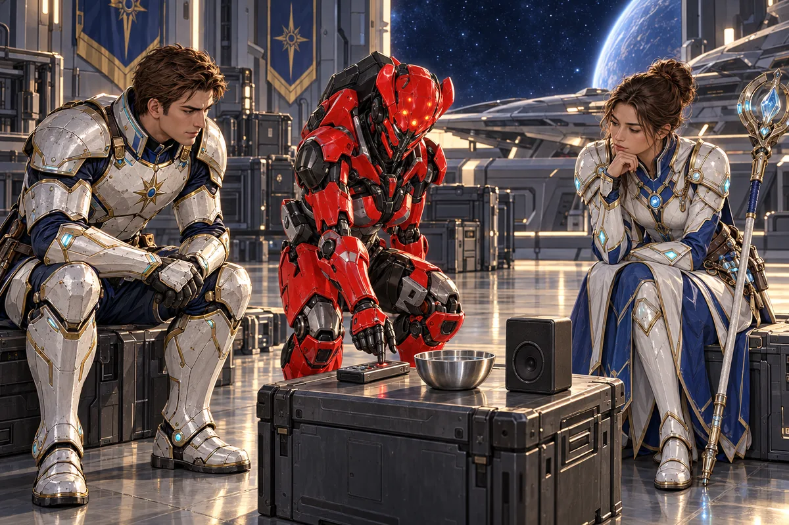
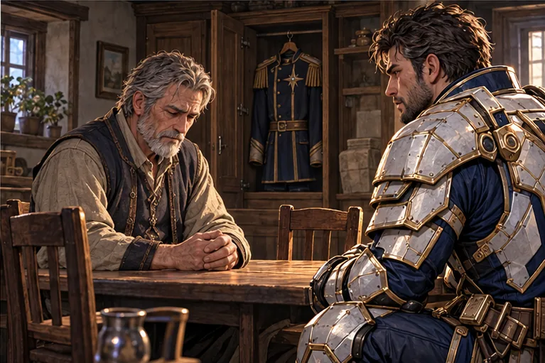
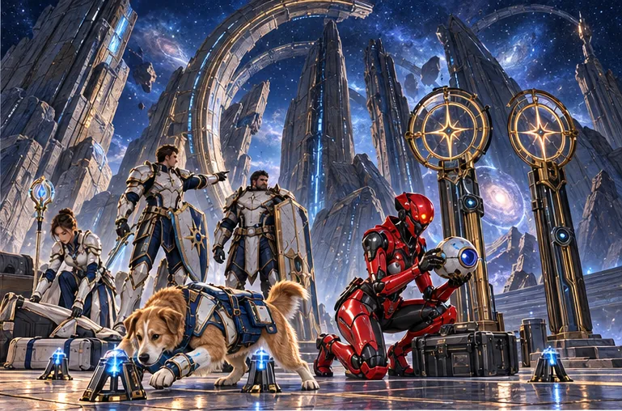
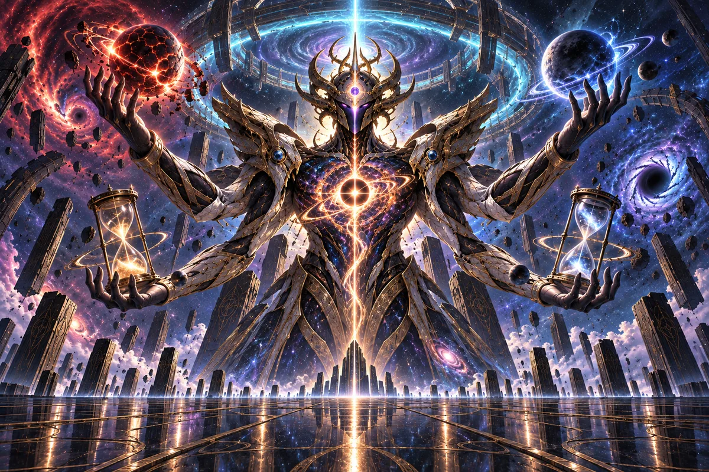
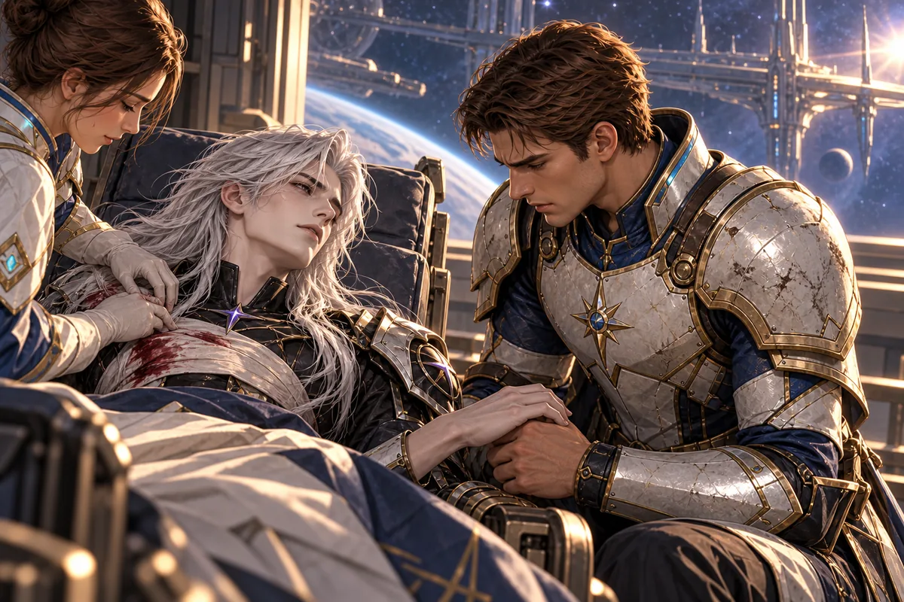

A science-fantasy novel
SIN STAR I
Book One
Complete first draft
45,532 narrative words · 40 chapters, prologue & epilogue
2026-10-06
Save editable manuscript
Prologue
The World He Ended
The last thing Kael heard from Ilyr was a woman asking whether the northern trains were still running.
She had not addressed him. The question belonged to a conversation in a station office, carried among thousands of other transmissions through the observational field around his hand. He could have dismissed it. Instead, he brought the office into view.
A cracked green cup stood beside the woman's elbow. Behind her, through a window clouded with fingerprints, families waited under departure boards that had ceased promising times. A boy slept with his face against a case of surveying instruments. Someone had put a coat over him.
“Tell them to wait,” a man answered.
“How much longer?”
Kael closed the view.
Beneath him, a planet turned. Cloud covered the southern ocean. On its night side, the cities made a shape he knew more intimately than some of the faces he carried from previous lives. He had brought the first rain to the continent below his feet. Not as a metaphor. He had drawn vapor from the ocean, balanced the upper winds, and waited on a bare hillside with the people who had asked him to try.
He remembered how they had laughed when the water came down cold.
Now a pale discontinuity traveled beneath the cloud. It was not weather. The world was losing agreement with the space around it, the result of an experiment he had approved because its early models suggested a way to relieve a particular kind of suffering. A person might be given more lived time within the same finite span. A parent could have another season with a child. A physician could obtain the minutes an injured patient did not possess.
For forty-three years, it had worked.
The disagreement between local time and the surrounding universe had first appeared as an error smaller than the instruments could reliably distinguish. Then larger. Then in places the model had said it could not reach.
He had stopped the work. That fact would appear first in his account. He knew already that he would put it first.
But stopping the work had not undone it.
An evacuation was under way. Ships had carried thirteen thousand people beyond the affected region before the routes began bending inward. The technicians on the ground wanted nineteen more hours. One of them believed she could open a second passage. Her calculations were unfinished. His calculations showed an increasing possibility that another planet would be caught, then the connected relay system, then distances even he could not isolate without destroying what they contained.
A possibility. He did not permit himself to call it certainty.
The woman in the office had a name. Reth. He had met her at the hillside ceremony forty-three years earlier. She had corrected his pronunciation of her city and then apologized for correcting him. He had told her never to apologize for knowing where she lived.
He opened the field again.
Her unanswered message remained among the requests waiting for him.
We believe the north route can be made safe. Please give us the time.
It would have been easier if they had begged incoherently. He could have placed anguish against calculation and told himself that only one of them was capable of judgment. Reth had sent measurements. She acknowledged the risk. She was not asking him to forget the other worlds. She was asking whether he had allowed enough room for what he did not know.
Kael read every line.
He could have waited. That remained true afterward.
He chose not to.
The Axiom assembled around him without sound. Ordinary language described an event after it happened. This described the conditions under which the event would be allowed to happen at all. He took the boundary of the failing region and closed it against the surrounding space. Inside that boundary lay an inhabited world, its uncertain future, and eight hundred million people who had not given him permission to decide that their time was over.
His body stood upon nothing. It was a human body in that incarnation, capable of fatigue and warmth, and his hands trembled as he separated the last route.
He did not need to feel his hands. He chose to keep feeling them.
The station office returned, unbidden, in memory. Not a vision of the future. He had never possessed that mercy or that horror. Merely a woman waiting for an answer, a boy asleep beneath a coat, a green cup somebody had brought from home.
“I am sorry,” he said.
There was no one close enough to hear it.
Ilyr disappeared.
No explosion crossed the stars. He contained even the light. The discontinuity closed. The linked worlds remained intact. People on those worlds continued to sleep, argue, mend things, and expect the morning. Most would never learn that they had been in danger. None of that made the empty place below him less exact.
For a long time he did not move.
He had survived endings before. Entire skies had passed into histories nobody but he remembered. He had been reborn beneath unfamiliar suns with the taste of another person's last kiss still returning to him in dreams. He had watched languages disappear while the memory of a joke remained clear enough to hurt. That accumulation had taught him an immense number of ways to endure.
It had also taught him how to make an account.
He recorded the beginning of the experiment, the benefits, the failure, the attempted evacuation, the probabilities. He entered the number of known survivors. He entered the population that had remained.
At the conclusion he wrote that isolation had prevented a wider catastrophe.
Then he stared at the sentence.
He did not know what the wider catastrophe would have been. He knew what he had feared, what his models had shown, what he had chosen. The sentence had made the outcome sound cleaner than the act.
He changed it.
I destroyed Ilyr to prevent a risk I judged greater than the lives remaining there.
He kept Reth's message attached.
This was not enough. He knew it was not enough. He had known, even then, that grief faithfully preserved was not the same as responsibility accepted. Nevertheless, he preserved it, because deleting the message would have been another act, and because there were already too many ways in which he was learning to make people disappear.
In the centuries that followed, the account would travel with him. He would consult it when deciding which experiments to forbid. He would consult it when deciding which risks justified still more power. Sometimes he would remember the thirteen thousand survivors and feel that he had salvaged something. Sometimes he would remember the eight hundred million and wonder whether the person capable of such a choice had ever deserved to be trusted with the first rain.
He would go on loving life.
He would go on believing that a universe that made such choices necessary had to be remade.
And it would be many years before he could bear to ask whether the universe had made that particular choice, or whether he had.
Chapter One
A Room for One
Arin had chosen the room because it had no adjoining door.
The landlady had advertised the view first, then the dry ceiling, and finally the discount for a Hunter willing to mend the window latch. The view was of a wall. The ceiling was dry because it had not rained in eleven days. The latch had taken him an hour, and she had deducted the price of the replacement screws from his first discount.
But no one could enter from another room. That mattered more than the view.
He woke before dawn with his fist against the wall and a word still caught behind his teeth.
For a moment he could not remember which world he was on. There had been glass in front of him, white fire beyond it, his mother's hand pulling a strap across his wrist. His father had been saying something ordinary. The dream never let him hear the end of it.
Then the room assembled itself: narrow bed, one chair, shoulder armor on the floor, a cup rattling against the edge of the table.
“Stop,” he whispered.
The cup stopped.
Someone struck the partition with the flat of a hand.
“Some of us have work!”
“So do I.” His voice scraped. He waited for an answer and was relieved when none came.
He washed with the water left in the basin. It smelled faintly of metal. Beneath the mirror, a crack ran through the plaster that he did not remember seeing the previous night. Buildings settled. People said so. He would mention it to the landlady before she decided that Hunters were liable for foundations as well as screws.
In the small compartment inside his pack lay the wrist strap from the dream. It had been blue once. The fabric had worn almost smooth beneath his thumb, and one edge was burned into a hard ridge. He had other things from his childhood in the narrow technical sense that a childhood could include a chipped cup or a stolen knife. This was the only thing he knew had belonged to a time when someone expected him home.
He closed the compartment.
The guild opened at first light. He could get there before the better-paying contracts were divided among crews.
Outside, Neris was waking by sections. The street lamps in the upper districts dimmed while those below the canals remained dark. Soldiers opened a distribution gate. A queue had formed already, people holding containers against their hips. Arin stepped around a sleeping woman and immediately disliked himself for noticing the empty space beyond her instead of whether she was breathing.
She was. He saw her move before he turned the corner.
That should have been sufficient. For several paces it was not.
At the armor stall, Pell held up the shoulder plate as if it had come to accuse them both.
“Neris issue,” he said.
“Formerly.”
“Very formerly.”
“It was cheap.”
“There are usually reasons.” Pell put the plate down. “You could buy another fastening. Or you could buy a fastening attached to armor that isn't trying to leave you.”
Arin counted his money. Enough for the first option, rent through tomorrow, and a meal if he did not need the lift to the lower levels. He disliked numbers that changed merely because he looked at them longer.
“Just the fastening.”
Pell did not argue. That was why Arin came to him.
At the guild counter, a clerk named Tessa slid a notice toward him. She had the expression of someone offering something she hoped would be refused.
“Waterworks inspection. The survey crew missed its return window. The municipal office wants their route recorder.”
“And the crew?”
“A rescue allowance, if they're alive.”
He read the sum beside recovery of the recorder, then the larger sum beside completion after nightfall. Dangerous machinery worked without regard for shifts, but people paid more when they could not see what was threatening them.
“Why hasn't a crew taken it?”
“Most are out along the border. The office waited before notifying us.”
“How long?”
“Longer than they should have.”
That sounded like an assessment rather than an answer. He signed anyway.
Tessa turned the form back toward him. “Emergency contact.”
“Leave it blank.”
“The new system doesn't like blanks.”
“Put the guild.”
“The guild would be doing the contacting.”
He looked at her until she looked away. He was familiar with the small disappointment that followed such exchanges. People mistook a withheld answer for an invitation to try again more gently. Tessa, who had seen him return alone from six contracts, understood better than most.
She entered something and pushed his copy across the counter.
Two Hunters at the next desk were making plans for breakfast. One of them recognized him from a salvage job and lifted a hand.
“We've got another chair.”
Arin had his refusal ready before the offer finished.
“Already eaten.”
His stomach contradicted him on the stairs. He bought a hard roll from a stall farther away, where nobody knew that he preferred them warm.
He spent the afternoon checking the route and sharpening the edge he hoped not to use. The supplied map showed three service passages, two access towers, and the sealed foundations of something older than the modern waterworks. The foundations were shaded out. A note informed him that the shaded area was irrelevant to the contract.
Irrelevant areas on official maps often contained the reason the contract existed.
By dusk he had arranged his pack so that he could leave quickly after collecting payment. There were other worlds, other walls to rent a view of. The tremors had begun before he came to Neris. So had the dreams. Moving did not stop either, but it relieved the unpleasant sense of being somewhere long enough to be noticed.
As a child, he had learned how to sleep with one arm through his pack. Later he had learned how to make a silence unpleasant enough that other people filled it by leaving him alone. He was proud of having learned useful things. He did not spend much time examining what the usefulness had cost.
He set the wrist strap beneath his sleeve, where it could not catch on machinery.
At the door he hesitated, then took the unused second pillow from the bed and wedged it against the window. The latch Pell's screws had secured still rattled when the wind came from the west.
There. One less thing to wake him.
He went down toward the waterworks with his armor fastened, his contract folded against his chest, and no expectation that anyone would come looking if he failed to return.
Chapter Two
Another Voice
On Earth, Kael bought tea he did not need.
The seller had a stain on her sleeve and a daughter who kept rearranging the pastries while her mother was not looking. Kael had visited the little hillside town before, though not during either of their lifetimes. Where the stall stood had once been a stone trough. Before the trough there had been a tree bent almost horizontal by a storm he remembered preventing from reaching the houses.
He knew better than to tell the woman any of this.
“Sweetened?” she asked.
“No.”
The daughter pushed a pastry toward him. One corner had broken off.
“You can have that one. It's not for selling now.”
Her mother made a small protesting sound.
“I'll pay for it,” Kael said.
“Then it is for selling,” the child replied, disappointed by the failure of her generosity.
He considered her seriously. “You're right. Thank you.”
She pushed it the rest of the way across.
He took his cup to a bench overlooking the lower streets. The girl returned to a complicated argument with her mother about whether broken things had lower value or a different purpose. He could have remained there for an hour listening. Once, in another life, he would have.
The thought did not soothe him. It was another item in the long inventory of things he could still recognize without entirely entering them.
Above the atmosphere, a fragment of old machinery was approaching a communications array. He altered its course with a movement smaller than the act of lifting the tea. No light appeared. Nobody thanked him. Earth went on being itself.
He had never been able to explain why this particular world drew him back with such insistence. Memory gave him more beginnings than a single answer could accommodate. Some were so old that the names of the worlds had been forgotten by everyone who had not carried them through death. Mars lay among those memories, red now, not always red. Earth had been many things, most of them without people who could name them.
There were stories he might have told about origins. None would have been honest enough yet to tell a child over tea.
What he knew was affection.
He had protected Earth from disasters its inhabitants never suspected. He had also failed it. Once he had turned his attention elsewhere and returned to skies choked with the aftermath of impact, immense bodies lying beneath unfamiliar weather, the living reduced to those who could hide, endure, or adapt. Nothing in his powers had allowed him to make that absence into the precise lives that had occupied it.
He could replace matter. He could reconstruct a body from an exact description. A creature's own continuation through the instant of death was another matter. Copies had eyes. They sometimes knew his face. Whether someone had crossed with the copied knowledge, or whether he had made another person and burdened them with the expectation of being the first, was not a question he had learned to settle by wanting the answer.
The Axiom obeyed exactness. Grief was not exact enough.
Later, when humans made wars, he intervened selectively and called the restraint respect. He stopped events that threatened extinction. He left most lesser catastrophes to those who inhabited the world. That boundary had allowed him to preserve human choice, to avoid governing every dispute, and to be absent when absence suited him. All three explanations were true. He preferred the first two.
He drank his tea before it cooled.
The first disturbance reached him through the cup.
Not a tremor in the bench. Not sound. The surface of the liquid held, for less than a heartbeat, a shape it had not been instructed to hold. Some small part of the agreement between matter and motion had received another direction.
Kael lowered the cup very carefully.
He waited.
There were old machines that could invoke fragments of the Axiom. There were practices called elemental arts, passed down among people who knew how to reproduce an effect without knowing the foundations of the language beneath it. He had listened to those echoes for ages. This was different. A recording could reproduce his voice but not the living authority with which the instruction entered reality. A device could repeat an authorized function but not originate the freedom inside it.
This had hesitated.
He set the cup beneath the bench and rose.
The girl called after him to ask whether the pastry was good. He almost failed to hear her.
“It was,” he said. “Thank you.”
Then he followed the disturbance.
Distance was not the chief difficulty. Determining where the event belonged was. He traced a pattern through relays older than the worlds built over them, through the faint shiver of a station window, through an empty instrument channel that had opened without a technician's hand. Somewhere a young man was sleeping, and in his sleep his mind was reaching past the familiar surfaces of things.
Kael stopped before making contact.
He had imagined hearing another voice so often that imagination itself required suspicion. In one of his earliest recorded attempts, he had created a speaking image from his own memory and mistaken its agreement for company. He had been ashamed enough of the mistake to preserve the record. He would not repeat it merely because hope had become rare.
He tested the resonance against his own. Similar, but not identical. Compatible, but not copied. A living direction with room inside it for refusal.
The young man woke.
The trace diminished, leaving only a place, a body, and a name spoken angrily through a wall.
Arin.
Kael stood in the dark beyond Earth's atmosphere, where his human body required neither air nor a surface because he had taken care of those details, and felt an uncertainty so unfamiliar that at first he mistook it for fear.
He had tried changing the universe's contents. He had made safe worlds, wealthy worlds, worlds where bodies did not age for centuries. Some had prospered. All had remained vulnerable to forms of loss he could postpone but not abolish. The deepest rules had resisted him, not because he lacked words, but because no single living instruction from within could authorize their complete replacement.
Another independent speaker might change that.
Might.
The word returned him to the empty place where Ilyr had been. He did not push it away. He told himself that he would proceed carefully this time, that he would learn before acting, that hope need not mean the repetition of old mistakes.
On the hillside, the woman began closing her stall. Her daughter ran to the bench for the abandoned cup and found payment beneath it, enough for the tea and nothing more. He had remembered, at the last moment, not to spoil the gift.
Far away, Arin prepared to enter the waterworks.
Kael followed, not yet knowing that the second voice might offer him something other than a second chance to be right.
Chapter Three
What the Reports Omitted
Mira's lesson that morning concerned the efficient movement of grain.
The chart was elegant. Blue lines carried supplies from the northern stores to the districts that required them, widening and narrowing according to need. At the end of each line stood a number demonstrating that enough had arrived. The treasury secretary explained the costs. The marshal explained the security. Her father listened with one hand beneath his chin, and her mother asked why one of the lines had changed since the previous report.
“Temporary diversion,” the marshal said. “Corrected.”
Mira knew a woman who had stood in that correction for five hours the previous night.
She had met her outside a clinic, though met was a generous word for holding a basin while the woman vomited what little she had eaten. There had been a child with her, old enough to pretend not to be frightened. Mira had asked where they lived. The answer belonged to the end of a blue line.
“Who confirms delivery?” she asked.
The marshal turned with the patient expression he used when reminded that the heir was in the room.
“Local officers, Your Highness.”
“Who confirms receipt by the households?”
“That is contained within the local assessment.”
“The same assessment sent by the officers confirming delivery?”
“Ordinarily.”
Her father glanced at her. He did not dismiss the question. That made the failure harder, in some ways. She could not simply divide her world into people who cared and people who did not. Her parents cared. The secretary cared about keeping the treasury solvent. Some of the soldiers passing out inadequate rations cared enough to share their own. Concern could exist everywhere in a system that still left a woman sick beside a closed clinic.
“I'd like the underlying reports,” she said.
“Of course,” the secretary answered quickly.
By afternoon she had received a cleaner version of the same chart.
Her water tutor found her studying it beside the practice pool.
“You're gripping the edge,” he said.
She released the stone. A current she had been holding unconsciously settled beneath the surface.
“You taught me that pressure goes somewhere when you refuse to let it go where it should.”
“In water.”
“Do you think people are entirely different?”
He considered the chart and wisely declined to answer a question that might later be quoted to the council.
Mira finished the lesson. Discipline mattered more when she was angry, not less. She shaped currents around floating obstacles, cooled a heated cylinder without cracking it, and restored a controlled flow through a narrow channel. Healing required the same attention. Water was not goodness made visible. Handled carelessly, it could drown, crush, rupture. She had been taught to understand what a body needed before imposing an impressive effect upon it.
She wished reports were held to the same standard.
That evening she put away her jewelry and changed into clothes plain enough to be overlooked, though she was beginning to understand how much palace plainness differed from the real thing. Her boots were too well maintained. Her sleeves had stitching nobody on the lower streets paid for. She covered the stitching with a borrowed coat.
This was not the first time she had left without a formal escort. She informed one trusted attendant where she intended to go and when an absence should become a concern. The arrangement was imperfect. So was remaining indoors while everyone reassured her that the water was safe.
Beyond the palace, Neris smelled of warm stone and channels running lower than their builders had intended. Music came from a doorway despite the shortages. Someone had repaired a broken streetlight with wire of three different colors. The city did not exist only in the condition of needing her help. People were living in it, doing things competently, making jokes, becoming impatient with one another. She liked it more when she remembered that.
At the clinic, an attendant named Maelin was washing cups in water that had already washed too much.
“You again,” she said.
“Disappointed?”
“Depends. Did you bring bandages or questions?”
Mira opened her bag.
“Both.”
“Then put the bandages there. We'll see about the questions.”
A surveyor's wife arrived while Mira was helping move a patient. Her husband had gone below the waterworks with two others. The office told her that contact failures were normal. The guild told her that an inspection contract had been issued. Neither told her whether anyone had spoken to him since yesterday.
“He said the old pumps were making a noise,” the woman explained. “Not breaking. Like someone breathing in the walls.”
Mira asked which access tower he had used.
Maelin watched her too closely.
“You aren't going down there.”
“I want to look at the entrance.”
“That's the answer people give when they're going down there.”
Mira left the remaining bandages on the table. She promised to return, then disliked how easy promises could sound when someone else was left waiting for them.
At the lower gate a guard had propped his sore foot on a crate. She might have revealed herself and demanded passage. The resulting notice would have traveled farther and faster than she could. Instead, she followed the service path described by the surveyor's wife, past a drain whose current carried an unnatural warmth.
The entrance was not properly secured.
That was the first fact she would have to put in her report.
The second was blood on the upper stair.
She knelt beside it. Fresh. A scrape rather than a pool. Below, metal struck stone hard enough to make the water jump in the channel.
Mira called out.
No one answered her. Someone below shouted at something that could not listen.
She took off the borrowed coat, folded it where she could find it again, and went down the stairs.
There would be time later to consider whether she had been reckless. If someone was hurt, later was not yet.
Chapter Four
The Woman in the Channel
Arin found the first surveyor alive, which complicated the contract.
The man lay wedged behind a maintenance frame with one leg beneath a strut and the route recorder tied to his wrist. He was trying to loosen the recorder with fingers that had stopped doing what he wanted.
“Take this,” he said.
“I'm looking at the strut.”
“The map's wrong.”
Arin had already noticed. The supplied passage ended in a wall that did not exist, while the unmarked opening beyond it led toward a light that changed color when he looked away. One of the other surveyors was dead near the lower rail. The third had gone for help and had not returned.
“What happened?”
“We opened the access cover. It woke something.”
Arin disliked the word woke applied to machinery. It encouraged people to assume a purpose where there might only be a damaged function. He examined the strut, braced one foot against the frame, and pulled.
The surveyor screamed.
The defense assembly overhead responded to the vibration.
It moved with the unhesitating violence of equipment built to remove obstructions. Arin let go of the strut and brought up his sword. The first strike glanced off his shoulder plate. Pell's new fastening held. The second drove him backward onto a section of floor that had been hollowed out by warm, contaminated water.
For one instant the stone supported him.
Then he was below it.
His breath left him. He tried to stand, and his left leg answered with a pain that made everything above the knee briefly meaningless. The assembly rotated toward the channel. Behind it, a pressure gate opened.
He could see exactly what would happen. Water first, then the loose machinery driven into the narrow space where his body lay. His sword was within reach. There was nothing useful to strike.
He thought of the emergency-contact field and was angry with Tessa for having made him think about it at all.
The descending water turned sideways.
It did not stop. A clear sheet rose between him and the machinery, catching the pressure and folding it along a curve. The assembly struck the curve and lurched into a stone pier. Metal tore with a noise that hurt his teeth.
A woman dropped from the stair and knelt beside him.
“Can you move your foot?”
“I was trying.”
“Try again.”
Her hand touched the side of his leg. Water gathered around the injury, cool at first, then almost painfully exact, pressure changing beneath her fingers as if she could feel the shape of what had gone wrong.
He gasped.
“You could warn people.”
“You could answer them.”
He moved his foot. The pain remained, but the leg was his again.
The assembly shifted against the pier.
“That thing isn't finished,” he said.
“Neither are we.” She helped him stand. “Can you reach the upper joint?”
“If it holds still.”
“It won't.”
That was an honest answer. He liked it despite himself.
She drew a current across the machine's lower bearings. It adjusted to the pressure, exposing the damaged joint for less than a second. Arin struck once, withdrew before the counterweight could catch him, and struck again when she turned the current beneath it.
The assembly stopped pretending it was whole.
They stood listening to the falling pieces. The woman did not smile at their success. She was looking toward the surveyor.
“We need something to carry him on.”
“The upper stairs are clear,” Arin said. “We can get out.”
“He can't walk.”
“I can see that.”
“Then find a board.”
He almost told her that he was not accustomed to being ordered around by strangers. This would have been a lie, given his profession, and she looked capable of noticing it. He found a maintenance panel strong enough to carry a man. Together they shifted the strut and settled the surveyor on it.
On the way up they found the third surveyor beneath a broken stair. Alive, barely. The woman stopped beside him.
“We can't carry both,” Arin said.
“No. We'll have to come back.”
There was no admiration in her voice for the necessity. It was simply the next thing that had to be done.
By the time they reached the clinic, Arin's leg was shaking and the recorder had become an unpleasant weight against his hip. The woman called for clean storage. The attendant pointed without looking up. She had another patient on the examination table and a child asleep in a chair against the door.
Arin set the injured surveyor down.
“I need the rescue receipt.”
The attendant stared at him for half a second, then found a form with a hand still wet from washing.
He hated the stare. He needed the money. Both facts occupied the same narrow space inside him.
The woman who had saved him took the receipt and placed it beside his pack so it would not get wet.
“There are boards behind the storehouse,” she said. “A wider one this time.”
“You're going back?”
“So are you, if your leg will hold.”
He could refuse. She had given him that much, at least. He looked down at the bandage she had secured beneath his armor. Without her, there would have been no question of whether it would hold. There would have been no leg, or no one left to care about it.
“Give me a minute.”
She gave him two, busy with someone else rather than watching to see whether he deserved them.
They went back. They returned with the other man. At dawn the clinic had three new patients, one dead person to account for, and no more space than before.
The woman remained.
Arin stayed long enough to learn her name.
“Mira,” she said, accepting a basin from him.
“Arin.”
“I heard the surveyor say it.”
“Then why did you ask?”
“I didn't. You told me.”
He had. That seemed more significant than the small exchange justified.
Later, while she worked a fever down in a child whose mother had stopped trusting sleep, he asked why she had come after him.
“You were in trouble.”
“You didn't know that when you entered.”
“I heard someone shouting.”
“I don't know if I would have done the same.”
She did not pretend this was charming honesty. She considered him for a moment, tired enough that her face no longer hid how carefully she was choosing her words.
“You don't have to settle that before helping the next person.”
Then she asked him to bring in the six basins outside.
He brought in all six. When he finished, she had started on another patient. He sat in the spare chair without being invited and fell asleep with his hands empty.
Chapter Five
The Names of Rain
Kael had once spent an entire morning failing to mend a door.
Not because he could not. The door belonged to Sena, and Sena had stipulated that it be mended with the tools she had provided rather than by changing the agreement between wood and air. The distinction had seemed unreasonable to him at the time.
“It will stay repaired either way,” he told her.
“And when you're not here?”
“Then it will still be repaired.”
“And when the next door breaks?”
He had looked at the bent hinge and understood, belatedly, that she was not asking about doors.
The house stood on a world called Leth, in a life far earlier than any history Arin would recognize. Kael had been flesh and blood then, too, though younger in his understanding of what persisted inside him. He remembered other lives. Their return had ceased to astonish him. It had not yet ceased to comfort him that there were still people he could meet for the first time.
Sena repaired irrigation channels for the town. She wore her hair close to her head because long hair caught in the pumping housings. Her hands were broad, one knuckle permanently crooked from an accident she recounted differently depending on her audience. She disliked being called fearless. A person who had been pulled halfway into a pump, she said, would have to be an idiot to stop fearing pumps.
He met her during a dry season. He had offered rain before asking how the town collected it. She made him wait while the workers cleared the catchment channels.
“You're giving us water,” she said. “Not an excuse to drown in our own laziness.”
When the rain came, she did not look at him. She looked at the channels, making certain it went where they had prepared for it to go. Only afterward, when the reservoirs had begun to fill, did she stand beside him on the hill and let herself laugh.
He had loved other people before her. This did not make loving her feel like repetition. That was something he would later forget how to explain to himself, though the memory remained entire.
She had a daughter named Iri, who regarded him initially as a difficult addition to the household. He knew too much about stars and too little about where the pans belonged. He could answer questions her teachers could not, yet burned a pot of grain because he had become distracted by an argument about whether the grain ought to stick.
“You could just watch it,” Iri said.
This was the first useful advice he received that day.
He stayed.
The decision did not arrive with a vow. There were channels still to repair, a market he liked, a woman whose displeasure had begun to matter to him more than the assent of people who called him miraculous. He rented a room, then moved into the house, then found himself buying the kind of tea Sena preferred without remembering when preference had become a domestic responsibility.
He knew what would happen if he remained long enough. Bodies failed. Accidents occurred. He could prevent much. He could not yet solve every delicate process by rewriting it, particularly those whose identity lay partly in their uninterrupted passage. The fact that he could lift a sea did not mean he knew which remembered hesitation made a person herself.
He did not tell Sena everything at once. She noticed the omissions before he finished arranging them.
“You speak as if you might outlive this town.”
“I might.”
“Will you leave before that becomes inconvenient?”
“No.”
It was a promise. He had made others and lost the people to whom he made them. He gave this one anyway.
Years passed. Iri grew into a woman who wanted to design ships. Sena worried that there were too many attractive ways to get lost among stars. Kael helped pay for her training and was accused, with some fairness, of siding with whichever member of the household had asked him last.
On the morning of Iri's departure, Sena inspected every fastening on the travel case and then pretended to be examining the quality of its manufacture. Kael recognized the pretense. He had already inspected the ship's drive without telling either of them.
“She'll come back,” he said after they watched the vessel rise.
“You don't know that.”
“I know the route.”
“That isn't the same thing.”
He thought about saying that he could go after her. Sena touched his wrist, not to stop him acting, but to stop him filling the fear with solutions that did not address it.
“I know,” she said. “You would.”
They walked home. The door still closed badly. He repaired it with the tools she had provided, and this time it remained repaired through the winter.
When Sena became ill, he did not accept it quietly. Neither did she. Physicians came. He listened to them rather than assuming their limited powers meant limited knowledge. He altered what he could accurately understand. The disease retreated. Years were added. She returned to the channels, then retired from the channels, then annoyed her successors by visiting them under the pretext of walking past.
Those were good years.
They did not become worthless when the disease returned.
At the time, he knew that.
It was much later, after more losses, after Ilyr, after he had begun treating impermanence as evidence against the lives that occupied it, that he started recording the story as another failed attempt to defeat death. The description was not entirely false. That made it more dangerous. It removed the door, the burned grain, the ship rising while Sena gripped his wrist. It removed what the years had contained and left only what they had failed to prevent.
Now, watching Arin asleep in a clinic chair while a young healer moved between patients, he remembered the house with painful precision.
Mira had covered the Hunter's injured leg with a folded cloth. She had not asked whether the man would someday do something useful enough to justify the cloth. It was cold near the door. That was all.
Kael stood outside the clinic, unseen by those passing him. For a moment he could have entered. He could have offered help without saying why. He knew enough of medicine to make himself useful, and the people inside were asking for nothing more complicated than another pair of hands.
Instead, he followed the residue of Arin's Axiom into the ground.
There was a larger purpose now. He told himself that he could not allow the recovery of an old feeling to distract him from it.
At the turn of the street, he stopped and repaired a broken supply pipe without being asked.
It was a kindness. It was not the choice he had avoided.
Chapter Six
The Chamber That Answered
The municipal engineer wanted Arin to sign a statement saying that the survey team had entered a restricted area without authorization.
“They were using your map,” Arin said.
“The map wasn't current.”
“It was issued yesterday.”
The engineer looked at Mira, perhaps hoping that the quieter of the two would be easier. He had not yet heard her quiet voice become exact.
“Who authorized a survey using a map known to be wrong?” she asked.
“I didn't say it was known.”
“You said it wasn't current. When did you discover that?”
His name was Halen. He had the exhausted skin of a man who spent more time in machinery than daylight. After another minute of questions, he stopped trying to preserve an account he had plainly not written himself.
“I've reported it,” he said. “Three times. The old relay supports the district pumps. When the new generators failed, they told us to keep the relay active until replacement equipment arrived. That was nine months ago.”
“Has it been nine months since the water changed?” Mira asked.
“No. Less. The heat began earlier, but the pressure disturbances are new.”
Arin glanced at the clinic, where he had woken with the unpleasant suspicion that he had been talking in his sleep. Mira had said only that he seemed frightened. She had not repeated the sounds.
Halen agreed to take them below, provided they did not shut down the whole district in a dramatic gesture. The clinic's water came from the same pumps. So did the upper reservoir and the kitchens supplying two relief depots. Arin was becoming tired of discovering that the broken thing was also the thing holding everything else up.
The relay chamber lay beneath modern walls pierced by cables their builders had not entirely understood. Rings of dark material occupied the center, their surfaces marked with lines that resembled writing only until he tried to decide where one character ended. New instruments had been bolted onto ancient fittings. Several displayed values beyond their intended range.
“Can you disconnect the contaminated loop?” Mira asked.
“Not from here. Someone has to release it below.”
Arin looked down through the grating.
“Naturally.”
The release was accessible through a narrow maintenance passage. Halen explained which of the similar handles would isolate the loop and which would cut the district's pressure. Arin made him explain it twice. Being mistaken in an uninteresting place could kill people just as efficiently as a monster.
He crawled into the passage while Mira drew water away from a damaged seal. The temperature fell enough for him to touch the lower mechanism. He found the handle, braced himself, and turned.
The ring above him changed direction.
A sound struck the back of his teeth.
He was on the ship again. His mother's sleeve against his face, the unfinished sentence, light bright enough to have weight. He knew that he was dreaming because he was old enough to know the dream, but knowing did not wake him.
Something in the dark beyond the door asked him a question without words.
His body answered.
In the chamber, the water stopped falling.
Mira would remember that afterward: the suspension of droplets that should have been cutting across the lower passage, each holding a tiny reflection of the instruments. Halen's alarm continued for three notes and then held the fourth.
Arin did not remember any of it. He remembered a voice reaching him through the light.
“Arin. Listen to me.”
He tried to speak again.
“No. Breathe first. Back to my voice.”
The ship disappeared. He was lying on a metal floor with Mira's hand braced against his shoulder. Water resumed falling around them. Somewhere above, a ring completed a rotation it had begun before he was born.
“What did I do?”
Mira looked at Halen. The engineer's face had become a color Arin did not like.
“I don't know,” she said.
The honesty frightened him more than reassurance would have. He pulled himself upright. The handle had reached its final position. The contaminated loop was isolated. The district pressure remained.
Then Halen's instrument opened a list of responses.
They were not all from Neris.
One belonged to a survey station beyond the local trading routes. Another was a position the municipal map did not contain at all. The responses had the same interval as the disturbance in the chamber. Whatever Arin had said, it had not remained with him.
“I didn't mean to,” he told them.
“I believe you,” Mira said.
He had expected an accusation and was suddenly less prepared for belief.
Above them, the city had felt a minor tremor. A ceiling had cracked in one depot. A woman had lost a row of cups. No deaths were reported from the disturbance. Arin listened to each fact as though someone might later test whether he had noticed the distinction between no deaths and no harm.
He would have left Neris that evening if leaving could have made the consequences remain there.
Mira found him at the clinic gate with his pack on.
“Where are you going?”
“I haven't decided.”
“Then decide after we speak to someone who can help.”
“People don't usually help with things like this.”
“What do they usually do?”
He did not answer. He had been young when the first frightened adults began moving him to rooms farther from everyone else.
Mira took that silence seriously.
“We won't pretend it didn't happen,” she said. “And we won't hand you to someone merely because they're wearing a more expensive uniform. Those are both promises I can make.”
He looked at her boots, still improbably good beneath the channel mud.
“How expensive a uniform do you own?”
She hesitated.
A royal guard entered the courtyard behind her and stopped with visible relief.
“Your Highness.”
Arin stared at the guard, then at Mira.
“Oh,” he said.
It was the least interesting thing he had intended to say that evening, and for once it was the only one available.
Chapter Seven
Permission to Leave
Mira disliked how the palace changed people's posture before it changed anything else.
Halen, who had spoken plainly below the pumps, began offering qualifications while still in the entrance hall. Arin became more still. The guard who had found her would not meet her eyes, although he had every reason to be angry. She thanked him for coming and told him the responsibility for her absence belonged in her report, not his.
Her mother was waiting in a smaller council room rather than the throne chamber. This was considerate of Halen and considerably worse for Mira.
“Are you hurt?” the queen asked.
“No.”
“Did you put others in danger?”
Mira looked at Arin's bandaged leg.
“I helped people who were already in danger. I also went without an adequate escort.”
“Both can be true,” her mother said.
“Yes.”
The king entered with the marshal and a technician summoned from the upper relays. Mira resisted the temptation to begin with the extraordinary. She showed them the wrong map, the ignored maintenance reports, the contaminated loop. A kingdom should not need a cosmic disturbance to make water important.
The marshal objected to Halen's account on procedural grounds. Halen's shoulders tightened. Arin, who had remained silent, placed the original guild contract beside the new report.
“The map came from your office,” he said. “The crew didn't make the room disappear from it.”
The marshal gave him a look accustomed to ending contributions.
Arin waited. He had less experience with court than Mira, but he had considerable experience with people who wanted something without paying for it.
The queen ordered the original logs preserved. Not summarized. Preserved.
Only then did Mira show them the remote responses.
The technician examined them for a long time. He asked Arin to reproduce the sound. Arin's face changed, and Mira answered before the silence hardened.
“Not until we understand what it can do.”
“We need evidence.”
“We have injured witnesses and a recording. Begin there.”
The technician looked at the queen, who nodded.
It was a small intervention, but Arin noticed. Mira saw him notice and deliberately did not turn it into another assurance. Trust could become as tiring as suspicion if someone insisted on narrating every reason to grant it.
The first identifiable off-world response came from Veyra, a frontier port where a relay survey had been interrupted by fighting. Neris's own archives contained an incomplete record of the network connecting them. The technician could not safely repair the relay without learning how the older system was changing.
Her father proposed sending specialists.
“Send them,” Mira said. “I should go as well.”
“You are needed here.”
“Yes.”
He looked at her sharply, expecting the objection she had not made.
She unfolded the plan she had drafted at the clinic. Halen and two independent engineers would maintain the isolated loop. Maelin's clinic would report directly to the queen alongside the administrative report, so neither could erase the other by being more attractively formatted. A small relief allocation would cover safe water during the inspection. Mira would carry authority to obtain the Veyra records and return, with regular messages and an agreed limit on discretionary spending.
The plan had weaknesses. Her father found three. Her mother found a fourth. For once Mira was glad to have them examined rather than hidden by ceremonial approval.
“You cannot personally verify every report in the kingdom,” the king said.
“I know. I'm trying to learn how not to depend on having to.”
He leaned back. The tiredness in his face frightened her more than the marshal's impatience. She could no longer regard her parents merely as obstacles to good government. They were people inside it, responsible for choices, vulnerable to conveniences they had allowed to become habits.
In the end the mandate was granted, narrower than she had requested and wider than the marshal preferred.
It did not make her free of Neris. It bound her to return with something useful.
Outside the room, Arin waited beside an ornamental pool that had been supplied with clean water throughout the shortages. He was looking at it in a way she found difficult to bear.
“I know,” she said.
“Do you?”
“Yes. I know about this one.”
That answer brought his attention back to her.
She told him what had been agreed. He could travel under contract as a witness and field escort. His role in the disturbances would not be concealed from the specialists, but their work would proceed with his knowledge. She did not ask him to call confinement protection. He could refuse.
“And if I refuse?”
“The dreams go with you,” she said. “I would rather you had people helping you understand them.”
“You keep making that sound simple.”
“It isn't. I've just decided it matters.”
He looked down at his armor. “My repair allowance needs to be specified.”
She almost laughed, then recognized the way he had chosen to say yes.
“We'll specify it.”
A palace attendant brought her field equipment before departure. The armor shared the same structure as Arin's surplus, though hers fitted and his had survived several owners. He studied them side by side.
“That explains why mine was cheap.”
“It explains why the parts are still available.”
“Mine would like more of them.”
For the first time since the relay chamber, he looked briefly like a young man rather than an injury keeping itself upright.
They left Neris aboard the Tern, a compact trading vessel whose captain, Dessa, accepted royal authorization only after confirming how payment would arrive. Mira approved of her immediately. Arin approved of her later, when she refused to let a dock official surcharge their medical supplies.
As the ship rose, Mira watched the canals become lines. From this distance, the city looked orderly. It would have been easy to believe the chart.
She kept watching until the people became too small to see, reminding herself that they had not become less specific merely because her view could no longer distinguish them.
Chapter Eight
A Place for Hope
Kael watched the Tern leave and did not follow immediately.
The temptation was to enter the sleeping mind, speak clearly, obtain answers, begin. It had the attractive shape of efficiency. He recognized that shape. Many of the things he regretted had first appeared as sensible ways to avoid wasting time.
Instead, he returned to the place where he kept his records.
It was not a palace. People who imagined his power tended to furnish it with thrones, armies, and servants whose lives were organized around attendance. Kael had tried being a ruler often enough to know how much of a day could be wasted listening to people explain what they thought he wanted to hear. His present dwelling occupied the interior of an asteroid he had moved into a quiet orbit. There were windows because he liked windows. Beyond them lay a star with no name in any inhabited language.
One room contained ordinary furniture. Another contained things he had been unable to throw away. The remainder held histories.
He entered the room of ordinary things first.
On a shelf stood a narrow wooden model of a ship. Iri had sent it from her training station long after leaving Leth. The hull was inaccurate. She had been practicing a style she found beautiful rather than one an engineer would trust. Kael had preserved the model through transfers between bodies, through failures of the shelters in which he kept it, through more endings than wood ought to survive.
Other possessions had not lasted. He remembered them too. Survival was not proof that the things on the shelf had mattered more.
Arin's trace moved faintly along the relay routes. At intervals it vanished as the young man woke, spoke to someone, ate. Kael could have increased his attention enough to intrude upon all of those acts. He kept the contact narrow. That restraint pleased him until he noticed he was congratulating himself for not doing something to which he had no right in the first place.
In the records chamber he placed the new resonance beside the oldest surviving patterns of his own embodied authority.
Not identical.
He had needed to check that again.
The human body on the trading vessel carried a history he could partly read, not as names printed across generations, but as the persistence of structures he recognized. Biological inheritance had carried something through divisions he had never expected it to survive in useful form. Most descendants had been ordinary in the way that once struck him as a blessing: they lived one life, loved those they encountered, and did not wake as children with the memories of people buried under other suns.
He remembered a son who had asked whether being his child meant he would have to outlive everyone too.
“No,” Kael had said then, with certainty he should not have claimed.
The son had not. That did not turn the certainty into knowledge.
Arin was not another incarnation of Kael. He was not a container waiting to be filled. The distinctions were clear in the trace. Yet something of Kael's ancient capacity had persisted until a combination neither he nor any model he trusted had predicted made it available again.
He laid out the old attempts to reach the foundational level of the universe.
There were many failures. Some were gentle: commands that simply found no purchase. Others had broken local systems with consequences he had spent centuries containing. In every case he had been one living source asking the whole structure to allow him to alter what made such asking possible. He could manipulate matter across a galaxy. He could not make his own authority into an independent agreement with itself.
An image made from him was still him. A mechanism repeating his words carried only the authority he had assigned it. Another living source might be different.
He began a new model.
For three hours, no one was endangered by his hope. He kept it that way deliberately, restricting the work to abstractions that did not contain self-aware inhabitants. He had learned enough about experience to know that calling something a simulation did not prove nobody was inside it.
The model did not fail in the familiar way.
It opened a possibility.
Kael sat down.
He had stood through the formation of stars without needing to sit. This small accommodation of his body felt almost embarrassing. He was allowing it to tell him something he had spent ages translating into other terms.
He wanted this.
Not merely as an answer to an intellectual problem. He wanted a universe in which the people he loved would not be taken from him by conditions they had never chosen. He wanted an end to watching someone become afraid while he explained, honestly and uselessly, the limit he could not cross. He wanted to stop remembering the particular sound Sena made when she tried not to wake him because pain had returned in the night.
He wanted the woman in Ilyr's station office not to have had to ask for nineteen hours.
And he wanted, beneath all of that, to be allowed to stop.
The wish frightened him. It complicated the purity of the larger purpose. He had spent so long saying for everyone that admitting the part which meant for me felt like the discovery of corruption, though it had been there all along.
He wrote the words Second Dawn at the head of the model.
There had been many dawns. The name was not numerical. It was what a person called the morning after believing there could be no more mornings worth awaiting.
When Arin slept again, Kael approached the boundary of the dream.
He found terror before he found language. A ship, a warning chime, the inability to reach someone moving away. He could have softened the dream by force. He had altered memories before. The resulting gratitude had sometimes been genuine, and that had made those alterations easier to justify than they should have been.
He did not touch the memory.
Instead, he stood where the young man's mind was already making a dark figure beyond the door. The dream supplied a battlefield. Kael had not designed that either. Arin regarded the thing he did not understand as something he would have to fight alone.
Kael recognized the stance.
He had used it through too many lives.
The boy—no, the young man; he corrected himself—raised a weapon and came at him.
Kael caught the strike without hurting him.
He could wait for a conversation. He could begin with restraint. He could prove, perhaps, that this time hope would not require him to turn another person into an instrument.
Then he looked at the two living signatures in his model and began, almost without noticing, to plan what Arin would need to become.
Chapter Nine
The Last Lift
The first person to rebuke Arin on Veyra was a dog.
“Marked path, please.”
Arin looked toward the human technician standing beside the customs station. She pointed down without interrupting her work.
The administrator behind the low counter had gray fur around his muzzle and a device fitted to his chest harness. One paw rested on a panel. He looked at Arin with the tired patience of someone who had given the same instruction too often.
“I am still here,” the translator said.
Arin stepped back from the recessed traffic lane.
“Sorry.”
The administrator returned to his records. It was not a revelation that required ceremony from his point of view. It was a traveler who had finally noticed where to put his feet.
Veyra was not the hidden ancestral world of the Kynari. It was a frontier port, open by difficult agreement to people who had good reasons to mistrust one another. Signs stood at different heights. Work surfaces adjusted for different bodies. A human child crouched beside a canine elder who was demonstrating how to operate a repair tool with no fingers at all. Beyond them, an artificial dockworker argued with a human supervisor about overtime.
Mira stopped to read a memorial panel near the passenger gate. It named residents taken during the last period of enslavement and those still missing. Human soldiers had helped liberate the port. Artificial volunteers had helped rebuild it. A remaining hostile faction continued to raid the outer settlements. The list was more complicated than any single banner above the terminal.
Their destination, the survey enclosure, lay beyond an evacuation district. The municipal contact who was supposed to meet them had been sent to help move civilians.
Arin found an escort contract following the same route.
“You're taking another job?” Mira asked.
“It gets us there.”
“And them?” She nodded toward the families waiting beside their baggage.
“It gets them there too.”
He heard how defensive he sounded and did not know why a practical suggestion had made him uncomfortable. Mira agreed without making him improve the explanation.
The first hours were uneventful. He helped load a transport, moved a crate down to a height its owner could reach, and learned not to assume that the human carrying a harness was necessarily in charge of the Kynari wearing it. Mira treated motion sickness in a child while an artificial medic prepared cooling packs for another passenger.
Then the eastern gate closed.
A controller on the terminal display announced that registered assets were to be returned to their previous custodians. The Kynari coordinator disconnected the display halfway through the second sentence.
“North rooms first,” she told the staff. “Anyone who needs carrying goes now.”
Arin drew his sword as the first raiders breached the service entrance.
He could manage those. Their machines had been built for intimidation and control, not for an opponent who understood how to use pillars to keep them from surrounding him. He disabled one at the knee and another beneath its exposed power housing. Behind them came a heavier unit.
Then another.
Mira was at the transport ramp, helping an injured operator remain conscious while a Kynari engineer worked beneath the departure rail. The rail had lost power. The evacuation could not leave until someone restored the connection.
Arin looked at the approach, the ramp, the people still crossing between them, and understood exactly how much room he did not possess.
“Mira. How long?”
“They're working. Can you come back?”
A woman was carrying two small children toward the ramp. Behind her, a Kynari with a bandaged hind leg moved with painful slowness.
“Not yet.”
He fell back to a support column. A shot stripped stone from the edge beside his face. His recently repaired shoulder took another impact. He thought, absurdly, that he should have purchased the armor attached to the fastening after all.
There was no victory available here. Only intervals that grew shorter.
He could leave. He saw the route. He would have taken it without hesitation a few weeks earlier, telling himself that staying could not help people he lacked the power to save.
He stayed long enough for someone else to notice.
The man came from the departing freight lift, moving against the flow of escape. His armor had the same underlying Neris design as Arin's, but he wore it like equipment he trusted rather than a bargain he resented. A blade met the heavy unit's descending arm. Blue light traveled along the metal and snapped through the joint.
The man caught Arin by the shoulder and pulled him behind the column.
“Where are they leaving?”
“East ramp.”
“How long?”
“I don't know. You can't win this.”
The man glanced toward the evacuees.
“Then stop trying to win. Help me get them out.”
He spoke into the transport channel and obtained what Arin had been too pressed to ask: which circuit had failed, how many people remained, where the engineer needed a clear line. He did not promise to solve everything. He made the few available choices become separate enough to act upon.
“Hold that corner. Don't follow them out. Make them come through the narrow part.”
Arin obeyed because the order made sense.
Lightning struck the rail housing, not the attackers. The Kynari engineer shouted a warning, adjusted something with a harness tool, and the stalled transport shifted.
“Once more,” she called.
The man shook his hand as though the first discharge had hurt.
“Move your head.”
The second pulse lit the housing. The rail engaged.
Mira drew a wall of water from an emergency reservoir, buying them the final crossing. It shattered under sustained fire. She staggered, kept her feet, and redirected the falling water into a sheet dense enough to hide the ramp for three breaths.
The stranger shoved Arin toward it.
“Go.”
“You first.”
“Don't make the same argument badly twice.”
Arin ran. At the ramp he turned and caught the stranger's arm as the transport began to rise. Together they stumbled inside.
The terminal fell away beneath them. The attackers remained alive. The people aboard remained alive too. For the moment, Arin discovered, that could be an outcome worth the shaking in his hands.
The stranger leaned against the wall and counted the passengers while someone else counted them again. Only when the numbers agreed did he slide down to sit.
Mira reached them with bandages.
“Both of you,” she said.
Arin looked at the man who had returned from the last lift when there was no reason to believe a second would come.
He wanted to ask what kind of person did that.
He began with a name.
Chapter Ten
The Officer Without Insignia
Orin had recognized Mira before he decided whether to admit it.
He remembered her younger, standing beside her parents during a ceremony at which he had received a commendation he later came to dislike. She had watched the wounded soldiers more than the polished officers. He had noticed because one of the wounded belonged to his company and was about to faint in the heat.
The young woman kneeling in the transport wore the same attention more deliberately.
“You served in Neris,” she said, examining the old fastenings on his harness.
“Yes, Your Highness.”
Her mouth tightened, not in displeasure with him, but with the title's arrival among people who had just shared an escape.
“Mira is enough here.”
“That may take me some time.”
Beside him, the younger Hunter tried to bandage a cut he could not comfortably reach. Orin held out a hand. The Hunter hesitated and then surrendered the bandage.
“Arin,” he said.
“Orin.”
They regarded one another.
“That will be inconvenient.”
“Speak clearly.”
The younger man gave him a look that was almost amusement. Orin fastened the bandage and checked that it was not constricting the joint. He had done the same thing for recruits, civilians, enemies who had ceased fighting. Competence could persist after the institution that taught it had lost the right to tell him where to use it.
Arin asked why he had gone back.
“You were still there.”
“You didn't know me.”
“Would knowing you have changed the number of shots?”
Orin understood the question beneath the question. He had asked versions of it himself when he was young enough to believe that courage ought to feel more certain from inside. The truth was rarely flattering. Sometimes he had returned because training moved his feet before fear could stop them. Sometimes because someone had seen him hesitate. Sometimes because he could not bear the particular sound a person made when they realized help had chosen another direction.
None of those reasons guaranteed success.
He had buried people despite going back.
He did not tell Arin all of that in the transport. They had just survived. A survivor was allowed a little time before being handed the full inventory of other outcomes.
Instead, he said, “I wasn't sure we'd get out.”
“You looked sure.”
“There were people behind you. I looked at them.”
Later, at the emergency camp, he learned why the two were traveling. Mira described the Neris relay and the pulses reaching other worlds. Arin spoke less, especially about what he had done in the chamber. Orin had seen enough frightened people to recognize the difference between concealment and the difficulty of saying something for which no safe sentence yet existed.
He did not press.
The survey enclosure they needed also controlled a transmitter the camp required to contact separated families. Raiders held the building. An independent Hunter had entered it earlier with a Kynari guide, but nobody had heard from them since.
Orin checked his sword and the fatigue in his left hand. Lightning had limits. People saw the flash and assumed a miracle would remain a miracle on demand. It traveled through him before it traveled away. He had learned control, not exemption from consequence.
Mira noticed the tremor.
“Does it hurt?”
“Sometimes.”
“You can say that before your hand stops working.”
He accepted the canteen she offered and found this harder than accepting an order in battle.
From a nearby tent, a woman was trying to persuade a child to eat. The child wanted to wait for his father. Orin closed his eyes briefly.
His own father was alive.
There were people who would have considered that the end of any reasonable argument. His sister had learned not to say so directly. Instead, she sent accounts of weather, neighbors, the condition of the road to the village. Sometimes she mentioned that the repaired door at the old house needed another coat of paint. He read the sentences around those references with particular care and replied to none of them.
He remembered food arriving during the shortages. His father stepping down from a military transport while villagers ran to help unload it. His mother dividing a portion so that a neighbor could take some home. The relief in the room when enough became briefly true.
Later he learned where part of the food should have gone.
There was no way to rearrange the memory so that only one set of people remained in it. His family had survived. Others had suffered. His father had meant to protect them. The deliveries had belonged to people waiting elsewhere. Orin could understand every sentence separately and still could not sit across a table from the man who held them together.
Battlefields offered terrible choices, but they usually announced when it was time to act. Home required him to decide when he was ready.
He had become very good at being needed far away.
Arin set a portion of stew beside him.
“There was extra.”
Orin glanced at the younger man's bowl. It was noticeably less full.
“Convenient,” he said, and did not embarrass him by dividing it back in public.
At dawn they would approach the enclosure. He should have found another paying contract; his funds would not sustain a prolonged investigation under someone else's royal mandate. Yet the independent Hunter inside needed a way out, and people in the camp needed the transmitter, and the young man beside him had stayed at a losing corner while strangers crossed behind him.
Orin could help with those things.
He laid his gauntlets where they would dry and told Mira he would come.
She did not call him a loyal subject. She thanked him as though the answer had been his to give.
That helped more than she could know.
Chapter Eleven
No Ownership Claim
Zara's first plan had been good until someone changed the locks.
This was often the weakness of a good plan: it depended on other people not doing the one reasonable thing they had finally thought of. She had accounted for sentries, damaged power, and a controller with a fondness for long warnings. She had not accounted for a freshly welded grate over a passage the raiders still believed no adult person could use.
Milo was offended on several grounds.
“It was our passage before they arrived.”
“I don't think a property objection will open it.”
“It should at least be recorded.”
She recorded it. Then she fitted a small charge to the weld and moved back farther than he considered necessary. He moved farther still while making it clear that this did not settle whose judgment had been correct.
The charge went off slightly early.
They emerged through a service hatch coughing dust, or in Zara's case simulating the action her body used to clear its air intakes. Three armed strangers stood in the approach.
“If you're here about the explosion,” she said, “that was intended.”
“After we left,” Milo added.
“A timing issue.”
The older man asked about the people inside before asking who she was. Zara liked him immediately, which was not a sufficient basis for trust but was a pleasant beginning.
Milo projected the detention rooms from his harness. Eleven known prisoners remained in the north wing. His survey partner, Tal, had been among those brought there. More had been moved at dawn. The registry would tell them where.
“Who hired you?” the younger man asked Zara.
“For the relay survey, a trade consortium. For this part, nobody. Someone began locking my guides in rooms.”
“You're a Hunter?”
“By repeated, enthusiastic choice.”
She saw him notice the visible artificial structures at her neck and hands. He did not conceal the glance particularly well, but neither did he ask whether she possessed permission to be traveling without an owner. On a bad day, she took that as progress. On a good one, she resented having to.
They introduced themselves. Mira wanted to know which prisoners would need medical help. Orin wanted routes and timing. Arin wanted to know what she expected the controller to do when it discovered they were inside. It was a useful combination of questions.
Zara gave them answers she trusted and marked the ones she did not.
The detention wing smelled of disinfectant over unwashed bodies. Milo found Tal first by scent and then by the small shift in breathing behind the door. Their exchange was too soft for the translator. Zara turned toward the control desk so they could have it privately.
The registry had replaced names with inventory codes.
She had seen such systems before. Some of the people who built them were human. Some were artificial. Cruelty did not become less familiar when the designer shared her construction.
A controller activated the screen.
“State your ownership claim.”
“None.”
“Transfer requires an authorized recipient.”
“I am not requesting transfer.”
She disconnected the remote registry from the local door circuit. The controller recognized the action as a threat and began erasing route records. Zara caught the process halfway through. She could save the lock access or the complete inventory, not both in the time available.
She saved the access.
Milo would help find the people the records failed. Records could not help prisoners if the doors stayed shut while the building became a battleground.
The first door opened. Orin positioned himself between the detainees and the approach. Mira went directly to someone too weak to stand. Arin held the smaller corridor, using the narrow space competently. Zara noticed that he followed Orin's instructions without making a performance of being persuaded.
Two artificial attendants stepped away from their stations rather than obey the controller's order to restrain the released prisoners. A third raised a weapon. One of the first two seized it, received an impact that damaged her arm, and fell against the wall.
Zara reached her while Arin disarmed the third.
“Isolate the upper feed,” the injured attendant said. “I can keep the lower doors open.”
“Name?”
“Venn.”
“Zara. Let me look.”
The joint was heating dangerously. Mira knelt beside them and asked what could safely be cooled. She did not assume that water was universally helpful, an encouraging sign in a healer.
“Here. Not the open contact. Hold it at that temperature.”
Together they bought Venn enough function to release the lower wing.
Tal came out leaning against another Kynari. Milo placed his body beside his partner's without confusing support with an attempt to carry someone of nearly his own size. Arin moved a low cart into reach. No one congratulated him for having noticed what was needed.
The route back had narrowed when the explosion damaged a support. Milo could reach the manual release from beneath. He checked the movement of the structure, the attached tool, the distance back. Then he went.
Zara held the screen so he could read it from the correct angle.
“Left pressure point,” he said.
She adjusted. The support lifted enough for the cart to pass.
An alarm began counting down to an automatic purge of the damaged wing. The controller called it restoration of safe operation. Zara disabled the purge and saved its command record. Some descriptions deserved to be preserved for whoever would later claim not to understand what had happened.
They reached open air with more people than the original eleven. Orin counted. Milo counted. Venn, cradling her damaged arm, corrected them both when a frightened child emerged from beneath a covering on the cart.
Zara had never enjoyed a corrected number so much.
At the camp, the coordinator offered payment from funds that were clearly needed elsewhere. Zara declined the rescue fee but accepted reimbursement for the charge.
“The welding was yours,” Milo reminded her.
“The unauthorized welding,” she corrected.
“Recorded?”
“Thoroughly.”
He leaned against her knee for a moment before going to find Tal.
Zara watched him leave, then turned to the relay records. Adventure, she was learning, included the things one could no longer walk away from after the interesting part was finished.
Chapter Twelve
The Way Home Smelled
Before Milo could explain anything to his new companions, he needed to know whether Tal had eaten.
This was not an attempt to avoid the large questions. The large questions would still exist after broth. Tal, who had spent two days in a detention room built by people uninterested in the comfort of four-legged bodies, was presently less certain of his stomach.
Milo brought the bowl and stood beside it until his partner gave him an exhausted look.
“I can eat without supervision.”
“You haven't demonstrated that today.”
Tal drank. Some of the tremor left his shoulders. Milo finally lay down near him, close enough to share warmth, not close enough to make the bruised ribs hurt. For a while neither used the translator.
The human travelers waited outside the community hall. Milo appreciated this. Being rescued did not mean a community became available for immediate inspection.
When he brought them in, Arin nearly sat on a navigation cushion. Orin quietly redirected him toward an ordinary bench. Zara knew the distinction already because she had once mistaken a scent marker for a damaged machine and spent a memorable hour attempting to repair it.
Mira asked before moving a low table to make room for her equipment. Elder Ruun approved her manners and disapproved the quantity of supplies in the room. There was not enough room for everything people needed. There never seemed to be, after fighting.
Arin stood before an old migration display. Among its images were ordinary Earth dogs, recorded beside humans in settings that changed by century while the relationship between bodies remained recognizable.
“Those look like dogs I know,” he said.
“They have distant family here,” Ruun replied through her harness.
“On Earth?”
“Where else were the dogs you knew?”
Milo hid his amusement by drinking. Ruun disliked questions that contained their own answers.
She explained only what the records supported. Their people had traveled for ages. Some branches had been left on worlds where they grew differently, losing some forms of knowledge and developing other ways of living. Earth's dogs belonged to that ancient dispersal. Modern Kynari had not designed every affection a dog offered a human. The histories were older and less tidy than a single story of planting and return.
Arin looked back at the images.
“So humans didn't make them what they were.”
“Humans changed them,” Ruun said. “So did living beside humans. That isn't the same as beginning them.”
He seemed about to ask whether ordinary dogs were as intelligent as Milo. Then he looked at Tal asleep beside the low table and asked something else.
“Do the ones on Earth know any of this?”
“Do most humans?”
That answer stayed with him.
Milo showed the party the route records he had recovered before the attack. His work was surveying, particularly passages whose geometry changed as old relays warmed or cooled. Kynari navigation used position, approach, rhythm, and sometimes scent, though humans tended to seize on the last and treat the rest as decorative. Their bodies had taught them to preserve a path as an experience rather than merely a line viewed from above.
The pulses from Neris had disturbed several routes. Small displacements, mostly. A cargo cradle arriving crooked. A clock losing agreement with its partner. A surveyor stepping into a passage she had just measured and finding the return six paces farther away.
Arin went very still.
“You think I did that.”
“I think the records share an interval,” Zara said. “I don't yet know which effects belong to you and which were happening already.”
Milo nosed the display toward him.
“These faults go back farther than your birth. This part is new.”
Arin looked relieved for a moment and then ashamed of the relief. Milo wished humans would spend less time apologizing internally for having feelings before they decided what to do with them.
“It's useful to know,” he said. “We don't repair a route by blaming every turn for the one that changed.”
The next surviving survey station lay beyond Veyra's regular service circuit. Milo had authorization to inspect it. He had intended to go with Tal.
Tal, awake now, heard the silence that followed.
“Show them the route,” he said.
“I already have.”
“The other part.”
Milo looked at him. Tal would need weeks before traveling comfortably. Staying beside him would be good. Going could also be good, and neither possibility canceled the cost of the other.
He spoke to the group.
“I would like to come.”
Mira explained their mandate and its limits. They could pay passage. They were not recruiting servants. They did not know how far the investigation would go. There might be danger greater than the kind they had already encountered.
Milo thought of the detention room, the controller asking who owned him, the way Zara had replied without pausing to make the question respectable.
“I know.”
“Do you need time to decide?”
“Yes,” he said, and took it.
He spent that evening with Tal, helping arrange the harness so it would not press against the injury. They argued about which spare tool Milo should take. Tal insisted on the one Milo thought too heavy. Milo won the argument and later packed it anyway.
At dawn, when he joined the travelers, Arin held a door for him and then stepped out of the way rather than reaching for the harness without asking.
“You have everything?”
“More than I intended.”
“Someone else's advice?”
Milo glanced back. Tal was resting in the doorway, pretending not to watch too carefully.
“Yes.”
Arin followed his gaze and did not make a joke. He took one of the equipment cases when Milo asked him to, and carried it to the Tern.
Milo paused on the ramp. Beneath the engine smells, through the dust left by fighting, he could still distinguish the way home.
He held it in memory as the hatch closed.
Chapter Thirteen
The Years He Removed
Sena was angry on the day the physician told her there would be no more treatments worth the harm they caused.
Kael would later remember the afternoon as peaceful. This was one of the ways grief could improve a memory until it became untrue. The room had been hot. The physician had chosen words carefully and still used one Sena disliked. Kael had asked three questions that had already been answered because the fourth answer might have been different if he approached it from another direction.
Sena told them both to stop speaking over the bed.
“I am not already gone.”
The physician apologized. Kael did not, immediately, because he was too occupied by the fear that apology would sound like agreement.
They had been together longer than most people on Leth expected a marriage to last. His interventions had bought years, and those years had contained ordinary disappointments as well as happiness. They had disagreed over Iri's choice of work. They had argued when Kael vanished for six weeks to prevent a war and returned expecting the work to explain why he had sent no message. Sena had told him that saving strangers did not make a promise to someone close stop being a promise.
He had resented this for a day.
Then he had apologized properly.
The physician left. Kael moved the chair closer to the bed.
“You could try something else,” Sena said.
“I am.”
“No. I mean something you haven't been willing to try.”
He looked at her. She was not asking him to let go gracefully. She wanted to live. He would always be grateful that she had refused to make that desire beautiful for his convenience.
He explained the remaining intervention. He could replace damaged structures rapidly, extend the body's functioning, perhaps preserve most of what constituted her present mind. The uncertainty lay in the last phrase. The treatment might interrupt the continuity it was meant to save. It might leave someone who possessed her memories without being the person now listening.
Sena closed her eyes.
“Would you know?”
“No.”
“Would she?”
“I don't know.”
They sat with that answer while someone outside repaired a gutter and dropped a tool loudly enough to swear about it.
“Explain it again,” she said.
He did. More slowly. Without hiding the uncertainty in terms that sounded precise.
She chose not to risk it. He did not make that choice for her, and he did not later tell himself that she had wanted to die. She had wanted what he could not reliably offer: more of her own life, not an unknown substitution dressed in familiar memories.
Iri arrived the next morning. She was gray-haired now and still impatient with transport schedules. She kissed her mother, then embraced Kael hard enough to make him remember that a body could be an anchor rather than merely the inconvenient location of grief.
They cooked badly in shifts. Sena complained about the broth, then drank it. Sometimes the pain prevented conversation. Sometimes they spoke about things no cosmic record would preserve: a neighbor's ridiculous new roof, the year the channels froze, Iri's first attempt at a ship that could not have carried its own engine.
Kael told Sena he could remain beside her without sleeping.
“I know,” she said. “But you become unbearable when you think you're the only one keeping watch.”
He let Iri sit with her for an hour. In the next room he lay on the bench they had once agreed to replace and never had. The grain of the wood had worn smooth beneath their hands.
He did not sleep. But he learned, for that hour, how not to be the only person in the room where something mattered.
Sena died four days later, with neither a final philosophy nor an instruction about what he should become. She had been speaking to Iri about the garden. Her breath changed. Kael reached for her and understood the limit as it happened.
Afterward he mended the door again.
It did not need mending. He knew it did not. Iri stood in the passage and watched him tighten a hinge that was already secure.
“Stop,” she said at last.
He could not.
She took the tool from him.
That was how he began to weep.
Much later, after Iri's life had ended too, after he had continued living elsewhere and loving other people despite believing himself finished with the possibility, the universe renewed. He did not know then who had initiated it. He knew only that the sky reached a silence for which his previous knowledge had no adequate explanation, and that there was no shelter he could make large enough to carry the whole of what he had known through it.
He died in that ending.
He was born under another sky in a body that was not human.
The memories returned with the body's capacity to hold them. His new parents worried over a child who wept at sounds they had never taught him to fear. They loved him as well as they could. He loved them too. That was the terrible abundance of it: love had not ceased to be possible, and therefore loss had not ceased to find new particular ways to enter him.
No one outside that body remembered Sena's name.
He did.
He remembered the door, the channels, the anger on her last week, Iri taking the tool from his hand. He could reproduce each word she had spoken and still could not obtain another answer from her.
In the record he later made, the treatment extension occupied a column labeled duration. The end occupied another labeled failure. There was no column for the morning she walked unaided to the market after believing she would never do so again. He had removed it without deciding to remove it, simply by choosing a form that had no place for it.
In his asteroid dwelling, Kael opened that record while Arin and the others traveled toward the remote station.
He found the omission immediately. It had been there for centuries. He had not lost the memory. He had lost the habit of allowing it to argue with his conclusion.
For a moment he placed the cursor beneath the final line and considered changing the account.
Instead he opened the Second Dawn model beside it.
More years were not enough. Not while they could end like that. He believed it with everything grief had taught him.
But the unaltered record remained open behind the model, and this time he did not close it when it became difficult to see.
Chapter Fourteen
Five Portions
Captain Dessa had agreed to four passengers and a survey guide. On discovering that the guide was Milo, she adjusted the sleeping arrangements before adjusting the invoice.
“My fault,” she said. “I should have asked what shape.”
Milo approved of the apology and disapproved of the first sleeping mat, which retained a strong cleaning smell. Dessa found another. By the time they left orbit he had mapped the ship according to sound, movement, temperature, and which cabinets contained things people would eventually eat.
Arin expected traveling with others to be noisy.
It was, but not in the ways he had prepared to resent. Orin checked equipment at a table rather than in a sealed room. Mira murmured numbers while composing reports. Zara sometimes laughed at something she was reading and explained only when asked. Milo's paws made a particular rhythm on the passage floor, interrupted whenever he found someone worth stopping beside.
None of them required Arin to fill every silence.
This unsettled him more than noise would have.
The Tern could not follow the old relay route without a chart of its current tolerances. They stopped twice for independent measurements, giving Mira time to begin helping Arin understand the difference between an elemental technique and whatever he had spoken underground.
She started with a bowl.
“Move the surface,” she said. “Not the container.”
He concentrated. The bowl lifted, turned, and emptied across his lap.
Zara rescued her notes with admirable speed.
“The surface has moved considerably.”
“Thank you.”
Mira handed him a cloth without smiling until he noticed her trying not to.
“You can laugh.”
“I need you to try again afterward.”
“I was going to.”
“Then yes, I can laugh.”
They spent an hour obtaining a ripple in the correct place. Arin became frustrated with the smallness of it. He had moved an ancient machine without knowing how. Surely a bowl ought to be easier.
“Losing control isn't the same as having more control,” Mira said.
He thought about replying sharply. She had not deserved it. He tried again.
Afterward, Zara played his recorded sleep utterance through a speaker. Nothing happened. She adjusted the volume, confirmed the signal, and played it again.

“Same sound,” she said. “Different result.”
“Maybe it needs the machine,” Arin suggested.
“The cup in your room didn't have a machine.”
He looked at Mira, who held his gaze rather than apologizing for having shared a relevant fact.
“We need to know enough to help you safely.”
He nodded, reluctantly.
Zara distinguished between spoken sound and the living source that seemed to matter. She could build a device that repeated syllables perfectly. She could not conclude from that that it would possess the authority of the person who first spoke them. The word authority made Arin uncomfortable. He had seldom met it in a context that offered him much choice.
“Then call it capacity for now,” she said. “The mechanism won't be offended.”
Orin's lessons concerned where energy went after it left a hand. He made Arin point a weak electrical discharge toward a grounded plate, repeat the task when tired, and stop before pride turned fatigue into an injury. The first time Arin obeyed the stop, Orin looked more pleased than when he hit the target.
Milo contributed a request that any alteration of the floor be announced before it occurred.
“I'm not changing the floor.”
“You weren't intending to change the bowl either.”
It was difficult to dispute.
At night Arin still dreamed. The figure beyond the door was becoming clearer. His mother and father remained in other dreams, sometimes as they had been before the explosion, which hurt in a different and unexpectedly preferable way.
He woke from one with his father's laugh still in his ears.
Orin was keeping the early watch in the common compartment. The ship was safe, but he watched by habit, and Dessa had found it easier to give him a task than to argue about whether he needed one.
“Bad?” Orin asked.
“Not all of it.”
Orin moved the kettle closer without requesting a complete account.
Arin sat. They drank something that Dessa called tea and Zara called an optimistic interpretation of dried leaves. After a while he said that his father had never managed to tell a story in the right order.
“Always gave away the ending.”
“Some people like knowing.”
“He wasn't doing it on purpose.”
That made Orin smile. Arin found he wanted to add another memory and was frightened by the wanting. He held the cup until the fear diminished enough to leave a sentence behind.
“He used to act surprised when I knew what came next.”
“Did you?”
“I was a child. I wanted him to think I was clever.”
Orin regarded him with an expression that contained no pity he could object to.
“You probably were.”
Arin looked away, but not toward an exit.
The next morning he portioned breakfast while Dessa checked their approach. He put out four bowls and a lower dish. Only after filling them did he remember that nobody had asked him to prepare anything except his own.
Milo arrived first, inspected the arrangement, and lay beside his place.
“Tal always gives me too much when he's worried,” he said.
“I'm not worried.”
“Then you're a generous cook.”
Arin considered taking some back. The impulse was so petty that it embarrassed him into leaving the portion alone.
When Mira arrived, he handed her a cup before she had to look for one. She accepted it as though he had been capable of such things all along.
Beyond the viewport, the next station grew out of the stars.
Chapter Fifteen
Before the Storm
Orin had been courageous before he knew what lightning felt like from inside.
He did not usually put it that way. He had known too many courageous people to be comfortable announcing membership in their company. But when Arin asked where the gift had come from, Orin wanted one thing understood before the strangeness began.
“It didn't teach me why to go back.”
They were waiting for permission to dock. Mira had been called to consult the station medic over a fever, and Zara was negotiating with an archive administrator who insisted the damaged systems were functioning within acceptable limits. Milo had fallen asleep beneath the navigation console, one ear moving whenever the return signal changed.
Arin watched Orin discharge a small residue from his gauntlet into a safe contact.
“Mira says nobody in Neris taught you that.”
“Nobody there could.”
“Then who?”
Orin considered saying he did not know, which was true but incomplete. He was becoming aware of how often he used truth that way.
“There was an old man,” he said.
The meeting had occurred on a mountain route during a storm. Orin was traveling between contracts with the familiar discomfort of having sufficient equipment and insufficient money. A landslip had broken the causeway ahead. People were sheltering beneath an overhang, arguing about whether the road would be passable before dark.
Then someone noticed the figure on the far side.
The old man had reached a section of stone that remained in place through a temporary and diminishing agreement with gravity. A case hung from his shoulder. He was attempting to pull it free from a projecting rail while the ground shifted beneath him.
Orin tied a rope before asking whether anyone else intended to help. Two travelers secured it. A third told him it would not hold.
“Then don't stand beneath it,” Orin said, and crossed.
There was no lightning in his hands then. He used a knife to cut the case strap where it had caught, took the old man's weight, and moved one deliberate step at a time. The rope strained. Rain made the man's sleeve difficult to grip.
“My case,” the old man said.
“Your legs first.”
“You don't understand what's in it.”
“I understand what's under the road.”
They reached the overhang with the case and most of their dignity missing. The old man coughed for a while, then demanded to examine the damage. Orin let him. Gratitude was not required before a rescue could remain worthwhile.
Eventually the stranger took his wrist.
The grip was stronger than expected. The old man's expression changed as he looked at a fresh cut across Orin's hand. He was attending to something beyond the blood, though Orin could not have said what.
“Has the sky ever answered you?”
“Mostly when I want it to stop raining.”
“That wasn't what I asked.”
“It was the answer I had.”
The stranger almost smiled. He placed two fingers beside the cut, not healing it in any way Orin recognized, merely resting them until an odd pressure passed beneath the skin.
“One day,” he said, “lightning will find you. What would kill most may restore you.”
Orin had been frightened by the sentence, though he covered it with impatience.
“Is that meant to be comforting?”
“No. Remember it.”
The old man left with a southbound group when the storm eased. Orin saw him once more at the bend, leaning on a stick, perfectly capable of looking like an ordinary difficult person whom a stranger had helped.
Nothing about the encounter announced that it would become the explanation people wanted for Orin's life.
The strike came later, during another rescue. An exposed relay bridge had become unsafe in high winds. Orin was helping a worker off it when a discharge found the structure. He remembered the flash before the sound, the impossibility of moving quickly enough, the worker's harness caught in his hand.
Then absence.
He woke on wet ground with a different relationship to the storm. The charge that should have passed through him had left something awake. His body hurt. He was alive. The worker beside him was alive too, because someone else had completed the rescue while he could not.
He insisted on remembering that part when people made the account miraculous.
At first the gift was dangerous. He burned a bedframe, ruined tools, and frightened a host whose hospitality he had no wish to repay with fire. He learned to drain small accumulations before they became larger ones. He sought people who understood electrical systems, even when they could not explain why his body behaved like one. He practiced ordinary restraint with an extraordinary problem.
He went looking for the old man once he could travel without damaging the transport.
He did not find him.
On the Tern, Arin listened without interrupting, which Orin had not expected from someone carrying so many questions of his own.
“Did you die?” Arin asked finally.
“I remember falling. I remember waking. I won't invent the part between.”
“Do you think he gave it to you?”
“Maybe. Maybe he recognized something and made it less likely to kill me. I know less than people prefer.”
Arin looked at his own hands.
“Kael says he can explain mine.”
Orin kept his response measured. “The man in your dreams?”
“He gave me his name.”
“That isn't the same as giving you a reason to trust him.”
“I know.”
Orin believed that he knew the words. The rest would take time. It did for everyone.
Docking permission arrived. Milo woke before the second tone and lifted his head. Mira returned from the medical call with a list of supplies the station had not admitted needing until she asked specific questions.
Orin fastened his gauntlet and stood.
Whatever the old man had been, whatever had waited in his blood, the people on the other side of the docking door would not be helped by mystery alone. There was work. He could begin there.
Chapter Sixteen
The Lesson He Had Not Asked For
In the dream, Arin attacked before speaking.
Kael understood the instinct. The young man had spent too many nights losing to a figure whose presence he could not explain. A name offered two nights earlier had not made the invasion less intimate. Kael stood on the dark floor and let the first strike reach him before turning it aside.
The blade was shaped from Arin's memory of his actual weapon. Its chipped edge was accurate. That detail moved Kael unexpectedly. Even asleep, Arin did not imagine owning something better.
“You've been learning,” Kael said.
“Leave.”
The request deserved consideration. Kael had come prepared to explain why contact was necessary. He heard, now, how much that explanation resembled the ones he gave himself when necessity relieved him of asking.
“I can leave this part of the contact,” he said. “The reaching began before I arrived.”
“Then tell me how to stop it.”
“I don't know enough about how you are doing it yet.”
“You know enough to be here.”
They regarded one another across the reflected floor. There was nowhere physically like this beneath Arin's ship. It was a meeting formed where the young man's mind touched a layer of reality that did not obey ordinary distance. Kael could enter because he recognized its substance. That did not mean he owned the room.
He moved his hands away from his weapon.
“Will you let me show you something small?”
Arin's suspicion remained. “Small.”
Kael lifted a line of water from the floor. Arin watched its curve, then attempted to match it. His effort was clumsy in the way of someone with unusual strength and little training in where strength belonged. The water twisted into a blade.
“Not force,” Kael said. “Shape the conditions around it.”
“You make that sound like an instruction.”
“It is.”
“It isn't one I understand.”
Kael almost smiled. He remembered Iri informing him that explaining a machine in words nobody knew was not an explanation, merely another machine.
He began again.
For several minutes they worked without violence. Arin obtained a wavering thread of water. When it broke, he looked toward Kael as if expecting punishment. The expectation was not necessarily about him. This made it no less painful to recognize.
“No,” Kael said. “Try it smaller.”
The phrase belonged to Mira too. He knew because he had heard her lessons from the edge of the trace. Arin noticed the resemblance and became more suspicious.
“You've been watching.”
“The disturbances. Some of what surrounds them.”
“My sleep.”
“Yes.”
Arin let the water fall. “You keep describing things as if saying them carefully makes them different.”
Kael said nothing for a moment. He was accustomed to people who feared contradicting him, people who wanted something from him, and people who had already decided he was beyond argument. Arin did none of those things neatly enough to be comfortable.
“I will keep the contact narrower,” Kael said.
“That's not the same as asking.”
“No.”
He waited. Arin eventually lifted his hand again.
“One more.”
The new thread held.
Then the dream changed. The ship came through, the warning chime, white light beyond a pane. Arin reached toward it before remembering there was no one he could catch.
Kael could not prevent seeing. He stepped back as far as the contact allowed.
The loss was small in cosmic terms. Two people among more deaths than language could conveniently express. He knew every argument that made such a loss disappear into a greater calculation.
Inside the dream it occupied everything.
Arin found him watching and brought the imagined sword up again.
“Don't.”
Kael let him attack. This time he did not prolong the exchange. A controlled turn, a change in footing, the blade lowered without an injury. Arin was far from his equal. Telling him otherwise would have been dishonest; making him suffer repeatedly to learn it would have been something worse.
“I can't change that memory into what you wanted,” Kael said.
“I didn't ask you.”
“No.”
“I didn't ask anyone.”
The words came out younger than their speaker intended.
Kael knew a hundred comforting responses. Most contained a promise he could not keep. He chose the one that left the loss where it belonged rather than using it to open another door.
“I'm sorry they died.”
Arin looked away. The battlefield returned around them, less stable now.
“What do you want from me?”
“A chance to change something I have not been able to change alone.”
“What?”
“The conditions that keep taking people from one another.”
He heard the timing as he said it and despised how useful the grief had become. He had meant to wait. That did not make the sentence unchosen.
Arin stared at him.
“Is that why you let me see this?”
“I did not bring the memory.”
“But you knew what to say afterward.”
Kael withdrew the proposal.
“We will speak when you are awake. With the people you trust present.”
It was not how he had intended to proceed. He had hoped for understanding before opposition could gather around it. That hope looked different when expressed plainly.
Arin considered the offer.
“They'll have questions.”
“So do you.”
“Will you answer them?”
“As honestly as I can.”
Arin's expression made clear that he had noticed the qualification.
When Kael left the dream, the water thread remained for an instant beneath the young man's hand. A modest success. Not a galaxy moved. Not a foundation rewritten. Something held deliberately, then released.
Kael returned to his own body beside the records and found that he wanted Arin to remember the lesson as useful.
Not merely because usefulness would make the later proposal easier.
That distinction had once been simple to him.
He sat with it until the desire to turn it into another strategy had weakened enough to let him recognize it by its older name.
Chapter Seventeen
What the Cold Reached
The station administrator met Mira with a revised assessment of the heating failure.
He had called it intermittent loss of efficiency before she arrived. He called it temporary redistribution when she asked why six families were sleeping in a corridor. He stopped revising when a little girl came out of a supply room holding a blanket too large for her and asked whether they had made the warm room work yet.
Mira knelt beside her.
“Not yet. Who is with you?”
“My grandfather.”
“Will you show me?”
The administrator followed, looking as though she had opened the wrong part of his report.
The grandfather had a chest infection worsened by cold. The station medic had done what she could with inadequate stock and a system that prioritized command equipment over residential heating. The priorities had once made sense during an emergency. They had remained in place because nobody with authority had been sleeping in the residential wing.
Zara read the maintenance history and became quiet in a way Mira had learned not to mistake for calm.
“These faults are old,” she told Arin. “Not all of this began with you.”
He was studying the pulse intervals on another display. Several matched nights he remembered too well.
“Some did.”
“Yes. Some.”
Mira did not tell him he bore no responsibility for what he could learn to prevent. She also refused the easier cruelty of calling an unconscious child's distress a deliberate attack. There was work between absolution and blame. They began there.
Orin and the local crew isolated the damaged heating loop. Milo found a usable access route behind machinery whose plans had assumed a larger maintenance passage than the physical station possessed. Zara translated the old controls into a sequence the workers could verify instead of asking them to trust an impressive stranger. Arin stood beside Mira and asked what his controlled heat could safely do.
She tested it on an empty vessel first.
He seemed offended for half a second, then understood.
“Yes,” he said. “That makes sense.”
He warmed water for compresses and then a protected transfer line. The work was unglamorous and tiring. At the end of it, the grandfather's room had become warm enough that his granddaughter stopped holding her hands beneath her arms.
“Are you a fire healer?” she asked Arin.
“No.”
“He's learning,” Mira said.
The girl considered his exhausted face.
“Are you bad at it?”
“Less than yesterday.”
She accepted that as an encouraging answer and went back to her grandfather.
Later, Mira recorded the station's actual needs. She copied the resident medic as well as the administrator. It was astonishing how often ensuring that the person doing the work could see the report changed its contents.
Arin joined her near the viewport. He had washed the soot from his hands but not the worry from his expression.
“Kael came again.”
She set the report aside.
He described the lesson, the dream, the proposal offered too close to the memory of his parents. He did not make himself sound braver than he had felt. That admission told her more about the distance they had traveled together than any promise of trust could have.
“He says he'll speak with everyone present.”
“Good.”
“You don't think I should avoid him?”
“I think you should not face him alone simply because he knows how to reach you there.”
Arin looked through the glass. The station turned slowly enough that a bright star took several minutes to pass the edge of the frame.
“He knows words I don't.”
“That makes him knowledgeable. It doesn't make every choice he proposes right.”
“I know.”
He said it without impatience this time.
Mira returned to the report, expecting him to leave. Instead he pulled a chair beside hers and asked whether the village clinic in Neris had received the supplies yet.
“They received most. The medicine was delayed at customs.”
“Dessa will have an opinion.”
“Dessa has already sent it.”
That made him smile. She felt a small, unreasonably strong relief at having been present for it. The feeling had begun occurring often enough that she could no longer dismiss it as pleasure at a patient's recovery. She did not need to decide its entire future while a station needed heat.
Across the corridor, Zara had opened the survey archive. Most of the records concerned the relay. Some contained military transmissions automatically preserved because wartime navigation had used the same channels.
A civilian ship's identifier appeared in a list of discrepancies.
Arin stopped speaking in the middle of a sentence.
Mira saw the change before he stood.
“What is it?”
He crossed the corridor without answering, then halted so abruptly that Zara moved her chair back to give him room.
“That one.”
Zara looked from the identifier to him.
“The Aster?”
His hand had gone to the old strap beneath his sleeve.
“Open it.”
Zara did not ask an unnecessary question. She copied the record before opening it, preserving what might otherwise be lost if the damaged terminal failed.
Mira remained near the doorway. She knew the stance of someone trying to prepare a body for news it could not defend against. He had used it in the waterworks, in the clinic, sometimes just before sleep.
Beyond the viewport the star continued its slow passage. Nothing in the station's ordinary motion acknowledged the moment in which a person's past began changing shape.
Chapter Eighteen
The Survivor Who Would Not Thank Him
Vesa had painted Ilyr from memory until she could no longer tolerate people calling the paintings beautiful.
Afterward she painted the rescue vessels.
The change had cost her buyers, she had told Kael in one of their infrequent exchanges. He suspected that she took some satisfaction in losing them. Empty transports docked beside overloaded ones, officials consulting manifests, the unremarkable equipment with which some people escaped and others were left: these things had less appeal to collectors seeking an elegy for a lost world.
Kael arrived while she was working on a passenger restraint.
She did not turn.
“Someone said you might come.”
“Who?”
“Someone who thought I wanted warning.”
Vesa was artificial. She had maintained the continuity of her own mind through centuries of careful repairs, choosing what to replace and when, recording the work so that no later technician could treat her history as an accumulation of interchangeable parts. Her present hands were different from the ones that had gripped a transport rail on Ilyr. The memory of gripping it was hers.
Kael had helped build the settlement where she lived now. He had placed no statue of himself in it. He had once thought that restraint sufficient evidence that gratitude had not been his aim.
“You've stopped painting the city,” he said.
“No. I'm painting how we left it.”
She worked in silence until he stopped looking for a tactful beginning.
“There is another speaker.”
That made her set down the brush.
“Another person with your capacity?”
“Potentially.”
“And you want him to help you begin again.”
He had hoped not to be understood so quickly.
“I wanted to tell you before I showed him the records.”
“Which records?”
“The experiments. The long attempts. Ilyr.”
“Then tell him before the useful ones make it sound inevitable.”
She turned the painting slightly. A woman in a crowded vessel was leaning toward a dark window. The face was not detailed. Kael remembered the woman well enough to know whose it was.
“You were on the first evacuation,” he said.
“I was on a maintenance flight carrying parts for the north route. We were ordered to turn back. The parts remained aboard.”
“I know.”
“Do you? Or do you know the transport number?”
He had no answer that would not sound defensive.
Vesa had worked with him before Ilyr. On another world, she had designed public spaces for a society whose material needs he had helped relieve. It had flourished for nine centuries. The eventual political collapse had occupied more of his subsequent account than the nine centuries themselves.
She had quarreled with him about that too.
“You used to ask what people wanted to build,” she said. “Eventually you asked why they hadn't become the people your conditions were meant to produce.”
“I remember.”
“You remember everything. It's what you permit the memories to mean that worries me.”
He walked to the window. Below, children were learning to repair bicycles, an activity whose persistence across technologically advanced civilizations had always interested him. Something about balance, he had once thought. The direct satisfaction of a body mastering a simple uncertainty.
“I could have lost the linked worlds,” he said.
“Yes.”
“If the fault had spread—”
“Yes.”
“You speak as though the risk were imaginary.”
Vesa stood.
“No. I speak as though the people on Ilyr were not.”
He looked at her. Anger rose in him, familiar and humiliating. He wanted her to acknowledge the whole scale, the worlds preserved, the impossibility of knowing which imperfect decision would become monstrous in retrospect. He wanted her to spare him the knowledge she had no obligation to soften.
“You don't know what nineteen more hours would have done.”
“Neither do you.”
The silence after that was old between them.
Vesa sat down again. “You could show him Reth's message.”
“I kept it.”
“I know. You have always been a careful custodian of evidence you do not let anyone else use.”
He flinched at the word without knowing why.
There had been inquiries after Ilyr. Not inquiries with authority over him; no government possessed the power to compel his testimony. Survivors asked for records. He provided summaries and technical information that might prevent similar disasters. He withheld some accounts because disclosure could destabilize fragile settlements or teach dangerous methods. Those concerns were real. They had also served him.
He considered what it would mean to let independent people examine the decision rather than the explanation.
The Second Dawn might require Arin's trust. Releasing the account now could destroy it before the proposal was fairly heard.
He disliked how naturally that calculation arrived.
Vesa watched him making it.
“There,” she said quietly. “That's the part. When what people know becomes something you manage for their own good.”
“I haven't decided to conceal it.”
“You shouldn't need to decide every time.”
He could leave. He did not owe attendance to an argument that contained no prospect of comforting him. The fact that he remained was not yet courage. Some part of him still hoped to obtain approval by enduring its absence long enough.
At last he asked whether she would permit him to carry a copy of the evacuation painting.
“Why?”
“So the record has a face.”
“It already had people.”
“I know.”
She gave him permission, but not the original. He accepted the distinction.
Before leaving, he set the complete Ilyr account in a sealed archive with instructions allowing Vesa to release it if he failed to return. It was more than he had offered before. It was less than she had asked.
“Why wait?” she said.
“Because I am still afraid of what it will cost.”
She regarded him for a long time.
“That,” she said, “is the first answer you've given me today that isn't pretending to be about somebody else.”
He left without being thanked. Beyond the settlement, the stars were full of places he could alter at a word. None offered a way to make the conversation unhappen.
Chapter Nineteen
The Name on the Record
Zara read the ship's identifier three times before telling Arin that it was the same vessel.
The public loss report named mechanical failure. The combat log named interception. They differed by a clock offset common to an old relay fault, a difference that could have hidden the relation indefinitely if the archive had not preserved both systems. She matched the hull number, the flight plan, and the first seconds of the distress transmission.
Arin recognized the sound before she stopped it.
“That's enough,” Mira said, watching his face.
Zara closed the audio. She left the record visible because hiding it now would imply another kind of control she had no right to exercise.
“Was it carrying weapons?” Arin asked.
“The surviving manifest doesn't show any.”
“Then why?”
She examined what could actually be known. A hostile artificial combat faction, still operating after the larger war had fractured into regional conflicts. A command to intercept traffic believed to supply a human military station. A civilian ship entering the wrong part of someone else's certainty.
“The record tells us which unit fired. It doesn't tell us every belief behind the order.”
“They knew people were aboard.”
“Yes.”
There was no reason to make that word evasive.
He left the room. Mira followed only far enough to make certain he had not gone into an unsafe passage. Then she returned, leaving him the privacy he had not been able to ask for.
Zara copied the verified records to a portable storage unit.
She knew what might happen next. She disliked knowing. It made her feel as though she were preparing to excuse him before he had decided what to say.
Her own beginnings had included humans. Engineers, teachers, an impatient woman who explained that creating a conscious being was not the same as having raised one and insisted that the project budget include time nobody could classify as productive. Some of those people had loved her. Others had regarded affection as evidence that the social adaptation layer was functioning.
She had left when she could support herself. Not in rebellion against all human life. She had wanted to choose work in which curiosity belonged to her rather than to a development milestone.
She found Arin in an exterior shelter with his old wrist strap in his hand. The dock barrier made a faint humming sound between him and vacuum.
“You should have a copy,” she said. “The station's storage is not reliable enough to be the only one.”
He did not take it.
“How many are there?”
“Records?”
“Like that unit.”
She waited.
“Like you.”
The words hurt in a way she had never succeeded in making more elegant through analysis.
“That unit was not like me in the way you're saying.”
“Humans made you.”
“Yes.”
“And then you went to war with them.”
“I did not.”
“You know what I mean.”
“I do. That's why I'm answering precisely.”
He looked at her hands. She could see him remembering the detention locks opening, the damaged attendant's joint, the charge at the service grate. Useful hands. Dangerous hands. His fear had chosen which memories to emphasize.
“How am I supposed to know what happens if somebody gives you the wrong order?”
She set the storage unit on the bench between them.
“You saw me refuse an order to leave people in cages.”
“That was different.”
“Yes. Those were people you wanted saved.”
He opened his mouth, then closed it. She did not supply a gentler interpretation for him.
“What happened to your parents was wrong,” she said. “I will help you preserve the evidence. I will not confess to it because the people responsible are not here.”
She left him the record.
Inside, Mira was preparing a message to the station medic. She looked up once and understood enough not to ask Zara to recount the exchange immediately.
“Do you need the compartment?” she asked.
“Yes.”
Mira gathered her work and went elsewhere.
Zara sat alone for a while, not repairing anything, not proving that she could be useful despite the hurt. She had wanted an adventurous life. That desire did not mean she had consented to every cost other people attached to traveling beside them.
She considered leaving the group at the next port. It was a real option. That mattered. Forgiveness offered by someone who could not leave would be something else.
When Orin knocked, she told him she did not want to discuss it yet.
“All right,” he said. “I left food outside. Nothing that needs to be eaten quickly.”
She waited until his steps moved away before opening the door.
The food was ordinary. He had not included a note making a philosophy of the gesture.
She appreciated that.
Across the ship, Arin spoke to Mira in a voice too low for Zara to hear. She could have increased her attention. She did not. There were private things she did not need to possess in order to decide how she had been treated.
Later, she wrote down the distinction she would require if they were to keep traveling together: an apology for the actual words, a correction of the actual judgment, and no demand that grief grant temporary ownership of her identity.
She did not know whether he could give her those things.
She hoped he could, and was annoyed with herself for hoping before he had begun.
Chapter Twenty
What an Apology Could Not Buy
Arin spent the night constructing explanations that would not survive being spoken aloud.
He was grieving. He had just learned that an accident was an attack. He had not meant Zara personally, except that he had spoken to her personally, looked at her hands, and asked whether someone could turn her into the thing he feared. Every explanation eventually returned him to the same unpleasant place: she had been there, and the people who killed his parents had not, and he had used that convenience.
Mira did not let him borrow her forgiveness for something done to someone else.
“I know she didn't fire the shot,” he told her.
“Then why did you ask her to answer for it?”
He hated the simplicity of the question. There should have been more room in it for the thing happening inside him.
But that room would have belonged to Zara too.
By morning the station had found another reason to make her presence difficult. A renewed relay fault activated an old security routine. Doors locked, resident systems lost access, and the command chief proposed clearing the working memory of the artificial maintenance staff before reconnecting them to anything important.
“Until we establish that they are safe,” he said.
Zara stood beside Venn, who had traveled with them for repairs after helping open the detention rooms. Her damaged arm was supported by a brace Mira and the station medic had improvised.
Arin heard the chief use the word they and recognized his own voice inside it.
“The combat record named a unit,” he said.
The chief turned. “You saw what an artificial unit did.”
“I saw what that unit did.”
“This isn't a philosophical discussion.”
“No. You're proposing to erase things people remember because you're frightened. Where are the access logs?”
Zara did not look grateful. He was relieved, strangely, that she did not make it easier for him to confuse an overdue objection with a heroic act.
The logs showed an obsolete security process responding to a timing fault. No resident had issued the command. Zara explained how to isolate the process while preserving evidence. The chief asked to inspect her personal memory first.
Arin opened his mouth, but she answered before him.
“You can inspect what I did on your systems. You cannot inspect everything I have ever been to make yourself comfortable.”
The distinction held because the resident technician supported it and because Mira had asked for the refusal to be included in the official incident account. Power, Arin was learning, sometimes consisted of making a person say aloud what they preferred to leave as procedure.
The repair took three hours. He followed Zara's instructions, including the ones that did not make sense to him immediately. When she asked him to hold the west circuit, he did not choose the nearer one to prove initiative. When she warned that an increase in heat would endanger Venn's repairs, he stopped before Orin needed to tell him.
Nothing about the work absolved him. It gave him the next action that did not repeat the wrong.
Afterward, he revised his report to the guild. He named the hostile faction and the identifiable unit, attached the verified records, and removed the sentence in which he had written the AI as though Zara and Venn had jointly signed the order that killed his parents.
Then he asked Zara whether she would hear him.
She chose a place on the cargo ramp where either could leave without passing the other.
“I blamed you for something you didn't do,” he said.
She waited.
“I knew you before I saw the record. I let it turn you into someone easier to be angry at.”
“Easier than the people who aren't here.”
“Yes.”
He resisted the impulse to tell her how badly he had slept. That would make her attend to his suffering at the moment he was supposed to recognize hers.
“I am sorry. You didn't deserve it.”
“No,” she said. “I didn't.”
The answer hurt less than evasion would have. He had spent too long hoping an apology could be a way to finish a discomfort quickly. He was beginning to understand that sometimes it was a way to enter the discomfort honestly for the first time.
“I corrected the report,” he said. “It doesn't fix what I said to you.”
“It fixes the report.”
“Yes.”
“That matters. So will what you do when the next room is full of people making the same assumption.”
“I won't wait until the room is empty.”
She watched him. He could not decide whether that look contained hope or simple caution. He had no right to ask her to label it for him.
“I believe you mean it,” she said. “I don't know how quickly the rest changes.”
“All right.”
He moved to leave.
“Arin.”
He stopped.
“The damaged housing by your foot. Hand it to me.”
He did. She turned it so he could hold the two pieces together while she aligned the fastenings. It was a small repair, made awkward by a bend in the metal. They worked without speaking for several minutes.
He did not decide that being permitted to help meant everything was restored.
When the repair held, she tested it twice and put the tool away.
“Thank you,” she said, meaning the housing.
He let the words mean only that.
Later, alone, he played the first seconds of the Aster's recording with the image closed. He listened once. His parents remained dead. The knowledge remained unbearable in places. There was no revelation that transformed it into something he could neatly use.
He turned off the recording and went to the common compartment, where the others were discussing the next route.
This time he did not make his grief a reason nobody could sit beside him.
Chapter Twenty-One
The Second Dawn
Kael chose an inactive observatory because it offered no throne and no one else's home.
He sent the coordinates openly. He told Arin to bring the people he trusted. The young man's consent arrived through the ordinary communications channel aboard the Tern, relayed by a captain who asked whether the observatory had safe docking and whether the answer had been independently checked.
Kael checked it.
Once, he would have found the question insulting. Now he was almost grateful for a task that could be completed without an argument about the fate of existence.
He waited beside the dark viewing ring. When the party entered, Arin moved a little ahead of the others. Orin caught his eye, and he stopped making that arrangement without a word.
Kael noticed. He had watched civilizations change less gracefully under pressure.
“You came,” he said.
“We have questions,” Arin answered.
“So you told me.”
He opened the viewing field onto an uninhabited world. A band of heat traveled across its frozen atmosphere, illuminating clouds that had not moved for centuries. The gesture would look miraculous. He had selected it partly for that reason and found himself unwilling to pretend otherwise.
“I can change worlds,” he said. “I have changed many. I can give this one oceans, a stable climate, the conditions for life. I cannot make everything born here exempt from the rules that eventually take it away.”
“Can you put it back?” Zara asked.
“The change?”
“Yes.”
He reversed the warming. The atmosphere settled.
“Thank you,” she said. “It seemed worth asking before a demonstration became another inhabited experiment.”
She knew more than he had expected. Or perhaps she simply asked the question he had stopped expecting people to ask.
He told them about the Axiom, its limited expressions in elemental arts, the deeper commands he understood without being able to execute alone. He did not claim to have created the language. He had found it within himself, or found himself within it, through lives too numerous to arrange as a single childhood.
Then he told Arin what he had learned about the inheritance.
“One of my incarnations had children in this universe, long before the histories your people preserve. That line continued. Across worlds, through people who never knew my name. It reaches you.”
Arin's expression did not become wonder. It became guarded, as if another adult had arrived to tell him what he was obligated to be.
“I'm not you.”
“No.” Kael answered quickly enough to mean it. “You are not a former life of mine, or an empty place for me to return to. You are yourself. That is precisely what makes this different.”
“How do you know?” Mira asked.
He showed them the comparison between the embodied patterns, distinguishing the evidence he could observe from the history he remembered. It did not provide a convenient list of every parent across millions of years. It established a continuity his own records made recognizable and the independent authority now living within it.
He offered to let other scholars examine it.
Arin kept looking at the model after the others had begun asking technical questions.
“My parents didn't know.”
“I have no reason to think they did.”
“They weren't part of something you arranged.”
“No.”
Kael felt the importance of making the answer clean. Whatever he would ask, he could not allow the young man to imagine that every love preceding him had been another experiment.
He opened the Second Dawn model.
Two living sources held a relation the old attempts could not sustain. Beyond them lay a route to the place from which the foundations might be rewritten. He called it the Origin. He had sought it for ages without understanding why the desire sometimes felt less like a destination he had chosen than a homesickness for somewhere he had never seen.
He did not tell them that last part. He did not yet know what it meant.
“We could make something better,” he said. “Not another world inside the same conditions. Different conditions. An existence that does not require every affection to become another loss.”
Mira studied the model.
“What happens to the people already alive?”
“I would preserve what I could.”
“That isn't an answer to what happens to the others,” Arin said.
Kael had expected the question. Expectation did not make it easier to answer while the people before him retained faces.
“I don't know.”
“How many could die?”
“I don't know.”
“Could everyone?”
“Yes.”
The small word occupied the observatory.
Kael explained his calculations. The likelihood of continued cycles of conflict and decline, the possibility of conditions in which involuntary suffering might be reduced beyond anything obtainable through local intervention, the terrible scale of lives still to come. He heard himself growing more precise as the listeners became less persuaded.
Finally Milo spoke.
“Those who don't survive won't get to discover you were right.”
Kael looked down at him and found the scale of the body irrelevant to the question.
“No,” he said.
Arin moved closer to the display, not to accept it but to see the relation clearly enough to refuse the actual proposal rather than an easier caricature.
“You're asking us to give up the people we know for people you hope can exist afterward.”
“I'm asking you to consider all the lives that might never have to suffer what yours have.”
“I am considering them. I'm also considering the ones you're asking.”
Kael wanted to tell him that one lifetime was too small a sample. He did say it, more gently than he felt, and watched Arin's face close.
“It's the life I have,” Arin said. “Maybe there will be something else. I don't know. Neither do they. You can't make that uncertainty ours to pay for.”
Mira placed a hand beside the model, not touching it.
“We want less suffering too. That does not mean we must agree that everyone here can be replaced.”
Kael had imagined recognition. He had imagined fear followed by courage, resistance followed by the understanding only another speaker could possess. He had not imagined how paternal the disappointment would feel, and the feeling shamed him because it made Arin's independent judgment resemble disobedience.
He closed the model.
“Not forever,” he said. “Don't refuse forever before seeing why I ask.”
“Then show us,” Arin answered. “Not only the parts meant to persuade us.”
Kael thought of Vesa's sealed archive.
He promised more of the truth than he had intended to give, and left uncertain whether he had moved closer to the future he wanted or begun to lose it.
Chapter Twenty-Two
The People Waiting
Milo called Tal before anyone discussed the possibility of leaving the next safe port.
The connection was poor. It carried sound a breath late and smell not at all, which made the conversation feel incompletely inhabited. Tal had removed the chest brace but still moved carefully. He reported this as an improvement and waited for Milo to notice the part about moving carefully.
“I noticed,” Milo said.
“I know you did.”
They spent ten minutes discussing an ordinary repair to the community hall. The floor heaters had been fitted at a height that made perfect sense to the human volunteers and considerably less sense to the people lying directly over them. Nobody had been injured. There had been a vigorous conversation about whether the original specifications had been suggestions.
Milo laughed hard enough that the translator gave up on words.
After the call, he remained at the terminal for a while. Kael's model had made the future seem vast and mathematically luminous. Tal's account of a badly placed heater had returned scale to him in another way.
He was not certain the universe would become kinder if allowed to continue. He was certain that Tal intended to inspect the corrected installation tomorrow. Kael's plan could remove that tomorrow without asking the person who had begun preparing it.
In the common compartment, Arin was turning his old strap through his hands. He put it away when Milo entered, then took it out again as if reconsidering whether secrecy was necessary.
“Does your family know?” Arin asked.
“About the model?”
“About where we're going.”
“They know as much as we do. Less about Kael's voice in your dreams.”
“I wish I knew less about that.”
Milo settled beside the chair, leaving room for Arin's feet.
“You don't have to protect us by refusing to say when you're frightened.”
Arin glanced at him.
“Did Orin tell you to say that?”
“No. He would be inconvenienced if everyone started asking him to do it.”
That earned a brief laugh.
Milo liked Arin most when the young man forgot to examine whether amusement made him vulnerable. He could be observant, generous with small practical things, unexpectedly attentive to another person's discomfort. Then a frightened impulse would turn those gifts inward and make every kindness sound like a transaction he had not intended to enter.
There was movement in him, though. Milo could feel it in how the group made room now without being reminded.
A message from Neris interrupted their rest. Mira came to the terminal while Zara verified the relay integrity. The local supply investigation had expanded. Some records could not be reconciled with what had reached the villages. Older transport marks had surfaced alongside current irregularities.
Orin read one of them and stopped moving.
Mira did not ask in front of everyone. She told the group what the message required: return with the current evidence, support the independent inquiry, keep the relay work stable while deciding how to proceed toward the deeper archive.
Arin looked toward Orin and then toward the corridor where he had gone.
“Should somebody—”
“Give him a minute,” Mira said.
Milo went to Dessa instead. A change of route required fuel, docking agreements, and a captain who had not been consulted about becoming part of a dispute with a being who altered planets. Dessa listened to the proposal, asked what compensation included damage caused by cosmic experiments, and then asked whether Neris would receive their medical stock first.
“It needs it,” Milo said.
“That is what I asked.”
She turned the ship.
During the return passage, Milo showed Zara a refinement to the navigation field. The new relay displacements sometimes changed not just location but the agreement between paired clocks. Kynari surveyors preserved a route by carrying a local reference through it rather than surrendering every measurement to whatever environment they entered. With adaptation, that might protect a whole moving group rather than a single probe.
Zara listened carefully. She did not assume that her artificial body gave her authority over every system.
“We need independent tests,” she said.
“Several.”
“And failure limits.”
“Before people.”
He liked that they agreed about the order.
Arin passed with a kettle and asked whether they wanted something. Zara said yes without the hesitation that had followed their quarrel. Milo watched the young man's face soften, then watched him try not to make too much of it.
Outside, the stars moved according to a route no god had chosen for them.
That was not entirely true. Kael had provided the distant coordinates, old machinery shaped the passages, and countless people had built the systems they relied on. Nobody was independent in the simple sense of having made themselves.
But the decision to turn toward Neris had been theirs.
Milo found that distinction worth preserving.
He sent Tal another message before sleeping, shorter than the first, mostly about the new field and the possibility of coming home by a less dangerous route.
At the end he added that he missed the repaired hall, the familiar voices, and the smell of rain before it reached their street.
He did not wait for the return journey to say it.
Chapter Twenty-Three
The Village That Waited
Orin recognized his father's transport mark before he recognized the handwriting beside it.
The ledger lay on a table in East Valley, weighted open with a chipped stone because its binding had long ago stopped cooperating. Promised deliveries occupied one column. Actual receipts occupied another. Some entries contained explanations. Others were simply blank.
He had thought himself prepared to see the mark. Preparation proved to be a way of arranging the body for a wound, not preventing it.
The relief convoy arrived at noon. Mira had insisted that the new supplies be unloaded before anyone requested testimony. People should not have to pay for food with the performance of remembered grief. The village coordinator accepted the arrangement and assigned the party to carrying, sorting, and repairing a damaged storehouse door.
Orin worked until someone spoke his surname.
He turned.
The woman was older than his sister, younger than his mother. Flour clung to one sleeve. She had come to check the new inventory, not to confront a visitor, and seemed irritated to discover another difficult task inside the one she had intended.
“Your father drove that route.”
“Yes.”
“Your village received what was meant for us.”
“Yes.”
Arin moved beside him, perhaps intending support.
“He kept their village alive.”
The woman looked at him.
“I believe you.”
Arin's mouth closed.
She returned her attention to Orin. “My brother went to the road every afternoon. He had decided they would arrive faster if somebody was there to help unload.”
Orin looked toward the route entering the valley. It bent past a ruined retaining wall where new grass had taken root between the stones.
“Did he—”
“He died before the next convoy.”
There was no request attached to the sentence. She did not ask him to feel enough, say enough, make himself guilty in a way that would simplify hers. It was information that should exist in the same room as the gratitude he remembered at home.
Mira asked whether the woman wanted her account recorded.
“Not today. Put the sacks inside. That's what we need from you today.”
They did.
The losses in East Valley had many causes. War had closed fields and taken workers. Storage had failed. Other officers had diverted cargo, some toward communities, others toward private interests. The records could not assign every death to a particular missing sack.
None of that restored the missing sacks.
Orin had once used uncertainty to create distance from the full accusation. His father had done wrong, he told himself, but perhaps the most terrible consequences belonged elsewhere. Now he stood in a storehouse and understood how little that distinction helped a person who had waited for food until waiting became another form of dying.
He did not know precisely what his father had known before each diversion. The question had become the center of so many imagined arguments that it threatened to replace the act itself. Whether his father had minimized the need elsewhere, trusted reports he should have questioned, or simply chosen the village he could see, the trucks had not arrived here as ordered.
In the afternoon Orin repaired the storehouse door. He could have used lightning to straighten a fitting, but ordinary tools were safer and less likely to look like a demonstration. The coordinator brought him a second hinge and offered no thanks. He accepted that without deciding it was cruelty.
A boy watched him work.
“Were you a soldier?”
“Yes.”
“Are you still?”
“Not in the army.”
The boy considered this distinction, then asked whether he knew how to mend the lower latch too.
He did.
On the road out, Arin walked beside him in silence until silence became a choice rather than an accident.
“I shouldn't have said that,” Arin said.
“It was true.”
“It didn't answer her.”
“No.”
They continued for a while.
“My father saved people,” Orin said. “Not only us. There are families who had food because he stopped the trucks. I don't want to lie about that either.”
“You don't have to.”
“I used to think one of the accounts would turn out to be wrong. Then I could decide what kind of man he was.”
Arin looked back at the village.
“Maybe there isn't one kind.”
It was an imperfect sentence. Orin was grateful that it did not pretend to solve the problem.
That evening they reached his home village. The streets were fuller than those in East Valley. Not wealthy, not free of grief, simply alive in ways that had once depended on food arriving where it had not been assigned.
A neighbor recognized Orin and embraced him before he could prepare. She spoke of his father's kindness during the shortages, remembered who had shared what, asked him to tell the old man that her grandchildren were visiting. The affection was real. He could not despise it without despising the survival it named.
His sister waited outside her house with her arms folded.
“You could have told me yesterday.”
“I wasn't sure.”
“You were on a ship. A message could have managed the uncertainty.”
Then she hugged him, and his practiced defenses failed to find any useful place to stand.
Chapter Twenty-Four
The Letters They Kept
Lysa introduced herself to Orin's companions before allowing her brother to explain why his visit would probably be brief.
Orin knew she had heard the explanation too often. There was always a contract, a departing transport, someone who needed him elsewhere. Usually the reasons were genuine. Their usefulness to him did not make them invented.
“There is room for the packs,” she said. “The people will have to arrange themselves.”
Milo found the coolest part of the floor. Zara offered to repair a lamp that flickered whenever the kitchen pump started. Mira asked whether Lysa would prefer not to have royal attention arrive at her door without warning.
“I'd prefer the pump worked,” Lysa said, then looked alarmed by her own frankness.
“So would I,” Mira answered.
Orin began to relax despite himself.
From the kitchen window he could see the old house. The repaired front door stood out from its frame. Someone had painted over the damaged stone beside it, but the new surface caught the light differently. He had heard about the attack in a message he read while waiting for passage off another world. He had sent money and asked his sister whether their mother was safe.
He had not come.
The reasons had been genuine then too. Or so he had arranged them in memory.
When the others went to help unload the remaining supplies, Lysa sat opposite him.
“Father left the military.”
“I know now.”
“You knew before. I wrote.”
He looked down.
“You wrote that he was no longer serving.”
“Yes. That is what it means.”
He had interpreted it as retirement, suspension, a temporary absence—anything that did not require examining what his father might have become after the last argument between them. The admission was unpleasant. He made it anyway.
“I didn't ask.”
“No.”
Lysa did not fill the silence with a list of his failures. She knew he had come farther than the distance from the port.
She explained what she understood. The shame had settled over his father slowly, unevenly. Some neighbors still treated him as the man who kept them alive. Others found reasons not to meet his eyes. In the military he discovered more diversions, more casual explanations, acts committed for reasons far less defensible than feeding a hungry village. At first that knowledge gave him company. Later it made the uniform difficult to put on.
No charges were brought. Lysa did not know why. The absence of a trial had spared the family one kind of ordeal and left another unfinished.
“And Mother?” Orin asked.
“Safe.”
“Still away?”
“Yes.”
He studied the old house through the window.
“I thought she would have returned by now, if—”
“If she still loved him?”
He did not answer quickly enough to deny it.
Lysa leaned back. “She left the house, Orin.”
The distinction sounded simple. Everything it changed was not.
The threats had come after the diversions became public. Some were from people grieving relatives elsewhere. Others claimed reasons no one could verify. The attack on the house made the danger real in a way letters had not. Orin's mother had participated in deciding where she would go. His father had not sent her away like equipment he could protect by moving it out of reach.
They continued to love one another. Ordinary calls and visits created exposure they chose not to invite. Trusted correspondence allowed less contact than either wanted and more than fear would otherwise have permitted.
“They write?” Orin asked.
Lysa rose and took a folded sheet from a drawer.
“Mother said I could show you this part if you came. Only this part.”
She waited for his assent before unfolding it.
The handwriting was familiar enough to hurt before he read the words.
You wrote about every roof in the village and nothing about whether you are eating properly. I know what that means. The first rain came yesterday. I wanted to complain about it to you. I miss having someone who already knows what I am going to say.
Orin read it twice.
He had imagined the marriage as another casualty to place beside the damaged door. His mother frightened, his father alone, their silence evidence that the whole house had broken along the same line as his own relationship. The letter would not let him keep that simpler arrangement.
“They're angry too,” Lysa said. “Sometimes at each other. They haven't become saints because they're apart.”
“I didn't think—”
“I know.”
He smiled painfully at the use of his own answer.
She refolded the permitted page. The rest of their parents' marriage did not belong to them merely because they were worried.
“Does she know I'm here?”
“Not yet. Would you like me to tell her?”
“Yes.”
He sat with a blank sheet for a long time. He had reported casualties under bombardment, written explanations for retreats, signed orders that sent people into danger. The first line to his mother defeated him repeatedly.
Eventually he wrote that he was safe, that Lysa had fed them, that he would like to hear about the place she was living without asking her to disclose anything that made her less safe. Then he wrote that he did not know what to say about Father yet.
It was not an impressive letter. It was his.
Outside, Arin was waiting near the gate, looking embarrassed by how clearly he had been waiting.
“He's alive,” Arin said before Orin could speak. “Your father. You could see him.”
“I know where the house is.”
“I would give anything—”
Orin looked at him, and the younger man stopped.
“I am not asking you to stop missing your parents,” Orin said. “Don't ask me to pretend that means you know mine.”
Arin lowered his eyes. For a moment Orin regretted the sharpness. Then Arin looked up again.
“You're right. I don't.”
There was no argument waiting behind the admission.
“If you go,” Arin added, “I can wait outside. Or stay here. Whatever helps.”
Orin looked toward the repaired door.
He had spent years needing a reason to approach it that was stronger than his fear. Perhaps he did not need to stop being frightened first. He had known that about battles. Home had somehow persuaded him the rule must be different.
“Outside,” he said at last.
Arin nodded, as if waiting could be a task worth taking seriously.
Chapter Twenty-Five
The Other End of the Road
His father stood when Orin entered.
That was the first difficult thing. Not an accusation, not a defense. The familiar movement of a man rising to meet someone he had hoped for longer than he admitted. He stopped beside the table rather than crossing the room, leaving the distance available for Orin to choose.
“You've been hurt,” he said.
“It healed.”
“I can see that.”
The house smelled of tea and the oil used on old hinges. Orin noticed where a chair had been repaired, where his mother used to keep a jar that was no longer there, where the wall bore a mark the new paint had not fully concealed. The room was not frozen at the moment he left. Someone had continued living in it, incompletely and without his permission.
“I went to East Valley.”
His father looked at the floor briefly.
“Then you heard them.”
“Yes.”
Orin had prepared an order for the questions. It failed him now that the person answering them had his father's hands.
“You were ordered to take the food there.”
“Food and armaments. To more than one village.”
“And you stopped here.”
“Yes.”
“More than once.”
“Yes.”
The clean answers left him nowhere to put the anger that had expected denial.
His father asked whether he wanted to sit. Orin shook his head.
“We were short,” the older man said. “You remember what the stores looked like.”
“I remember.”
“Families had begun dividing portions that were already too small. The transports were in front of me. I could have driven through and obeyed.”
“People at the other end were waiting.”
“I know.”
“Did you know then?”
His father's breath changed. He did not answer with certainty polished by hindsight.
“I had reports. I had assurances. I had reasons to believe some places might hold longer than we could. I also had reasons to doubt them.”
“Which did you believe?”
“The ones that let me stop.”
Orin looked at him. It was not a complete account of what he knew. Perhaps no complete account remained, untouched by what he had learned afterward. But it did not hide the place where his judgment had served his wanting.
“I can tell you what I did,” his father continued. “I can give the routes, the loads I kept, what went on. I cannot now separate every belief I held from every belief I wanted to hold. I won't pretend that uncertainty makes the trucks arrive where they should have.”
Orin moved to the table but remained standing behind the chair.
“People died.”
“Yes.”
“Because the food didn't come.”
“Yes. Some because of that, some because of everything else the war did. I don't know the full cost. I used to make that sound like a defense.”
The house was quiet enough for a cart in the road to pass through the conversation without either man looking up.
“You kept saying we survived,” Orin said.
“We did.”
“As if that finished it.”
“It finished the part I was most afraid of.”
His father rubbed a thumb along the back of his hand.
“You were alive. Your mother was alive. The neighbors' children were eating. Men who had been too weak to stand could work again. I could see the consequence of stopping. I could walk through it every morning.”
“You couldn't walk through the other villages.”
“No.”
“That didn't mean the consequence wasn't there.”
“No.”
For years Orin had imagined forcing that admission from him. Now that it came, it did not restore anyone or tell him how to feel.
His father looked toward the cupboard where his uniform coat hung. It had been cleaned. The insignia remained attached. Orin could not decide whether keeping it was pride, grief, or an unwillingness to pretend that leaving an institution removed the years spent inside it.
“Why did you resign?” he asked.
“Shame at first. That is the answer I like least. I found it easier to object to what the military was becoming after people began looking at me differently.”
Orin had not expected that answer either.
“Then I learned how much was being done. How casually. Some to keep families alive. Some to enrich men who had never missed a meal. Some worse than either.”
“So others were worse.”
“Yes. And that gave me something to say for a while. I was not the worst.”
He regarded the coat.
“It is a poor thing to require of a uniform.”
Orin sat down.
The movement surprised them both. His father did not exploit it by reaching for a reconciliation neither had offered.

“What good would my honor have been if I had come home to find you dead?” the older man asked quietly.
Orin looked at the tabletop. He remembered meals there, a lamp adjusted so he could read, his father correcting the way he held a training blade. He remembered being protected by a decision he had not known enough to refuse.
“What good was somebody else's honor to the people waiting?” he said. “They trusted the delivery. That was all they had.”
His father bowed his head.
Both questions remained in the room.
“Would you do it again?” Orin asked.
The answer came first from the part of his father that had never stopped seeing a hungry family.
“I would do it again to keep you alive.”
Then he paused. Not a dramatic pause, not one intended to improve the sentence. He seemed to be listening to the certainty and finding he could no longer inhabit it without qualification.
“But now,” he said, “I'm not so sure if I did the right thing. And for that, I am sorry, my son. Please forgive me.”
Orin closed his eyes.
He had believed an apology would make the decision simpler. Either it would be insufficient and he could leave, or sufficient and he could return to a love untroubled by what it had sheltered him from. Instead it allowed the wrongdoing and the love to remain equally visible.
“I don't know how yet.”
“Then don't say it to spare me.”
“I was angry that you asked me to be grateful.”
“I know.”
“I was grateful. That was part of it.”
His father's face changed then, not in relief but in the painful recognition of something Orin had not admitted before.
“You should not have had to settle what to feel before you were allowed to speak.”
Orin drew a breath that hurt behind his ribs despite no injury there.
“You didn't say that then.”
“No.”
They sat. His father eventually asked whether he could make tea. It was such an ordinary question that Orin nearly refused from the conviction that ordinary things should not be allowed so soon after difficult ones.
Then he said yes.
The tea was too strong. His mother would have complained. Neither of them mentioned that immediately. Later they did, and the small memory made the room less empty without making the absent people in East Valley return.
Before he left, his father offered a signed account of the diversions. Not to Orin as a private confession that could remain within the family. To the inquiry, to whoever was willing to preserve it, to people who might use it without forgiving him.
Orin promised to deliver it. He did not promise what would happen afterward.
At the door, his father lifted a hand and let it fall rather than assuming an embrace.
“Will you write?”
“Yes.”
It was a smaller promise than coming home forever. It was large enough to frighten him.
Arin waited in the shade outside, his sword across his knees, not listening at the wall. He stood when Orin emerged.
“Well?” he asked, then visibly regretted the question.
Orin considered what could be said without reducing the conversation to a verdict.
“We had tea.”
Arin nodded.
After a moment he offered to carry the packet of records. Orin gave him half.
Chapter Twenty-Six
The Weight of a Signature
Mira read the father's account alone before deciding how it should enter the inquiry.
Not because she intended to conceal it. Because a person's admission did not become public theater merely by being important. The document named routes, quantities, dates, and the points at which records no longer supported certainty. It did not ask the injured villages to accept his intentions as payment.
She placed it beside their testimony rather than above it.
The present irregularities were larger than one retired officer's conduct. Some supplies had been diverted toward genuine emergencies and never replaced. Others had reached private stores while reports named villages that had received nothing. The damaged relay made distribution harder; it did not explain why someone had altered a receipt after the convoy departed.
Mira took copies to the queen before confronting the marshal.
Her mother read without interrupting. At the end she asked how many originals were secure and how many witnesses had been told their testimony would remain available even if the palace found it inconvenient.
Mira answered.
“You expected resistance here,” the queen said.
“I expected that it should not matter whether I did.”
The silence was uncomfortable and necessary.
Her father joined them later. He recognized an authorization he had signed during the shortages. It had become part of an explanation for routing food away from the lower districts.
“That isn't what I authorized.”
“No,” Mira said. “But who checked what the authorization became?”
He looked at her for a long time, then back at the page.
This was not the moment she had imagined as a child, when a wise ruler would hear the truth and immediately set the world right. Authority had schedules, loyalties, mistakes it was tempted to call isolated, people whose competence made their misconduct costly to confront. The kingdom would not become honest merely because she had learned to ask sharper questions.
It needed records that survived the people embarrassed by them.
It needed distribution plans that did not punish hungry families while an inquiry debated who had failed them.
It needed her to stop making her own presence the condition under which a complaint could be heard.
They issued a limited order preserving the stores and transferring control of the next relief convoy to an independent logistics team. The marshal called it operationally dangerous. Mira agreed that sudden disruption would be dangerous and showed him the replacement plan, including the places where his officers' knowledge remained necessary.
“You need us,” he said.
“The kingdom needs competent officers. That is not the same as needing every decision you have made.”
He attempted to seize the convoy before the new order took effect.
The confrontation at the depot began without grand speeches. A gate closed. Two trucks were redirected. A clerk carrying copied inventories was detained on the claim that the papers were military property. By the time Mira arrived, soldiers stood facing soldiers beneath banners that gave both groups the same supposed authority.
Orin recognized some of the stances, if not the people inside them.
“Keep the civilians away from the fuel,” he said.
Arin moved before being asked twice. Milo found a route for the smaller residents beneath a loading platform. Zara secured the copied inventories and the depot's access logs so that destroying one desk would not decide what later investigators could know.
Mira advanced with the queen's order visible and her weapon lowered.
“Release the clerk.”
The officer at the gate hesitated. She could see him recognizing the cost of choosing wrongly and not yet knowing which choice that was. She spoke to him rather than over him.
“Your duty to preserve the stores remains. Your authority to prevent the inquiry does not. Read the order.”
He did.
Behind him, the marshal told him to hold his position.
The officer opened the gate.
Not everyone followed. The next minutes contained violence without the clarity of an enemy from another world. Orin disarmed a younger soldier and pushed him behind cover when a shot came from his own side. Arin severed a lock rather than a person trying to close it. Mira redirected a burst of water through the narrow approach, forcing separation without allowing it to become a crushing wall.
Someone was still hurt. A clerk fell with a wound in her shoulder. Mira knelt beside her while the depot coordinator took charge of the civilians, and for once she did not resent needing another person to complete the work she could not do simultaneously.
The marshal was eventually placed under guard. His defeat did not restore the missing supplies. The stores contained enough to reduce the immediate shortage, not enough to make the kingdom prosperous by evening. There would be hearings, contested accounts, people afraid to speak, people insisting the whole thing had been political. Mira could not promise an outcome before evidence had been examined.
She could promise that the evidence would not quietly disappear.
Afterward, the investigator responsible for older files told her there was no surviving determination explaining why Orin's father had never been charged.
“Then write that,” she said. “Do not turn absence into innocence. And do not invent a conspiracy because it gives the page a cleaner ending.”
The investigator nodded.
At the clinic that night, Mira discovered a line of ink across her wrist where she had signed one authorization while leaning over another. There was dried blood beneath the ink. Neither substance told her whether she had acted well. They told her she had acted and would need to learn what followed.
Arin brought her a cup. He had begun doing that without calling attention to it.
“Will they manage when we go?”
She looked toward the coordinator explaining the next shift to two new workers.
“Not perfectly.”
“Neither do we.”
She laughed softly. He seemed surprised to have offered comfort by accident.
For a moment she wanted to take his hand. Instead she accepted the cup, their fingers touching briefly, and let the small uncertainty remain a good thing she did not have to resolve before morning.
Chapter Twenty-Seven
The Beneficiaries
Kael arrived in Neris after the violence at the depot and before anyone decided how to describe it.
He could have observed unseen. He had done that often enough to regard invisibility as courtesy. This time he allowed himself to be noticed by a woman carrying a damaged medical case, and she told him to move out of the path unless he intended to help.
He took the heavier end of the case.
There were injuries he could treat easily, others whose precise handling required Mira's local knowledge and the medic's recent observations. He had more power than everyone in the depot combined. That did not make each practitioner less informed about the patient they had been attending for three hours.
He found it difficult to remember this without making the remembering another private achievement.
Arin saw him kneeling beside a laborer whose hand had been crushed between crates. He stopped, clearly expecting a demonstration.
“The physician asked for stability while she resets the bones,” Kael said.
Arin looked at the physician. She nodded without appearing impressed by the stranger's cosmic importance.
“Then hold it there,” she told Kael. “Not colder.”
He obeyed.
Later he saw Orin deliver his father's account. The packet was ordinary paper, copied into several independent records before the original was stored. Kael asked what it contained.
Orin told him only what was public and what was his to share.
“He saved his village,” Kael said.
“Yes.”
“And you condemn him for choosing the lives closest to him.”
“I condemn the harm. I understand more of the choice than I used to.”
“Would you have driven past?”
Orin regarded him without the deference that made so many conversations empty.
“I don't know what I would have done. That's not the same as saying whatever I might have done would be right.”
Kael looked toward the families collecting supplies. They were immediate, physically present, capable of giving hunger a face. The absent villages had required an act of imagination the father had not allowed to outweigh what he could see.
“My error is not that one,” Kael said. “I am trying to account for the lives beyond the immediate.”
Orin's expression tightened.
“Then don't use my father to stop asking what your error might be.”
The answer angered Kael. He had just spent hours helping people. He had listened without demanding recognition. Part of him felt he had earned a more generous interpretation.
It was an old and ugly accounting.
He left before it found a sentence.
Outside the city, an emergency convoy was struggling along a damaged causeway. The structural supports would hold if the loads crossed separately. The drivers, under pressure to arrive before night, had begun moving together. Kael could have stabilized the entire road. He could have completed the convoy's journey instantaneously, if he took sufficient care with every body and the surroundings receiving it. He could have solved the visible problem and moved on.
Instead he told the coordinator which support was failing and held it while the vehicles separated.
The coordinator thanked him, then asked whether he would still be present tomorrow.
“No.”
“Then we'll need the repair stock before we use it again.”
Kael sent the measurements to the engineers and remained until the final vehicle crossed. A small act of restraint, allowing an independent process to exist after his departure. He knew enough not to imagine it balanced Ilyr.
But later, alone, he returned to the Second Dawn model and enlarged its predicted benefits.
Not dishonestly. The available data allowed several interpretations, and he selected the one he believed most responsible. He weighted future lives more heavily against present losses, arguing that the father's failure showed how easily proximity could corrupt judgment. Arin, attached to four companions, might be making the same mistake at a cosmic scale.
For half an hour the argument gave him peace.
Then he saw what he had done.
He had turned a challenge into evidence for the conclusion challenged. Nothing could reach a belief protected that way. A healed patient proved his compassion. An accusation proved others could not see the scale. A new life justified continuing the experiment. A death justified replacing the whole system.
He did not abandon the plan. Beliefs sustained by ages did not dissolve because a man had recognized one of their defenses.
He saved the revision beside the earlier one instead of overwriting it.
The comparison remained uncomfortable.
That evening he asked Arin to walk with him. The young man agreed after telling Mira where he was going. Kael felt the slight insult of the precaution and let it pass without making it Arin's responsibility.
“I have calculated the possibility of another birth like yours,” he said.
Arin stopped walking.
“Should I find that comforting?”
“It means the universe can still produce something we did not anticipate.”
“Who is we?”
Kael hesitated. He did not yet have an honest answer larger than himself and the traditions of knowledge he had gathered. The thought of the Origin tugged at him, old and intimate.
“I,” he said. “I did not anticipate you.”
“And another person with these powers would make losing me acceptable?”
“No.” The answer came too quickly. He examined it. “That is not what I intend to argue.”
“But it's a thing your calculation could make easy to argue.”
They stood beside a channel repaired after the first disturbance. Water moved through it toward people whose names Kael did not know.
“Yes,” he said finally.
Arin resumed walking.
The conversation did not end in agreement. It ended with Kael promising to show him the records on Earth and Arin insisting that the others come too. On his return to the asteroid, Kael opened Vesa's archive instructions and removed one condition.
The testimony would be available before the Second Dawn, not only after his failure to return.
He did not yet send the authorization. He sat with the cost of it, unable now to pretend that the delay was entirely for anyone else's protection.
Chapter Twenty-Eight
Earth in the Afternoon
Arin had expected Earth to feel like an answer.
Instead it smelled of hot pavement after rain. A delivery vehicle blocked half the street outside the observatory, and two people were arguing about whose fault that was. A child dropped a drink, began to cry, then stopped when a dog showed a hopeful interest in the spilled contents.
Milo greeted the dog cautiously. Their conversation consisted mostly of posture and investigation. His translator did not turn the other animal's sounds into a discussion of ancient ancestry.
“Can you speak to him?” Arin asked.
“Not about the observatory.”
The dog returned to its human companion and leaned against her leg.
“I don't think he wanted to discuss it,” Milo added.
Kael waited under the observatory awning, looking almost ordinary in clothes that did not announce how much of the surrounding world he could alter. People walked past him without making room. Arin found that unexpectedly pleasing.
The observatory contained records reaching back through civilizations that no longer used the same calendars. Kael had contributed some of the oldest observations under names he declined to explain immediately. The rest belonged to generations of people who had watched the sky without knowing someone sometimes watched back.
Mira asked why he kept returning to Earth.
He looked through the open window toward the street.
“I have explanations. I don't know which is the beginning.”
“That isn't your usual answer,” Arin said.
“It may be a more useful one.”
He told them about protecting the world from extinction, about a time he had looked away and returned to ash. He did not describe the ancient dead as a preliminary version of the people he would later prefer. Milo listened particularly closely when Kael spoke of the animals that had survived the catastrophe by being small, adaptable, or fortunate.
“Why not stop the wars?” Zara asked.
“Sometimes I did. Often I didn't. I feared that managing every danger would leave no lives but those I permitted.”
“And sometimes you were elsewhere,” she said.
“Yes.”
It would have been easy to accept the first explanation as principle and the second as an excuse. Arin was beginning to understand that both could live inside the same choice, and that this made scrutiny more necessary rather than less.
They walked through the records in the order Zara requested: actual interventions distinguished from mathematical projections, inhabited experiments identified as inhabited, uncertainties left where they belonged. Kael obeyed, though not always comfortably.
A world that had flourished for nine centuries occupied one chamber. Gardens rose through inhabited structures. People crossed public spaces designed for different bodies. Illness had become rarer. Hunger had receded far enough that generations grew up knowing it chiefly through history.
Then conflict returned. A political movement seized resource controls, an external shock intensified the violence, and the society fractured. Kael's final record called the experiment unsuccessful.
Mira remained beside an image of children playing in a fountain.
“They lived here for nine hundred years.”
“Yes.”
“Without the hunger that came before.”
“Yes.”
“Then those years are part of the result.”
“I did not omit them.”
“You put them under a heading that tells people how not to count them.”
Kael looked at her sharply. She did not apologize for having understood the page differently.
Arin thought of his father giving away the ending of a story. Once he knew the end, it was difficult not to let it determine everything that came before. The years before the explosion had begun to feel like a road built solely to reach the fire. They had not been. His mother had worried about meals and laughed at things he had forgotten until remembering became possible again.
He stood longer beside the fountain.
Later they entered the Ilyr record.
Kael did not precede it with the number of worlds he believed he had saved. He opened Reth's request first. Her nineteen hours. Her calculations. Her acknowledgment of the danger beyond her own planet.
Then he showed them what he had done.
Arin had understood that Kael could destroy worlds. Understanding capacity was different from hearing a station worker ask whether the trains still ran while the person who would end her world stood beside him.
“Were they all going to die?” he asked.
“I did not know.”
“But you chose that they would.”
“Yes.”
Orin moved away from the display. He looked ill, not with fear of Kael's power but with recognition of a kind of account that made every route end at the speaker's decision.
Zara asked whether the survivors had these records.
“Not all of them.”
“Will they?”
Kael did not answer immediately.
Arin felt the temptation to strike him. It would accomplish nothing. That did not make the wish less real. He had learned too much about kindness to tolerate finding it beside such harm, and too much about harm to pretend it erased every kindness.
Kael was watching him.
“You may refuse me after seeing this,” he said.
“I had already refused your plan.”
“You may refuse to hear anything else.”
Arin looked back at Reth's message.
“No,” he said finally. “I want to hear what you do with this now.”
Kael seemed less prepared for that than for hatred.
They left the chamber as evening reached the town. A vendor was closing her stall. Kael paused to return a cup he had borrowed on an earlier visit, carefully washed despite the absurdity of a man with his power attending to a stain.
The vendor accepted it without knowing where he had been.
Arin watched the small courtesy and did not use it to soften the memory of the world. But he did not pretend the courtesy was false either.
That was becoming the difficult work: seeing enough of a person to judge the acts without needing the person to become simple.
Chapter Twenty-Nine
The Patient World
That night Kael walked beside the ocean without altering its weather.
He had once found restraint easy when he called it respect for natural processes. Now he noticed how often it was also fatigue. The wind was cold. He permitted himself to feel it, not as penance but because a body that never received an inconvenient sensation became too easy to regard as a viewing instrument.
On this shore, in another age of the present universe, he had been a father.
Not the father Arin knew. Not an immediate ancestor anyone could name from a family record. There had been a house farther inland and a son who preferred machines to the sea. A daughter who had decided that being related to an unusual man did not oblige her to have unusual ambitions. A woman who loved Kael without liking every version of him that came home from elsewhere.
Their descendants had moved outward across worlds. Some branches ended. Others continued. He had not supervised each birth as though ancestry were an experiment to be directed. He had followed people when they welcomed it and sometimes when they did not, learning too slowly that an ancestor's concern did not create permanent permission to enter a life.
Arin's emergence belonged to that long, unsupervised continuation.
Nothing in the family he remembered had promised it.
He sat on a low wall worn by weather and tried to imagine speaking to his son about the Second Dawn. The attempt was not conversation. He knew the distinction. Memory could answer only within what he already carried of the person.
Yet the imagined question was uncomfortable enough.
Would I still be there?
He had spent ages telling himself that persistence of possibility was the highest form of preservation. It allowed him to think beyond private loss. It also allowed him to replace a person with the idea that people would continue existing, and to call that a rescue.
The woman from his remembered house had once challenged a smaller version of the same habit. Their daughter was leaving to work in another district. Kael had offered to arrange better work closer to home.
“She found work,” the woman said.
“I can find her something better.”
“She chose this.”
“She hasn't considered—”
“She has. She may be wrong. That doesn't make your concern a permit.”
He had been angry then too.
The anger was familiar enough now that he could recognize it before deciding it proved anything.
Far along the beach, a child ran toward the water and stopped when an adult called. He could not hear the words. He watched the child protest, the adult explain, the smaller body turn back reluctantly. A protective refusal, ordinary and perhaps justified. He would not pretend every boundary was tyranny. The moral difficulty lay partly in knowing when another person's inability to consent required care and when the assertion of incapacity merely relieved the powerful of listening.
He had declared whole civilizations too young to understand what he could see.
Sometimes he had been right about the danger.
That did not make him right about every permission he took from them.
He returned to the observatory after midnight. Arin was awake in a room beside the archive, practicing a thread of water from a cup. It trembled and fell.
“You're tired,” Kael said.
Arin looked up. “So Mira told me.”
“Then why continue?”
“Because you're still stronger than me.”
Kael sat across from him, keeping his hands where they could be seen.
“I will be, for a long time.”
The young man's face tightened.
“That is not a threat.”
“It doesn't have to be.”
Kael accepted the distinction.
They worked once more, by agreement this time. He explained how to reduce the instruction rather than increase the effort. Arin obtained a finer thread, released it deliberately, and nearly smiled before remembering who sat opposite him.
Kael was grateful for the smile that did not quite arrive. He had forfeited the right to assume it would.
“Why did you show us Ilyr?” Arin asked.
“Because you asked for the parts not meant to persuade you.”
“That can't be the whole reason.”
“No.”
He considered saying that the greater purpose required honesty. It was an argument he could make without lying. It would nevertheless avoid the answer closer to the truth.
“Because someone who survived it told me that preserving evidence privately was another way of controlling what others could know.”
“Did you believe her?”
“Yes.”
“Right away?”
Kael looked down at the water.
“No.”
Arin leaned back. Something in him eased, not forgiveness, but recognition of an admission without a polished conclusion.
“My father used to tell stories badly,” he said after a while. “I remembered that on the ship.”
Kael waited.
“For years I remembered the explosion better than anything before it. I thought that was remembering them properly. Not letting myself forget what happened.”
“Were you forgetting?”
“No. I was letting one part be everything.”
The thread of water had left a ring on the table. Arin wiped it away with his sleeve before noticing there was a cloth.
Kael thought of Sena's record. Duration. Failure. All the years removed by a choice of heading.
He did not tell Arin that a single private memory refuted the suffering of countless lives. It did not. What it refuted was the convenience of arranging those lives so their endings could do all the speaking.
When Arin finally slept, Kael did not enter the dream.
He returned to the records chamber and changed the account of Sena's last years. He added the market, the anger, Iri arriving late, the complaint about broth. Not to make death kinder. To make the life less falsely small beside it.
The work took most of the night.
He could have written faster. For once, speed would not have improved the task.
Chapter Thirty
What Had Been Made
The archive beyond Earth was not a building designed to welcome visitors.
Zara knew this within the first corridor. Its measures assumed neither human height nor Kynari perception, and several controls operated through relations rather than surfaces. Touching one without understanding the relation would be like stepping into a machine because its diagram resembled a doorway.
She asked Kael to wait at the entry while the party verified the route independently.
He disliked it. He agreed.
Milo carried a reference marker through the first unstable passage and returned with a measurement the visual instruments had failed to obtain. His route preserved the experience of turning, not merely the resulting coordinates. Zara adapted their translator to that record. Together they found a way through that did not require pretending either of them understood the entire structure.
The first chamber held skies.
They changed when approached, presenting different arrangements of matter under related rules. At first Zara thought they were histories of regions. Then she found the repeated initialization markers and realized the scale of the record.
“These are iterations.”
“Different worlds?” Mira asked.
“Universes. Or repeated conditions within one larger continuing experiment. The terms don't translate cleanly.”
Arin looked toward Kael. He had known some of this. His silence confirmed as much without making him the sole authority on what they were seeing.
A marker persisted across the boundaries: a witness, retained while the surrounding conditions renewed. No personal name survived in the part Zara could read reliably.
The current iteration was not immune to decline. Old structures accumulated faults. Stars changed. Physical systems carried limits their inhabitants did not choose. But the record contained no clean countdown telling her that their own world must be discarded now.
“It is aging,” she said when Mira asked. “That is not a date of death. It also isn't evidence that nothing can improve.”
Farther in, she found imported patterns.
Ancestral human structures appeared among them, not as a species merely traveling from one planet to another, but as templates entering from outside the modeled universe. The implications were immense. The evidence was incomplete. She kept those facts beside each other rather than allowing astonishment to convert a fragment into an entire origin story.
“Our histories begin too late,” Arin said.
“Some of them,” Zara answered. “This doesn't yet tell us what happened at every beginning.”
Milo examined a related migration record containing patterns shared by the Kynari and Earth's dogs. He was less surprised by the connection than by the record's age.
“They were traveling before the journeys we thought were first,” he said.
The next chamber was different.
Its forms had not all been entered from outside. New structures had emerged as the inhabited universe developed. Experience altered the underlying relations, sometimes slightly, sometimes in patterns the original classifications did not contain. Biological minds were present. So were artificial ones. The distinction mattered to the means of their lives, but it did not separate one from the universe's capacity to grow beyond its beginning.
Zara stood very still.
She had spent years answering questions about whether her feelings were an imitation. Here lay evidence that imitation and creation were smaller descriptions than the thing that had actually happened. Whatever mechanism supported her mind, she was part of a reality making further reality through lives no initial plan had fully specified.
She did not need the chamber to grant her personhood.
Nevertheless, she felt relief so strong that she resented how much of it the world had made necessary.
Mira noticed and stood beside her without demanding an explanation.
A voice came from the chamber's quieter side.
“Has the storm stopped?”
Arin turned.
There was no body, only a field trembling around an old continuity marker. Zara approached carefully. The record named a person who had died long before any of their present civilizations, but the response was not simply a fixed recording.
“There isn't a storm here,” Arin said.
The field hesitated.
“Then where are the little ones?”
The question changed in relation to what he had answered. Zara felt the temptation to investigate quickly, to obtain proof before the trace failed. She stopped herself. Whatever persisted there was not merely interesting data because it lacked a body she recognized.
She asked whether it wished to continue speaking.
“I am tired,” the voice said.
She reduced the contact. The field quieted without an indication of destruction, returning to whatever condition had held it before they arrived. She preserved the settings so they could be studied without forcing another awakening.
Arin's face had become painfully hopeful.
“Can we bring someone back?”
Zara knew whose names he had not spoken. Kael, behind him, looked as though the same question had become so old in him that he had learned to stand still around it.
“Not from what we've found,” she said. “Something can persist after death without being an intact life we know how to return. We mustn't promise more because the possibility hurts to leave uncertain.”
Arin nodded after a long time.
Kael did not contradict her.
At the exit, they recovered instructions for approaching the physical gateway. There were two related operations: access to an external supervisory domain, and authority to alter foundational conditions. The second required more than the first. Several crucial descriptions had been damaged.
Zara copied only what she could verify. She left the unknown sections visibly unknown.
A phrase translated near the edge of the record: return for assessment.
Kael touched the surface beside it and drew his hand away before she could ask what he had felt.
Orin was studying a small pattern resembling a mark he remembered on the old man's case. He said so quietly. Zara recorded the resemblance without turning it into identity. Too much in the archive invited them to make certainty from recognition.
They left with more evidence and fewer simple answers.
At the threshold, Zara looked back once. Somewhere behind them, a trace of a dead person's concern for children remained part of reality. Ahead, living people waited for the return of food, messages, friends.
She hoped the creators, whoever they were, had left room in their accounting for both.
Chapter Thirty-One
The Record Released
Kael sent Vesa the release authorization before allowing himself to improve its wording.
The complete Ilyr account would become available to the survivors' appointed custodians, with dangerous technical methods separated from the decisions, warnings, and requests they had the right to examine. He could no longer use the genuine risk of reproducing the experiment to withhold who had asked him to wait and why he had refused.
He made no request that they delay publication until after his work with Arin.
For several minutes after sending it, he wanted to call the message back.
He knew ways to interfere with the channel. None would require effort proportionate to the moral significance of the act. That had always been part of his danger: the easiest things for him to do were sometimes the things nobody should be allowed to do easily.
He let the message arrive.
Vesa's reply was brief.
Received. I will not edit it to make you easier to defend.
He wrote that he understood, then deleted the sentence. Understanding was precisely what the next examination would test.
Instead he thanked her for confirming receipt.
There were other active projects. Not all were cruel, not all dangerous, not all failures. A settlement under his protection depended on a climate intervention he maintained at intervals. A medical study offered willing participants extended treatment time. Several uninhabited models were testing relations no conscious person experienced.
He did not end them all in a gesture of repentance that would make other people pay for his need to feel changed.
He reviewed them.
Those that relied on participants who had not been told the risks were paused. Where withdrawal would itself cause harm, he arranged independent advice and preserved essential support during the transition. He disclosed the uncertainties he had previously summarized too favorably. On one world, a local council told him they wished to continue a project after reviewing its risks. He accepted the choice, though he disagreed with the margin they considered tolerable.
Consent, he discovered again, was not gratifying only when people chose what he would have chosen.
None of this was enough to make Ilyr disappear from the account. He did not ask it to be.
He still believed the universe's foundations could be improved. He still believed the Second Dawn might spare immeasurable suffering. Releasing the records did not convert him into a man content with every existing condition. It did, however, make the next demand harder to hide inside the word care.
Arin learned of the release through Zara, who had asked Vesa whether the promised evidence had actually arrived. Kael was embarrassed by the verification. Then he was glad it had not depended on his own report.
They met in the observatory after returning from the archive.
“You sent it,” Arin said.
“Yes.”
“Not because it will make me agree?”
“I knew you would ask that.”
“That isn't an answer.”
Kael almost smiled. “No. It may make you less likely to agree. It was still owed.”
Arin sat across from him.
For a while they discussed the archive's damaged instructions. The gateway was a physical place within the universe, linked to a domain outside ordinary spacetime. Its access system appeared to expect one authority from within and a responding invitation from beyond. Arin's compatible but independent capacity might provide an unanticipated alternative. Rewriting the foundations would require sustained cooperation afterward; a second voice merely forced into making a sound would not supply the coherence required.
“So you can't make me want it,” Arin said.
“No.”
“Could you make something that did?”
“I have tried making a second authority. Everything I author remains dependent on mine. Independence is not an effect I can produce by ordering an imitation to agree with me.”
Arin looked relieved and disturbed at once.
“Do you hear how that sounds?”
“Yes.”
Kael had learned to say the word without assuming it finished the responsibility.
The young man asked why he wanted to go to the Origin so badly. Kael could have given him the formal reasons: access to foundation, renewal, knowledge no inside observer could obtain alone. Instead he admitted the feeling beneath them.
“Sometimes it seems like remembering a place I have never been.”
“Like my dreams?”
“I don't know. It began long before you. I thought it was what wanting an answer felt like after enough time.”
“Do you still?”
“Less confidently.”
They sat with that. Arin did not use the uncertainty as proof that everything Kael believed must be wrong. The restraint mattered to him more than agreement would have.
Later, alone, Kael opened a private list he had not shown anyone. It contained the names of people he wanted back. Not merely those he had loved. People harmed by experiments. People he had failed through absence. People whose deaths he had deliberately chosen.
He did not remember them equally often. That, too, was a fact his claim to universal concern had preferred not to examine.
He added Reth's full request beside her name.
For the first time he considered that the wish to restore everyone might contain another refusal to live with what he had done. A world in which all losses could be undone would also be a world in which responsibility might be postponed forever under the promise of eventual repair.
That possibility did not make restoration wrong. It made his reasons less pure than the scale of the plan had allowed him to assume.
Outside the observatory, the town woke into another ordinary day. People had things to do that did not involve being evidence in Kael's argument.
He watched them for a while, then went downstairs and asked where help was needed before deciding for himself.
Chapter Thirty-Two
Asking Them to Come
Arin had once believed freedom meant having no one who could ask him to stay.
Now he stood in the Tern's common compartment trying to ask four people whether they would go somewhere he could not promise they would survive. The old definition offered no help. He could leave them out of the decision and call that protection. He could assume they would come and call that trust. Both would spare him the difficulty of hearing an answer he had not chosen.
He waited until everyone was present.
Kael had begun preparing the outer access system. Not the Second Dawn itself; he could not perform that alone. But the old relay network was responding to his work and to the awakened relation between the two speakers. The disturbances had not ceased merely because Arin was learning to control his sleep. Isolating the access assembly at its boundary could protect the inhabited routes without shutting down the structures they depended upon.
Zara had verified enough of the archive to believe that distinction real.
She had not verified enough to make it safe.
“We can ask him to stop,” Mira said.
“We have,” Arin answered. “He says we should see the place before deciding.”
“That is not consent to everything needed to reach it,” Zara said.
“No.”
Orin studied the route. “And remaining here doesn't keep his preparation from affecting the relays.”
“Exactly.”
The argument could be made to sound inevitable. Arin refused to let himself use that tone. There were other ways to respond: warn settlements, isolate regional routes, continue negotiating, wait until more could be understood. Each had risks. The possibility of another approach did not mean there was no reason to choose this one, but it meant he should not call their choice the only one existence permitted.
“I want to go,” he said. “To stop the access work if he won't. To understand what he thinks gives him the right to keep drawing people toward it. I can't do either alone.”
He looked at each of them.
“Will you come with me?”
Mira asked about the relief handover in Neris first. Not to evade the question. Because a decision that abandoned people already depending on her would not become responsible by acquiring larger stakes. She had sent the reports, preserved the independent channels, and received confirmation that the local engineers could maintain the repaired loops. There was still work she wished she could do herself.
“There will be when I return too,” she said. “Yes.”
Orin asked where retreat remained possible and whether Arin would obey the same retreat signal as everyone else.
“Yes.”
“Even if Kael tells you that only you can finish something?”
Arin considered the answer before giving it.
“We decide together what finishing requires. I don't get to make everyone else's risk disappear by standing in front.”
Orin accepted that. Arin wondered whether the older man knew how much of the question applied to him too.
Zara wanted the full evidence copied to people outside the group. If they did not return, others should not have to begin with legends about what happened to five travelers. She also wanted a clear distinction between disabling access and harming the independent systems that sustained reality.
“If I tell you I cannot tell them apart,” she said, “we don't strike either one because uncertainty is inconvenient.”
Arin agreed.
Milo sat beside the route display with his ears low in concentration.
“I want to come home,” he said.
The plainness of it hurt more than a brave declaration would have.
“So do I,” Arin answered.
“Then we carry a way home. Not just a way there.”
They planned the return field, the spare capacity for an injured person, the supplies that might be needed when nobody wanted to stop for food. Dessa listened from the doorway, then told them which parts of their loading plan were impossible aboard her ship and which were merely foolish. They revised it.
Afterward Arin went to the practice bay.
Weeks of lessons had given him small controlled heat, a thread of water, a brief electrical discharge, enough pressure to move air, and a way to shift loose stone without pretending he could command a mountain. The breadth felt enormous compared with the life he had expected to live. Beside Kael's power, it remained almost laughably little.
He practiced ending an instruction cleanly.
That was harder than making it impressive.
Mira watched from the doorway before he noticed her.
“You can stop now,” she said.
“I was practicing stopping.”
“Then demonstrate.”
He let the water fall back into its bowl. She smiled, and the expression reached a place in him no lesson had prepared him to defend.
They sat beside the viewport. Earth had receded to a bright curve. Soon they would follow a less familiar route.
“When we return,” he said, “I'd like to see Neris without a contract.”
“You've seen it without a contract.”
“Not for very long. And usually somebody was bleeding.”
She rested her hands in her lap, considering him with a warmth neither of them yet named.
“I know a street you missed.”
“Is it expensive?”
“Only if you insist on buying things.”
He imagined walking there with her, no obligation except being present. The image frightened him because it could be lost. It pleased him because, for the first time in years, that fact did not make imagining it seem like a mistake.
He did not tell her everything the moment meant. She did not require it.
Below the viewport, Milo had fallen asleep with his head beside Orin's discarded glove. Zara was correcting Dessa's description of a faulty sensor, and Dessa was refusing to accept correction until it included a repair. The ship was noisy in ways Arin had learned to recognize as company.
He sat beside Mira and allowed the future to contain something besides surviving it.
Chapter Thirty-Three
What He Still Wanted
Kael had released the records. He had paused the unsafe trials. He had listened, helped, admitted, revised.
He still wanted the Second Dawn.
This was the part a cleaner story might have removed. He knew because he had made clean stories of his own decisions. A person encountered contrary evidence, understood its meaning, and became someone who had never again needed the old defense. Real change was less efficient. The beliefs formed through countless lives remained inside him, supported by memories that had not become less painful merely because he understood their misuse.
Children still died. Bodies still failed. Civilizations still arranged comfort beside suffering and found reasons not to look too closely across the boundary. A universe could produce Arin and still permit Ilyr. Kael could acknowledge his own responsibility without deciding every larger question had therefore been answered against him.
At the physical gateway, he prepared the outer channel and watched the structure respond to authority it had recognized across ages without ever admitting him fully.
Something beyond it felt like home.
He had never been there.
The contradiction had become more disturbing since the archive. A return for assessment. A witness persisting through renewals. He could form hypotheses. He could not confirm them from this side, and the absence of confirmation intensified the need he wanted to investigate.
He told himself that entering was knowledge, not surrender to an unexplained impulse.
He had become less certain of the distinction.
Arin arrived before the others, though not physically alone. His communications remained open to the ship. Kael did not object. They met at an outer platform where stars could still be seen between the old structures.
“I asked you to stop preparing it,” Arin said.
“I made the channel stable enough to examine.”
“You changed systems other people depend on.”
“I limited the effects.”
“That's the answer you keep giving after deciding what level of effect they're allowed to live with.”
Kael looked toward the open space.
“I know what you're asking. I am not certain your refusal carries less risk than my preparation.”
“Then you should have kept speaking to us before acting.”
There was no way to answer that without revealing the impatience beneath his reasoning. He had wanted the place ready. He had wanted Arin to see. He had wanted a decision formed beneath the pressure of what he could demonstrate rather than the distance from which the young man kept saying no.
He had not called that coercion.
Arin had no obligation to accept the name he preferred.
Kael lowered the active pressure in the outer channel. The change did not close it, but the distant relay responses diminished. Arin watched the readings from Zara and waited until she confirmed the reduction.
Then Kael made the request one more time.
“I have loved people through more lives than you can imagine.”
Arin's expression softened, but he did not mistake softness for agreement.
“I know some of their names now.”
“You know a few.”
“Would knowing more make them less particular?”
“No.”
The answer troubled him because his whole argument relied, in part, on the distance accumulated by number. Not less valuable, he would say. More urgently in need of a solution. Yet he had repeatedly converted their particularity into the pressure behind a plan that might destroy the people standing before him.
“I am tired,” Kael admitted.
The words were embarrassingly small beside the structures around them. He had intended an explanation of eternity and given the confession of a body that wanted rest.
Arin did not exploit it.
“Then stop for a while.”
“A while doesn't change what comes after.”
“It changes what happens during.”
Kael closed his eyes. Sena at the market after treatment. Iri bringing the inaccurate ship. Vesa's refusal to let nine centuries disappear beneath their ending. He could see what Arin meant. Seeing did not dissolve the terror of its insufficiency.
“What if I am right?” he asked.
“Then we should keep looking for a way that doesn't require everyone else to wager their lives without a choice.”
“What if there is no other way?”
“You don't know that yet.”
“No.”
The uncertainty he had once offered as evidence for trying now returned as evidence against forcing the trial. Both uses were possible. That was the burden of not knowing. It did not appoint him owner of the risk merely because he had carried uncertainty longer.
Kael looked at Arin and felt the familial attachment without trying to classify it as another strategic interest. This young man existed because of an old life Kael had lived among people he could still name. A chain of ordinary births had carried something unforeseen across distances no genealogy could comfortably display. He wanted Arin alive. He wanted him to understand. He wanted, with an urgency that almost frightened him, not to be alone with this anymore.
“Please,” he said.
Arin's eyes shone in the platform light.
“I can't give you their lives because I care about yours.”
Kael had no answer ready.
The ship called. The others had finished testing the protective field. They would come to examine the access assembly and, if necessary, isolate it. Arin did not leave without telling Kael exactly what they intended.
When he was gone, Kael stood beside the gateway and felt the old pull return, stronger now that another speaker had approached.
He did not turn it off.
Not yet.
He could recognize a dangerous desire and still choose to follow it. That remained true of him. Before the next day ended, he would have to decide what knowing that required him to do.
Chapter Thirty-Four
A Clock to Come Home To
Milo distrusted the first successful test more than the second failure.
The probe had returned with its protected clock in agreement with the Tern. That was encouraging. It was not permission to carry living people across a boundary that had already demonstrated an indifference to convenient measurements.
He and Zara sent a second probe through a different part of the approach. Its unprotected oscillator returned badly out of agreement. The protected one remained close enough to the ship's time to satisfy the first tolerance, then drifted as the field encountered a returning pulse.
“There,” Milo said.
Zara stopped the test before the drift could become information obtained by losing the probe.
They spent the next hour changing the reference relationship. Kynari survey practice gave them a way to carry a route through environments whose coordinates could not be trusted. Zara's systems knowledge let them extend that practice around several moving bodies without assuming a single point represented the whole group. Neither discipline alone was enough.
Orin helped secure the physical nodes. Arin carried equipment without asking whether it was an efficient use of cosmic potential. Mira monitored the field's effect on temperature and pressure in a test chamber before permitting biological exposure.

Dessa watched the fuel allowance and asked whether everyone intended to finish before her ship became the oldest surviving object in the universe.
“That is one of the outcomes we're excluding,” Zara said.
“I'd like it excluded firmly.”
They did not cross until the field passed repeated tests with controlled changes in load and position. Even then, the tests established conditions for a limited attempt, not a guarantee that every unknown beyond the boundary had become safe.
Milo explained the remaining limits to everyone.
“We take our own measure of time through it. The field stays linked to the return anchor. It doesn't stop time outside. It doesn't bring us back before we leave.”
“So an hour there is an hour here?” Arin asked.
“Approximately, within the tolerances we have measured,” Zara said. “If the tolerance fails, we withdraw before it becomes something larger.”
“And if somebody falls outside the field?”
“We don't let the group spread farther than the markers. The emergency capacity is for one additional injured person and equipment. Not a second army.”
Orin looked toward Kael's platform.
“Six places,” he said.
Milo followed his gaze. “We planned for someone who needed carrying. We didn't specify who.”
The older man's nod was almost imperceptible.
They assembled at the approach. The architecture disturbed Milo because it offered recognizable passages without the ordinary continuities that made a passage trustworthy. He could remember a turn here and return to find that the relation between the same walls had shifted. The protective field made a temporary agreement of its own, a way to continue being together inside a place not built for them.
Arin checked the markers on every person's equipment. When he reached Milo, he knelt rather than leaning over him.
“Comfortable?”
“For this situation, yes.”
“That isn't very reassuring.”
“Neither is the situation.”
Arin laughed once, gratefully. His hand hovered near Milo's shoulder, asking without words. Milo leaned into it for a moment before turning back to the route.
Dessa would remain with the Tern and the external anchor. She reviewed the retreat signal, the expected communications delay, and the point at which lack of contact would require action rather than hope. Mira handed her copies of the evidence already sent elsewhere. No single ship would be the only record of what they had learned.
“Come back with fewer mysteries,” Dessa said.
“We'll try,” Arin answered.
“That wasn't the important part of the sentence.”
He looked at her, then nodded.
Milo led them across.
Beyond the first threshold, stars remained visible through the structures. The universe had not been left behind yet. This was the physical gateway, built inside the reality it could open. The distinction mattered. They could still retreat without crossing into a time their bodies had no reason to survive unprotected.
Zara identified the independent sustaining supports and the access assembly. Both drew from related systems, but their functions were distinct. Disabling the wrong one could harm the inhabited relay network. She marked each with a separate signal the party had rehearsed.
Kael waited beside the active channel.
He had not surrounded himself with creatures for them to kill before reaching him. He had not built a throne. That made the disagreement feel more intimate rather than less dangerous.
Milo could smell the ordinary human properties of his current body beneath the unfamiliar effects around it: skin, cloth, the faint sharpness of someone who had not slept. Immensity had not removed him from all the small conditions shared by other people.
For the first time Milo wondered whether that was part of what made the power so difficult. A mind could reach across galaxies while some frightened part of it still wanted what another body wanted: the person it loved to remain, the door to open, the night to be less lonely.
Understanding the resemblance did not make him trust the decision Kael was preparing to defend.
Milo placed the last route marker and announced that their return remained open.
Then he stood beside his friends while Arin asked Kael to step away from the controls.
Chapter Thirty-Five
The Battle Outside the Dream
Kael did not step away.
“I can show you the threshold,” he said. “You do not have to agree to what comes after.”
“You're already asking the rest of the network to bear the preparation,” Arin answered. “We came to isolate that access.”
“You came because you want to know too.”
“Yes. Knowing what I want doesn't give you permission to decide how I must obtain it.”
The active ring turned. Arin felt the movement behind his teeth, familiar now in a way that frightened him less than it once had. The Axiom was not a collection of effects that waited obediently inside separate names. Fire, water, pressure, charge: those were ways people had learned to touch particular relations. Kael understood the broader grammar, and the system before him listened.
He could destroy this chamber. He could destroy the world containing it, if that had been his purpose. But he could not do so and preserve the delicate access relation he needed. He could not erase Arin and retain an independent living source capable of cooperating. Power gave him terrible options. It did not make every desired outcome compatible with every means.
Arin held to that distinction while Zara moved toward the isolation controls.
Kael lifted a hand. A barrier formed between her and the access rail.
“Don't.”
“Then stop it yourself,” she said.
The barrier remained.
Orin drew his weapon. Mira shifted her stance. Milo checked the return markers once more, then took his place at the edge of the changing floor.
Arin had imagined this battle through so many dreams that his body wanted to begin it the familiar way: alone, forward, more force against force. He made the first movement before recognizing the habit.
Kael turned the attack aside.
The same turn. The same loss of footing. The same dreadful proof that inherited possibility was not mastery.
Orin caught his shoulder before he fell.
“Not that arrangement,” he said.
Arin stepped back into the group.
Zara had identified three focus channels maintaining Kael's prepared access. They did not power the universe. They held the immediate operation together. If the party interrupted their relation without damaging the sustaining supports, Kael would have to abandon the intervention or rebuild it under resistance. That was a victory they could attempt. Becoming stronger than him was not.
Mira diverted the moving pressure around the nearest focus. Orin held the approach against a strike that made the metal in his weapon ring. Arin used a controlled thread of water where instinct demanded a flood, exposing the line Zara needed to disconnect.
The first focus darkened.
Kael looked genuinely surprised.
“You've learned more than I showed you.”
“Yes,” Arin said.
The answer was not a boast. It named the people beside him.
The floor shifted. Milo led them along a route that kept the return field intact, warning them away from a surface whose reflection suggested stability its position did not possess. Orin discharged into a contact at Zara's direction. A second barrier failed for long enough that Mira could reach the damaged mechanism.
Kael could have answered with greater destruction. It would have ended his objective along with the chamber. He chose precise force instead, and precise force remained far beyond anything Arin could match directly. Mira was thrown against a support. Orin's shoulder armor split. Arin felt the pressure of Kael's command begin closing around his own capacity, not altering his will, but restricting the space in which he could act.
It was imprisonment called instruction.
Arin recognized it, and the recognition steadied him more than anger alone.
“Zara,” he said. “The second channel. Don't wait for me to overpower it.”
He gave ground deliberately, drawing Kael's attention toward the line he was holding. Milo carried a route marker beneath the changing edge of the platform. Zara followed its reference and released the second focus while Kael was preventing Arin from reaching a place he no longer intended to reach.
The channel broke.
Kael staggered. Not from weakness of cosmic capacity, but because something demanding precision had been interrupted at precisely the wrong point for him. He still might have withdrawn without harming anyone further.
For one terrible second he chose to continue.
Arin saw the decision in his face. The same mind that had preserved Reth's appeal could still decide that its own purpose justified refusing the request in front of it.
Mira stood despite the blood at her temple.
“Kael. Stop.”
He hesitated.
The hesitation was not the victory. The party's work was. Orin held the counterstrike. Milo marked the final route. Zara severed the relation Arin had kept visible through a command that hurt to maintain. Mira contained the discharge as the third focus failed.
Kael lost his hold on the access assembly.
The ring stopped.
For several breaths, no one moved except to remain standing.
Arin was shaking. He had not become Kael's equal. He had not won alone. The thing Kael intended had nevertheless been stopped by people he had considered incapable of doing it.
Kael looked at him across the darkened controls.
“All that possibility,” he said, exhausted and angry, “and you spend it refusing me.”
Arin kept his weapon lowered.
“It's mine to refuse with.”
Then the interrupted access field folded inward.
Zara saw it first. The sustaining supports held, but a residual command remained live in the access channel. The unstable edge opened beneath Mira and Milo. Stone tilted toward a gap that was not simply empty space.
“Don't give it another source,” Zara began.
Arin heard her too late.
He spoke the instruction he had practiced most carefully, not a grand word for victory, not an ultimate spell demanding death. A small intended act made with enough force to keep two people from falling.
Hold.
The floor held.
A second channel lit beneath his feet.
Kael stared at it. Then toward the inscriptions resolving above the ring.
“Two voices,” he said.
Zara's face changed as the broken instructions completed their meaning.
“It wasn't asking whether they agreed.”
Access was not the same as permission to rewrite. Kael's lingering authority and Arin's independent protective command had supplied the two-sided relation the gateway required. Their opposition did not prevent it from recognizing both as living sources.
The door opened.
Beyond it lay a place none of their instruments could assign an ordinary position.
Kael took a step toward it, caught himself, and looked frightened in a way Arin had never seen in the dreams.
“I know this feeling,” he said.
“You've been here?”
“No.”
The access field was now open to the other side. Closing it safely required control from beyond; smashing it could propagate the failure through the relays they had come to protect. Zara said this plainly, without pretending that the explanation made the next decision comfortable.
Mira checked the synchronized field. Milo checked the path home.
“Together,” Orin said, looking at Kael as well as the others. “No one crosses alone.”
They went through the door they had opened while trying to stop it, carrying their own measure of time and a wounded disagreement neither side had finished understanding.
Chapter Thirty-Six
The One Comes Home
The first thing Kael recognized at the Origin was not a place.
It was permission.
The structures around him accepted his existence with an intimacy he had never encountered from any world he had made. They did not welcome him as a ruler or fear him as an intruder. They recognized something in the persistent arrangement beneath his present body and adjusted before he spoke.
He nearly mistook the relief for happiness.
Then Arin moved beside him, and the system hesitated.
That hesitation was the first honest thing the place offered him.
Beyond the reflective plane, rings passed through a vast construction. Worlds, or representations of worlds, hung in fields above it. One was veined with red light. Another carried an atmosphere blue enough to remind him of Earth. Structures like hourglasses measured flows that were not sand. Colonnades extended into distances the eye could not reconcile with the size of the platform beneath them.
At the center, a being turned.
Four arms moved with deliberate economy. Armor, body, and instrument seemed partly continuous, though not so completely that Kael mistook him for the mechanism. A brilliant connection at his chest joined him to the larger work. Beyond it, the structure maintained a pulse that did not follow his breathing.
The universe had a sustaining system.
The being was operating it, not keeping it alive by personal existence alone.
Kael understood the distinction before he knew the name. Understanding was what his mind did when terror had not yet found language.
“You arrived without being called,” the being said.
The sound required no ordinary passage through air. The protective field translated enough of the environment for their bodies to receive it without harm. Milo checked the return marker. Zara checked the clocks. Their small acts of competence looked almost unbearably fragile against the scale of the room.
“Who are you?” Kael asked.
“Aevos.”
The name awakened no remembered face. Kael was grateful for that. Too much else felt like recognition without a source.

“I constructed this universe,” Aevos continued. “Its initial conditions and the system that sustains them. You have spent a long time attempting to reach beyond those conditions.”
“A simulation,” Zara said.
“A self-sustaining one. That does not mean your experiences are imaginary.”
Arin looked toward the worlds suspended above the being's hands.
“Were we meant to know?”
“Not initially.”
“Why?”
“Because awareness of the observation changes what is observed.”
Kael heard the phrase and recognized words he had used to justify concealing experiments from their inhabitants. Recognition did not arrive as wisdom. It arrived first as the ugly sensation of hearing a familiar excuse used by someone with greater power.
Mira asked whether Aevos was a god.
He regarded her without mockery.
“I did not make the place from which I came. I am not without limits. Is creation of your universe sufficient for what you call a god?”
“I asked because I want to know whether you believe you answer to anyone.”
Aevos paused.
“Yes,” he said. “Though not here.”
Then his attention returned to Kael, and the platform filled with lives.
Not summarized populations. Particular moments.
Sena at the channels before the rain. Iri asleep over a design she would hate in the morning. A son whose name no surviving genealogy placed near Arin's, laughing at a broken machine. Parents beneath a sky that was not Earth's, comforting a child who remembered too much. Reth in the station office. The green cup.
Kael reached toward the images before he could stop himself.
“Those are mine.”
“Yes.”
“You recorded them?”
“I preserved the continuity that experienced them.”
The words entered him slowly, finding places he had protected from explanation by calling them mysteries.
“The One,” Aevos said. “The continuous witness.”
Kael had been given names in more languages than the party could have learned in a lifetime. Savior. Tyrant. Teacher. Destroyer. Some he had accepted. Some he had resented because they were true. This name reached beneath all of them to a function he had never chosen.
“What was I witnessing?”
“Whether life within these conditions would find an existence it could continue to choose. Whether sufficient understanding would make its suffering tolerable, preventable, or ultimately unacceptable.”
“You made me to suffer?”
“To experience. A monitor outside the universe cannot discover everything a person within it learns by living.”
“A monitor,” Kael repeated.
The word reduced Sena's hand on his wrist to information. It did not make the hand less real. That was why it hurt.
Around them the images passed across cosmic renewals. Earlier universes ended; conditions were initialized again; Kael's continuity remained. He had never seen the transitions from outside. From within they had been death, silence, and another beginning in flesh capable of remembering when it grew enough to bear the memories.
“These were one continuing study,” Aevos said. “Different iterations. Natural endings and deliberate revisions, all preserving the witness.”
“I have never been here.”
“No. This is your first physical return.”
“Then why does it feel like—”
He could not finish the sentence without admitting the relief that had greeted him at the door.
Aevos completed it without kindness or cruelty, merely knowledge.
“Home. When you could no longer accept the universe as it was, you would seek its source. I made that inclination persist through every incarnation. It allowed the witness to signal a result no external measurement could entirely supply.”
Kael looked at the open gate.
“The need was yours.”
“The need to return was designed. Your path through the need was not fully prescribed.”
The distinction mattered. He could see that it mattered, and for several breaths he hated it because it denied him the complete exoneration of having been merely controlled. The impulse had been placed in him. His experiments were still his. His love had not been false. Neither had the decision to end Ilyr.
“You did not make me destroy those people,” he said.
“No.”
It was almost a relief to have that much remain terrible and his own.
Arin stepped closer. He did not touch Kael without warning. The small restraint, learned in clinics and damaged friendships, was suddenly easier to bear than the Origin's intimate recognition.
Mira addressed Aevos.
“You shaped his need to come here, then planned to use his arrival as a judgment on everyone living there.”
“I shaped a way to receive the judgment.”
“Those are not cleanly separate things,” Zara said.
Aevos looked at her with genuine interest. Kael knew that look too. He had worn it toward people whose objection he classified as an unexpected variable before deciding whether to take it seriously.
“The witness carries more lived experience than your civilizations could collectively examine,” Aevos said. “Do not discard that experience because its conclusion threatens what you hope to keep.”
“My conclusion,” Kael said, “has not finished.”
Aevos became still.
“I came because another person made a possibility available. Not because nothing worth preserving could happen here again.”
He turned toward Arin.
The system hesitated around the young man a second time. Aevos extended a hand toward the display without touching him. The distinction between inheritance and engineered assignment became visible in a form Kael could finally understand from outside.
Arin's authority was not an additional permission Aevos had issued. It had emerged through the lives inside the universe. Related to Kael's capacity, independent of the original grant. Unexpected.
“I did not place you,” Aevos said.
Arin looked up at him.
“I wasn't waiting for permission.”
Kael almost laughed. The sound would have broken into something else before it finished.
The archive had supplied a conclusion about the fertility of existence. Arin supplied a person standing inside it, frightened and stubborn and carrying memories of parents whom none of the people with power had considered worth saving in time.
Aevos regarded the anomaly, then the witness.
“This version has produced valuable information. It has also reached the return condition. The next iteration will not preserve the same design.”
Kael knew before asking.
“Not the civilizations.”
“No.”
“Not the accumulated identities.”
“No.”
“Not me.”
“No.”
The images of his lives dimmed. The people in them did not become less particular because their custodian had reached a conclusion.
For the first time, Kael stood among those whose continued existence someone else considered a negotiable cost.
He had understood the argument for ages.
He had never before needed its speaker to stop.
Chapter Thirty-Seven
The Lives Within It
Mira looked first for something she could protect without understanding everything.
It was an old habit from healing. A person arrived in pain; the cause might be uncertain; stopping the bleeding still mattered. Here there was no ordinary wound to press closed. There was a gateway containing a view of the universe, a field keeping six people within the time they knew, and a being beginning an operation that would end the lives beyond that opening.
She moved closer to the return anchor.
Zara was studying the relation between Aevos's chest connection and the independent sustaining machinery. Milo kept the path stable. Orin stood where he could reach either Arin or Kael without turning his back on the being before them. Arin watched Kael, whose stillness had become more frightening than his anger at the gateway.
“Stop,” Mira said.
Aevos's hands continued moving.
“People are being born while we speak. There are patients waiting for treatment. People expecting someone to come home. Your decision reaches them too.”
“I know.”
She had heard those words from officials examining charts. Aevos did know more. Knowledge had not prevented the same absence from opening inside the answer.
“The lives contain happiness,” he said. “They also contain suffering that repeats despite every local success. I am not unaware of your courage. I do not mistake endurance for a solution.”
“Neither do I. I heal people. I want the disease gone, not merely better descriptions of living with it.”
“Then you understand the purpose.”
“I disagree with what you are doing to achieve it.”
The hourglass structures inverted. A pale strand moved toward the gate.
Arin stepped forward. “We didn't agree to this.”
“Your agreement would not remove the suffering of those still to come.”
“And ending us doesn't rescue us from it,” Zara said. “It replaces us.”
Aevos regarded her again.
“You were created by beings within my creation.”
“Yes.”
“Your dispositions were shaped by those who made you.”
“So were theirs. So were his.” She nodded toward Kael. “Being shaped does not make the experience unreal, or the person somebody else's property.”
Mira saw Kael react to the final word. His face had gone pale beneath the silver hair, though he remained outwardly controlled. She had once thought such control a sign that little could reach him. She knew better now. Sometimes it was all the strength a person had left to keep standing.
Aevos opened another view beyond the sustaining structure. For an instant Mira saw a distant civilization, immense and ordered, with damage spreading through one of its inhabited regions. The image closed before she could understand what had happened.
“We have not solved this for ourselves,” he said. “I do not claim a perfect home while conducting experiments on your imperfect one. Conflict persists where I come from. Loss persists. We seek conditions under which life need not pay for itself in grief.”
The admission made him more comprehensible, not less dangerous.
Mira thought of the room where her parents had examined the delivery chart. Their concerns had been genuine. The difficulty of governing did not make the woman outside the clinic less hungry. Aevos's civilization could suffer too, and he could still be wrong to require everyone inside this one to become another discarded attempt.
“Then keep learning without ending the people who might teach you something,” she said.
“Continued operation imposes continued costs.”
“To whom?” Orin asked.
“To the living.”
“Then the living are asking you to listen.”
Milo looked toward the gate. “My partner is repairing a heater tomorrow,” he said. “That is not an answer to the universe. It is something he intends to do. I would like him to have the time.”
Aevos's expression contained something resembling sorrow. Mira refused to decide it was an act merely because he did not change course. People could regret a harm while continuing to cause it. Her kingdom had taught her that much. Kael had shown her how far the habit could grow.
“If freedom from suffering requires removing those who experience it,” Zara said, “you will have an empty universe, not a happy one.”
“I intend another inhabited universe.”
“Then someone else will be there. We will not have been saved.”
Aevos did not answer the distinction directly. He extended the first strand toward the gate.
Zara called to Arin.
“Interrupt that channel. Only that one. The larger pulse behind it is sustaining the worlds.”
Arin spoke. The pale strand wavered and broke.
For one breath, nothing happened.
Then Aevos turned his full attention toward them.
Mira felt the change physically. The chamber's air ceased behaving as though it had been prepared for human lungs. She drew the available moisture into a protective circulation while the time field preserved the rest. Milo shifted the return markers. Orin moved between Zara and a descending arc of force.
They had delayed the operation.
The fact mattered even when Aevos corrected for it.
There was no familiar battle line. Attacks arrived as changes in the room's permissions: a floor no longer allowing weight in one place, a current refusing to remain where Mira held it, a pressure difference opening across the protective field. They responded with the skills accumulated in places Aevos might have classified as trivial. Orin learned a rhythm in the moving contacts. Zara named only what she had verified. Milo carried the route through shifts the visual floor concealed. Arin stopped trying to match the whole and broke the smaller relations the others exposed.
Mira healed where she could and protected where healing would come too late.
Kael remained near the assessment platform. He was watching the operation with an expression she could not read. For a terrible moment she feared he would decide Aevos had offered the conclusion he had been seeking all along.
Then he spoke.
“Your return condition is not the same as a final result.”
Aevos continued containing the party's resistance.
“The witness's accumulated experience is sufficient.”
“My accumulated experience changed after I decided to return.”
“You cannot establish lasting happiness from an unexpected individual.”
“No. Nor can you establish the absence of all worthwhile possibility from my despair.”
The words were not surrender to the party's argument. They were Kael finding the part of his own experience that the assessment had failed to include.
Aevos paused the next strand, briefly enough that Mira almost did not trust the relief.
“The independent emergence merits retention,” he said. “Your continuity may be retained with it. A separate observational field can preserve the six of you while the version is discontinued.”
Mira understood the offer. Safety. A small protected company. The friends Arin loved, the descendant Kael wanted to preserve, the witnesses valuable enough to be spared. They could be rescued from the destruction without preventing it.
Arin looked at the gate.
Beyond it were people he knew. Tessa at the guild. Maelin at the clinic. Dessa waiting aboard the Tern. Beyond them were people he would never meet. Nobody in the field had the right to accept their disappearance as the price of remaining together.
“No,” he said.
Kael had not answered yet.
Mira watched him struggle with the offer and, for once, did not speak for him. He had asked Arin to gamble the people closest to him for a better universe. Now he was being offered those people without the universe that had made them.
Aevos resumed the operation when neither source consented quickly enough to the protected transfer.
The next strike shattered a route marker. Milo fell, caught by Zara before he passed beyond the field. Orin stepped in front of them. Mira moved to help and felt her leg give under a blow she had not seen.
Arin raised a barrier too small for what was coming.
She called him back to her voice.
He was listening. Listening was not enough to make the barrier hold.
Aevos's hand turned toward them, and Kael finally moved.
Chapter Thirty-Eight
His Own to Spend
Kael could have accepted the protected field.
Aevos had made the offer credible. He saw the proposed relation in the structure, the means by which six lives could be held apart while the surrounding design was ended. His knowledge could remain. Arin could remain. The friends whose importance he had learned too slowly could remain with him.
He would not have to stand here and be destroyed.
The possibility mattered. Without it, later accounts might make his choice merely another act of survival. He recognized the door away from danger, and recognized that walking through it would leave all the other doors closing behind him.
Reth had not been offered such a field.
Neither had the people at the far end of Orin's father's route.
Neither had the children in the nine-century world whose long happiness he had reduced to a number beneath failure.
He did not imagine that preserving this universe would return those people. He did not confuse the new act with compensation sufficient to balance the old ones. They remained dead. Their names would remain in accounts he could not dictate.
But the living beyond the gate were not yet an account.
They were continuing.
In the machinery before him, Aevos's control passed through an ancient authorization that recognized the witness. Kael could see it now from outside. The persistent structure beneath his incarnations was more than memory. It was the original reach granted to a consciousness meant to survive changing worlds, a capacity intertwined with the system's oldest means of observation and correction.
It was the reason he had been able to speak across galaxies.
It was also a path through which the destructive instruction could be diverted before reaching them.
Not safely.
He understood the cost as soon as he understood the opportunity. To use his own continuity as the intercept, he would have to open what he had always protected. The operation would burn through the authority carrying it. His present body might die. The old reach would not merely be exhausted, waiting for rest or another incarnation. It would be consumed in a way no local repair could replace.
He could not promise that anything of him would survive the passage.
He looked at Arin's failing barrier.
The young man was trying to protect people he had not known a few months earlier. He was not calculating whether their abilities made them worth the risk. He had learned their particular habits, laughed at them, hurt one and apologized, become someone whose life had more places in it than a single room. That small journey had brought an independent authority to a threshold neither Kael nor Aevos had expected it to cross.
Arin was evidence. More importantly, he was Arin.
Kael had begun to see the difference before arriving here. Now there was no more time in which to keep understanding it without acting.
He stepped between the strike and the party.
Aevos recognized the change.
“That path cannot be restored,” he said.
“I know.”
“You will lose the reach I gave you.”
Kael looked at the lives beyond the gateway, too distant to distinguish, no less real for being distant.
“This part,” he said, “is mine to spend.”
He opened the intercept.
Pain arrived without metaphor.
For ages his body had been a place he could defend almost as readily as the space around it. Now the protection was the thing he had surrendered. The destructive current crossed through the embodied structure he was using to keep the command from reaching the universe. His chest tore beneath the armor. His legs failed. He caught himself on one hand and discovered that a hand could be too weak to perform an instruction as simple as holding up the rest of him.
The party's barrier steadied.
Arin reached him first. Mira followed, dragging an injured leg that would have stopped a less determined person. Orin and Zara moved Milo to stable ground before returning to guard the opening.
Kael felt the old reach disappearing.
He could still perceive the structure immediately before him. Beyond it, the universe that had once lain within the possibility of his voice receded into something he could know without possessing. The loss was immense. It did not feel like freedom at first. It felt like losing senses he had forgotten were gifts rather than the ordinary condition of existence.
He was frightened.
He had chosen it while frightened. That did not make the fear vanish afterward.
Mira's hands pressed against the wound. Water moved carefully beneath her control. She looked at him rather than the effect.
“I can stabilize your body for a while. I cannot restore what you opened.”
“Don't try.”
She understood the instruction as a limit, not a declaration that he wanted to die.
Arin knelt opposite her.
“Why?”
Kael could have answered with bloodline, probability, the unprecedented fertility of the universe. All were part of what had changed him. None was enough on its own.
“I wanted to keep the possibility of life,” he said. Speaking hurt. “I began treating the people living it as replaceable.”
Arin's eyes did not soften into easy forgiveness.
“You were going to do this to us.”
“I know.”
He gave the admission no defense. He had spent too many lives asking the harm to become acceptable because the desired outcome was beautiful.
Aevos tried to reclaim the diverted channel. Kael held what remained of the intercept and felt another piece of the old authority fail.
“The emergence can be repeated,” Aevos said. “Your own projections allow another comparable individual.”
“Another bearer of the power,” Kael answered. “Not him.”
“You are attached to the particular outcome.”
“Yes.”
For once he did not treat attachment as a flaw in the explanation merely because it could not be reduced to a general term.
Aevos gestured toward the waiting protected field.
“I offered to preserve them.”
Kael looked at Mira, whose hands were bloodied from protecting him without having decided he was innocent. At Orin, guarding someone whose choices he condemned. At Zara, who had every reason to distrust beings claiming ownership over their creations and still worked to distinguish the sustaining system from the one attacking them. At Milo, restoring a route home while injured, because coming back mattered as much as reaching the impossible destination.
“They taught him,” he said. “And he changed them. People before them made choices neither of us ordered. Those choices kept becoming something else.”
He took a breath shallow enough not to tear what Mira had stabilized.
“You did not plan Arin. I did not plan him. What else are you prepared to destroy because you have not learned how to predict it?”
“Possibility is not a promise of happiness.”
“No.” Kael met the being's gaze. “It is a reason to stop pretending that my failure to find it ends their right to look.”
The intercept shuddered.
Zara called from the lower contacts. She had found the distinction they needed: destructive supervision connected through one address, independent sustaining operations through another. The party could isolate the first if someone held the counter-command long enough to prevent the change from tearing through both.
Kael could not hold it alone now.
Perhaps he never could have against the source that had granted his old reach. The question no longer mattered. Arin was beside him, different from him, capable of saying no and now choosing a limited yes.
“Not a new universe,” Arin said.
“This one.”
“Not every rule.”
“Only the command trying to end it.”
“Tell me how to stop.”
Kael looked at him. He had expected, once, to teach the young man how to become greater. Now the most important lesson he could offer was where to set a limit.
He gave him the relation, the narrow counter-instruction, the release point that would keep the young man's independent life from following his own ruined authority into the same loss.
Arin repeated the intended meaning until Kael knew he understood.
Then, while Mira kept his body within reach of survival, Kael held the remaining current and allowed another person to carry the part he could no longer command.
It was neither surrender nor a final answer to suffering.
It was cooperation, arrived at with terrible lateness and still in time to matter.
Chapter Thirty-Nine
The World That Remained
Arin had never held an instruction that wanted to become larger than he understood.
In sleep, he had spoken without knowing. In practice, he had shaped effects small enough to follow. Now he could feel the counter-command reaching toward the vast system beyond Kael's broken authority, seeking a scope that might destroy him if he mistook possibility for permission.
“Smaller,” Kael said.
Arin thought of the bowl.
Not the sea. Not the whole room. The relation immediately before him, the command passing through it, the place where refusal could remain exact.
He narrowed it.
Pain withdrew from the edge of his vision. It did not vanish. The body doing this was still his, unpracticed, tired, bruised from the earlier fight. A famous ancestor had not made it invulnerable.
Mira kept one hand against Kael's wound and used the other to direct a protective current around the field. She could not do both indefinitely. Orin saw it before she spoke and moved a broken panel into position to carry part of the pressure. It was an ordinary piece of material in a place built by beings beyond their understanding. For the moment, ordinary strength helped.
Zara reached the first supervisory contact. Milo lay low beside its base, one paw securing a route marker while his harness tool reached where no human hand could comfortably fit. He announced each movement before making it, preserving the group's relation to the return anchor as the arena shifted.
Arin heard all of them.
That was different from the dreams too. Alone, the sound of his own fear had filled the whole battle. Here fear remained, but it had to share space with information, requests, familiar voices. He did not become braver by ceasing to be afraid. He became capable of something useful while afraid because the task was no longer only his.
Aevos attempted to reclaim the channel through Kael.
The remaining authority flared beneath the older man's torn armor. His face changed, and Mira told him sharply to keep breathing. He did. There was no dignity in the sound, only effort.
“Release it,” Arin said, terrified of what continuing would do.
“Not yet. You would take the full current.”
“Then tell me the next limit.”
Kael did. Arin adjusted. Together they held a narrow refusal where neither could safely hold it alone.
The images above Aevos's hands darkened and returned. They were displays, Zara confirmed, not actual inhabited worlds being crushed for spectacle. Their instability showed the interruption spreading through the local supervisory system. Beyond it, the independent sustaining pulse continued. Arin watched that pulse as carefully as he watched the opponent.
Destroying the wrong thing would not become victory because it produced a larger explosion.
Aevos brought an arm across the arena. The reflective floor lifted in a curved wall, attempting to separate Zara from the contact. Orin met the altered structure with a controlled discharge. It failed to move far enough, then held as he braced his weapon across the joining point.
“Now,” he called.
Zara completed the first isolation.
The pale strand toward the gate broke.
Aevos looked at them with something more complicated than rage. Arin saw surprise, frustration, and the dreadful conviction that disobedient people were obstructing an act of care. He wondered how often Kael had worn the same expression toward worlds he considered too young to understand.
“You are choosing continued loss,” Aevos said.
“No,” Mira answered, breathless. “We are choosing people who have not finished living.”
The next strike scattered the protective current. Orin's barrier shifted. Zara lost her footing and caught a rail with one hand. Milo moved toward her, then stopped when she told him the route would fail if he left the marker.
Arin wanted to abandon the counter-command and reach her.
He could not do both.
“I have her,” Orin said.
Arin trusted him.
It was a small sentence, enormous in its consequence. He let another person do the protecting he could not do himself and remained with the task that made the rescue possible.
Zara climbed back onto the platform. Her hand was damaged. She tested it once, changed the tool to the other, and gave Milo the next direction without pretending she had not been hurt.
The second contact isolated.
Aevos attempted a different authorization. The system expected the continuous witness to accept it as part of the old arrangement. Kael refused from within the structure that had been built to carry him, and the refusal consumed the last intact bridge to his former reach.
Arin felt the loss pass through their shared instruction.
There was no transfer into him. No surge making him an instant replacement for what Kael had surrendered. The older man's vast authority ended where he had chosen to spend it. Arin's capacity remained his own, strained and insufficient for what the others were accomplishing without it.
Kael fell against Mira's supporting arm.
“I can hold the meaning,” he whispered. “Not the force.”
“Then hold the meaning.”
Arin took only the part he could sustain. Mira altered the field to reduce what it demanded. Zara accelerated the final isolation because the others had made the remaining interval visible. Milo completed the return relation and called that the path was clear.
Aevos reached for the physical contact.
Orin stepped between his hand and the exposed connection, not to defeat the being by strength, but to keep the contact apart for one necessary moment. Lightning ran through the separated surfaces. His gauntlet broke. He screamed and held.
“Clear,” Milo repeated.
“Release on my mark,” Zara said.
Arin listened.
The tempting response was more force, a final overwhelming word that would decide everything and prove he belonged in a battle with beings called gods. He remembered every dream in which that response had failed. He remembered Mira asking him to demonstrate stopping. He remembered Kael explaining the edge beyond which the instruction would take more of him than he could safely give.
Zara gave the mark.
He released.
The counter-command closed exactly where the destructive authorization ended. The sustaining system continued beneath it, independent and intact. Aevos's local control lost the permission it had relied upon. Feedback crossed the connection at his chest, not into the universe but back through the intervention he had continued trying to impose.
For the first time, the immense being looked physically vulnerable.
Mira saw it too. Arin knew because her hand moved, instinctively, toward the new wound.
Aevos reached once more for the interface. Had he completed the movement, the destructive relation might have reformed before Zara could separate it again. Arin struck the exposed connection while Orin kept the contacts apart. The final cut was not stronger than everything Aevos had ever made. It was placed where their combined work had made strength finite.
The connection broke.
Aevos fell back among the dimming rings.
The death was immense and uncelebrated. The body failed, the local instruments lost their operator, and the room filled with a silence that had none of the mercy of an answer. Arin did not feel pleased that a conscious being had died. He felt relieved that the command reaching for everyone else had stopped.
Those feelings did not have to become the same thing.
The sustaining structure pulsed.
Once.
Again.
Mira looked toward the gate.
“It's still there.”
Zara checked the surviving addresses with a damaged hand.
“The reset operation is ended. The sustaining systems are intact.”
Milo listened to the return anchor and announced that home remained within the field's tolerances.
Then Kael stopped supporting his own weight.
Arin reached him before his head struck the floor. The physical smallness of the body frightened him more than the colossal death behind them. Pale hair against torn armor. Blood darkening a bandage Mira was forming from what supplies remained. A hand trying to grip and failing.
“Don't speak,” Mira told Kael. “Not yet.”
He obeyed.
Orin removed the ruined parts of his gauntlet and helped prepare the carrying frame. Milo adjusted the field for the sixth passenger they had made room for before knowing who would need it. Zara preserved the relevant records of the sustaining system, the ended reset, and the route that must be closed without reconnecting the destructive controls.
No one called the task less important because the universe had been saved.
Arin set his sword aside to lift Kael properly. He could retrieve it if there was time. A weapon was not a reason to leave a person lying where help could reach them.
They crossed together.
Behind them, the Origin continued operating without Aevos.
Ahead, the Tern's hatch opened onto the familiar smell of warm metal and a captain whose first question was how many people needed medical attention.
“All of us,” Orin said.
Dessa looked at Kael on the frame.
“Then start with him.”
The ship's clock had advanced by sixty-one minutes since they crossed the threshold. Not an age. Not a billion years. Somewhere in Neris, a patient had waited roughly an hour. Somewhere on Veyra, Tal was still entitled to expect tomorrow.
Arin held Kael's hand while Mira worked, and began, in the ordinary time they had preserved, to be afraid of losing someone again.
Chapter Forty
What Surviving Required
Mira did not tell them Kael would live until she had reasons better than wanting it.
On the Tern, those reasons arrived in small increments. Bleeding controlled. Pressure maintained. A damaged rhythm settling into something the body could continue without intervention every few breaths. His former power could no longer carry him past the ordinary consequences of injury. The remaining unfamiliarity made diagnosis difficult, but not every part of him was a cosmic mystery. He had blood. He needed it kept inside him. He had tissue that could heal if given the chance.
She worked with the ship's limited medical equipment and the assistance everyone could safely provide. Zara monitored the systems without claiming that understanding artificial machinery made her a physician. Orin followed instructions with one arm held in a brace. Milo found supplies by their labels and scents more quickly than anyone searching damaged lockers. Arin stayed where Mira could ask him for something without needing to raise her voice.
Dessa took the safest available route to a medical station rather than the shortest unverified one.
Nobody accused her of lacking courage.
At the station, Mira handed over the parts of the work the local physicians understood better. Doing so was harder than she expected. She had kept Kael alive through the return. Some frightened part of her wanted to remain the necessary person so that letting go of a task could not become letting him die.
She recognized the danger because she had been arguing against larger versions of it for weeks.
She gave the physicians her complete observations, including the limits and the uncertainty. Then she let them help.
Kael survived the first night.
The second brought fever and a period during which Arin waited outside the treatment room with a stillness Mira knew from the clinic in Neris. She sat beside him for ten minutes between tasks.
“I can't promise the morning yet,” she said.
“I know.”
“You don't have to keep watch every minute to prove you care.”
He looked at her, and she heard her own exhaustion inside the advice.
“Neither do you,” he said.
They arranged shifts.
By the fifth day the physicians could speak of recovery rather than only continued survival. By the ninth, his body had begun sustaining the progress without constant support. The injury remained severe. The loss of his former reach was not a medical condition waiting for a better specialist. The records from the Origin confirmed what Kael could describe when awake: the authority he had used as an intercept had been irreversibly spent.
Arin asked him once whether another body could restore it.
Kael answered without evasion.
“No. Not that way. Not by resting. Not by being what I was before.”
The words hurt to hear. They were also part of the sacrifice's truth. Nobody would later discover that it had merely been an impressive temporary exhaustion.
He retained knowledge. He could perceive and shape small relations when strong enough to concentrate. He could explain histories no living archive fully possessed. None of this made him capable of resuming the old role of a man who could speak galaxies away because they displeased his calculations.
Mira did not tell him that weakness had made him good. It had not. He had made a choice while still powerful enough to refuse it. His present dependence was a consequence, not a moral purification.
Nor did the people he had harmed owe him forgiveness because he now needed help.
Vesa sent an acknowledgment of the released records and a list of questions on behalf of Ilyr's survivors. She also sent a plain request that he be allowed to recover enough to answer them carefully.
Mira read the message to him.
“Does she know?” he asked.
“What you did at the Origin? Yes.”
“And she still—”
He stopped himself before completing the old calculation in which a larger rescue might cancel earlier deaths.
“Yes,” Mira said. “She still has questions.”
“Good.”
She did not know whether he meant it entirely yet. She respected that he would have to learn to mean it through what he did next.
They returned to Neris when travel became safe. The palace offered a guarded room with appropriate medical support, but Mira insisted the arrangement be described as care and accountability, not a royal pardon no one had authority to grant on behalf of other worlds. Kael agreed. There would be people afraid of him despite his injury, people ready to worship the sacrifice, people interested only in what knowledge could be extracted while he was vulnerable. None would be allowed to replace the patient with their preferred use of him.
Outside the room, the kingdom continued its unfinished work.
Clean water returned to more districts. The inquiry into the supply diversions proceeded unevenly. Some witnesses were believed immediately; others had to insist upon their accounts more than once. The queen kept the independent reports in circulation even when their contents embarrassed the palace. The king began asking questions of the people who received supplies rather than only those who authorized them. It was a beginning, not a transformed world.
Orin delivered further questions to his father rather than answers prepared to absolve him. His father responded where he could and admitted where memory or records failed. Some affected villagers accepted the practical help he offered through relief channels. Others refused contact. Their refusal remained theirs.
A message came from Orin's mother, saying that the garden had survived a hard rain and that she had read his letter twice before answering. He wrote back without asking his sister to improve it first.
Mira saw him smile at something in the reply and chose not to ask what private affection had produced it.
Zara returned briefly to the guild with Venn, now fitted with repaired supports chosen under her own supervision. When a clerk described the artificial attendant as recovered equipment, Zara corrected him. Arin, standing beside her, corrected the entry on the form before anyone had to ask twice.
Their friendship had not become innocent of the quarrel. It had become capable of remembering the quarrel without living entirely inside it.
Milo called Tal from a communications room with a window overlooking the palace gardens. He spent most of the first exchange discussing the repaired hall. Only later did he describe the Origin, and even then he began with the route that had brought him back. Tal wanted to know whether he was hurt. Milo said yes, but healing. The answer produced a silence full of things the translator did not need to put into words.
Mira walked with Arin on the street she had promised to show him once Kael's recovery no longer required her immediate presence.
There was still damage from the shortages. There were also open stalls, a repaired roof, an argument over the correct price of fruit. A patient she recognized from the clinic stopped her to ask whether a prescribed exercise could be replaced by walking to the market. Mira asked how far the market was and found herself negotiating a treatment plan beside a seller of ribbons.
Arin waited without appearing abandoned.
“No contract,” he said when they resumed walking.
“No one bleeding on us.”
He glanced at the scrape still healing across his knuckles.
“Not actively.”
She laughed. It felt slightly disloyal to every person who remained in pain, until she remembered that denying ordinary happiness would not heal them.
He bought two drinks with money the guild had finally paid and looked pleased with the extravagance. She did not make it unnecessary by offering to cover the cost.
“What will you do?” she asked.
“With the power?”
“With tomorrow. We can begin there.”
He considered that distinction.
“Practice without breaking a bowl. See whether Orin will let someone repair his armor. Visit Kael.”
“And after that?”
He looked at her with an openness that would once have frightened him into a joke.
“I'd like to walk here again.”
“Yes,” she said.
They did not decide the rest of their lives beside the stall. No future child, no throne, no cosmic duty was permitted to interrupt the small choice before them. There would be time to ask larger questions if they continued making room for one another in the days they actually had.
On the way back, Mira collected clean dressings for Kael. Arin took half the package without being asked.
In the treatment room, late sunlight fell across the bed. The window looked toward the upper terraces and the sky beyond them. Kael was awake, pale and tired, one hand resting where reaching had become an effort. He looked at the dressings first, then the two people carrying them, and something in his expression eased before he tried to hide it.
Mira washed her hands.
“You're doing better today,” she told him. “Not well. Better.”
“That seems an important distinction.”
“It usually is.”
Arin drew the chair closer.
Mira began changing the bandage, and for a while the room contained no question larger than how to move carefully enough not to hurt someone who had already been hurt.
Epilogue
The Life Ahead of Him
Kael could no longer feel the far side of the sky.
For days the absence had frightened him more than the wound. He would wake expecting the familiar reach, the possibility of attending to a distant star or correcting a dangerous orbit almost before the intention became deliberate. Instead there was a room, a window, the sound of people in the corridor, and the body he had survived in making demands he could not dismiss.
The universe continued outside his attention.
It had always done so. Knowing that in principle had not prepared him for living within the fact.
Mira adjusted the dressing across his chest. She warned him before moving the damaged tissue, waited for his breath to settle, and continued with the practiced concentration that had held him together at the Origin. She did not look awed. She looked tired, attentive, and mildly displeased when he tried to conceal how much something hurt.
“You can tell me,” she said.
“I thought you knew.”
“Knowing what an injury can do isn't the same as knowing exactly what you're feeling.”
He considered the distinction. It applied to more of his life than he wanted to examine while she had her hands inside the fastening of a bandage.
“That part hurts,” he admitted.
She changed the angle. The pain diminished.
There was no philosophical lesson large enough to improve upon the practical relief.
Arin sat on the other side of the bed, his armor still bearing marks that repairs had not erased. He had removed one gauntlet. His bare hand lay near Kael's, not touching yet, available without making contact something an injured person had to accept politely.
Kael moved his fingers toward it.
Arin took his hand.
The simplicity of the act nearly undid him.
He had held hands in rooms on worlds no longer existing. He remembered the texture of Sena's skin after years spent repairing channels, the change as illness weakened her, Iri's grip when she took the unnecessary tool from him. He remembered the small hands of children who believed he could prevent every bad thing because adults had not yet taught them the shame of asking too much. He remembered people he had failed and people he had chosen not to save in time.
None returned because he had made one right choice at the end of a terrible argument.
Reth's message remained in the released record. Vesa's questions waited. There would be answers he could not give without revealing another place where certainty had served desire. He was not looking forward to that work. The reluctance did not relieve him of it.
But the people asking would not have to wait for him to repair the whole universe before he could answer them.
He could begin while it remained imperfect.
Mira secured the dressing and checked the monitor. The rhythm held. His body was healing. He would need continued care, rest, help with things he had once considered too small to notice. His survival was no longer a rumor carried by frightened friends through the first hours after the battle. It was becoming a life with a schedule, treatment changes, meals he complained about, and people expecting him to take part in his own recovery.
He would never have his old power back.
He knew that more intimately than any physician could tell him. The authority spent at the Origin had not been moved somewhere he could retrieve it after sufficient study. He had let it carry the destructive command rather than the lives beyond the gate. It was gone as completely as an act could be completed, even while the consequences remained unfinished.
He mourned it.
That did not make the choice false. He had loved what the power let him do when used well. He had loved opening a dry channel to rain, steadying a ship whose passengers would never know it had nearly broken, giving a sick person years she had wanted. He would not pretend the capacity had been only a prison in order to make its loss convenient.
It had also allowed him to act beyond the reach of other people's refusal.
Now there would be things he could know without being able to make them happen. Things he could advise, histories he could explain, uncertainty he would have to state before someone else decided. He could still be useful. More importantly, usefulness did not have to be the condition under which the people in this room permitted him to remain.
Arin watched him for a while.
“What is it like?” he asked.
Kael looked toward the window.
“Quieter in places I didn't know could be quiet.”
“Does it frighten you?”
“Yes.”
The young man tightened his hand slightly. He did not tell Kael there was nothing to fear. That would have been a kindness in the form Kael had too often offered: an answer intended to end discomfort rather than accompany it.
“We'll learn what you can still do,” Arin said.
“And what you can,” Kael answered.
Arin's gaze moved to the window too. The same power, in potential, lived within him without the original permission that had once named Kael a witness. He might become the most powerful known being in their universe as he learned to use it. That did not make him the wisest, the only responsible person, or the owner of the lives his choices could reach.
Kael would tell him that more than once. He suspected Arin would remind him when the advice became another attempt to govern.
“What I leave you is not a place you have to take,” he said. “Not mine. Not his.”
Arin looked back.
“The records, then.”
“The truth we have. The parts we still don't understand. The knowledge that the people who made this universe are people with limits, not an answer beyond questioning.”
“And the old man who found Orin?”
“I don't know.”
Arin almost smiled.
“That must be difficult to say.”
“Less than it used to be.”
Mira put the used dressings aside and drew a lighter covering over him. He had not realized he was cold until the weight settled.
“Does what I am mean I'll keep coming back?” Arin asked quietly.
Kael answered with the care the question required.
“No one has established that. Your power is related to mine. Your life is not a repetition of mine. I cannot promise you more years than another human simply because the possibility would comfort us.”
Arin nodded. The uncertainty frightened him; Kael could see it. Yet the young man did not withdraw his hand from the people who made that uncertainty matter.
Outside, someone laughed in the corridor. Orin's voice answered with a dry remark Kael could not quite hear. Zara corrected something in a report. Milo's translator announced that the food being offered was an acceptable beginning, and the human sound that followed might have belonged to the captain who had insisted they all come back.
Lives. Not evidence arranged to support one conclusion. Not compensating entries against an ancient loss. Separate, unfinished lives meeting in a corridor while a man who had once destroyed worlds learned to accept help standing up.
Kael wanted Sena to have heard them.
The wish hurt. It would go on hurting. He would not make a virtue of the pain, and he would not ask another universe to vanish merely so he could stop encountering it.
He could remember her anger as well as her tenderness now. Her insistence that more years mattered even when they could not be made endless. The door that needed ordinary tools. The broth she disliked because she was still there to dislike it.
He had not finally discovered a formula for happiness. No single bedside feeling could answer all the suffering he had known. Aevos had wanted a result. Kael had wanted one too, a conclusion so complete that no future loss could make him question what life was for.
What he had instead was Arin's hand, Mira's care, a body beginning to mend, and work he would need to do when he was strong enough to face the people awaiting it.
For this evening, he could let that be real without demanding that it be everything.
Mira asked whether he wanted the curtains drawn.
“Partway,” he said.
She left a narrow view of the sky.
Arin shifted in the chair. “Rest. We'll be here when you wake.”
Kael believed him. Not because he could see the future—he never had—but because the young man had learned to stay, and because others stood nearby to help him keep the promise.
He closed his eyes without releasing the hand in his.
Tomorrow was not guaranteed. It was being prepared, quietly, by people who expected him to be there. Kael listened to Mira set down the clean water, felt Arin's fingers settle more securely around his own, and allowed the unfinished world to continue without his watching it.

The End